Calendrier des séances
| État | Séance |
|---|
Séance 1 : Comment allons-nous travailler en Technologie cette année ?
Objectif : Découvrir le fonctionnement du cours de Technologie, les méthodes de travail et la manière dont votre travail sera évalué tout au long de l'année
Bienvenue en Technologie !
Cette année, nous allons observer, démonter, comparer, mesurer, expérimenter, réparer, programmer et surtout essayer de comprendre comment et pourquoi les objets et les systèmes qui nous entourent fonctionnent.
Mais avant de commencer, il faut comprendre une chose importante :
En Technologie, le professeur ne vous demandera pas seulement de connaître des réponses. Il vous demandera surtout d'apprendre à les chercher.
1. Une année pour apprendre à réfléchir
Pendant les cours, vous rencontrerez régulièrement des problèmes pour lesquels la solution ne sera pas donnée immédiatement.
Vous devrez :
- observer ;
- vous poser des questions ;
- proposer des idées ;
- essayer ;
- vous tromper parfois ;
- comprendre pourquoi cela ne fonctionne pas ;
- modifier votre idée ;
- essayer à nouveau ;
- expliquer finalement ce que vous avez compris.
Il n'est donc pas nécessaire de trouver la bonne solution immédiatement.
Une réponse qui ne fonctionne pas peut être très utile si elle vous permet de comprendre quelque chose et d'imaginer une nouvelle solution.
Je préfère un élève qui cherche, se trompe, réfléchit et recommence plutôt qu'un élève qui attend simplement qu'on lui donne la réponse.
2. Peut-on donner une mauvaise réponse ?
Lorsque vous réfléchissez à un problème, vous avez le droit de proposer une idée dont vous n'êtes pas certain.
Le plus important est de pouvoir expliquer :
- ce que vous avez pensé ;
- pourquoi vous avez essayé cette solution ;
- ce que vous avez observé ;
- et ce que vous pourriez changer si elle ne fonctionne pas.
Une proposition peut être incomplète, mal formulée ou finalement ne pas fonctionner. Ce n'est pas grave si elle permet de poursuivre la réflexion.
En revanche, une réponse copiée sans être comprise ne montre pas votre raisonnement.
Dans ce cours, ce n'est donc pas seulement la réponse finale qui compte : le chemin utilisé pour y arriver est important.
3. Le rôle du professeur
Le professeur sera présent pour vous guider, mais il ne donnera pas directement les solutions aux problèmes proposés.
Il pourra :
- reformuler une consigne ;
- vous poser une nouvelle question ;
- vous aider à observer un élément que vous n'aviez pas remarqué ;
- vous rappeler une information déjà présente dans le cours ;
- vous aider à découper un problème trop compliqué en plusieurs problèmes plus simples.
Mais si la réponse peut être trouvée grâce aux informations du cours, aux documents fournis, à vos observations ou à votre réflexion, le professeur ne vous donnera pas directement cette réponse.
Il pourra par exemple répondre à une question par une autre question :
« Qu'est-ce que tu as déjà essayé ? »
« Qu'est-ce que tu observes ? »
« Qu'est-ce qui pourrait expliquer ce résultat ? »
« Peux-tu découper ton problème en plusieurs parties ? »
4. Que faire lorsque je suis bloqué ?
Être bloqué fait partie du travail.
Avant de demander directement de l'aide au professeur, essayez cette méthode :
- Relire la question ou la consigne.
- Observer les documents, l'objet ou le programme.
- Discuter doucement avec votre binôme.
- Proposer une première hypothèse, même si vous n'êtes pas certain.
- Essayer ou vérifier cette hypothèse lorsque c'est possible.
- Si vous êtes toujours bloqués, appeler le professeur en expliquant ce que vous avez déjà essayé.
Dire simplement « Je ne sais pas » n'aide pas beaucoup.
Dire « Nous avons essayé ceci, nous avons obtenu cela et nous ne comprenons pas pourquoi » permet au contraire de continuer à avancer.
5. Travailler ensemble, mais dans le calme
La plupart du temps, vous travaillerez par groupes de deux.
Vous avez le droit de parler avec votre binôme pour :
- comparer vos idées ;
- vous poser des questions ;
- expliquer votre raisonnement ;
- vous mettre d'accord sur une solution à essayer.
Ces échanges doivent cependant rester suffisamment calmes pour que tous les groupes puissent réfléchir.
On peut discuter, mais on chuchote.
Si toute la classe parle fort, il devient difficile de réfléchir, de se concentrer et d'écouter son propre binôme.
Le calme n'empêche donc pas le travail en groupe : il permet au contraire à chacun de travailler correctement.
6. Comment serez-vous évalués ?
Il n'y aura pas de contrôle ponctuel destiné à vérifier en une heure tout ce que vous avez mémorisé.
Votre travail sera évalué régulièrement tout au long de l'année, principalement à partir de ce que vous produirez et rendrez pendant les séances.
Le professeur regardera notamment :
- si le travail demandé a été réalisé ;
- si vous avez réellement cherché des solutions ;
- si vous avez essayé de justifier vos réponses ;
- si vous savez revenir sur une réponse lorsque vous découvrez qu'elle ne fonctionne pas ;
- si votre travail progresse au cours de la séance ;
- si vous êtes capables de travailler de plus en plus par vous-mêmes ;
- si le document rendu permet de comprendre votre démarche et ce que vous avez appris.
Une erreur ne vous pénalise donc pas simplement parce qu'elle existe.
Ce qui compte particulièrement est ce que vous en faites ensuite.
La note doit montrer votre travail, votre progression, votre autonomie et votre détermination, pas seulement votre capacité à trouver immédiatement une bonne réponse.
7. Votre travail à chaque séance
Au cours de nombreuses séances, vous réaliserez un document numérique par binôme.
Les fichiers seront nommés de la manière suivante :
5e_S[numéro de séance]_nom1_nom2
Par exemple :
5e_S3_dupont_martin.odt
Ce document permettra de conserver :
- vos hypothèses ;
- vos réponses ;
- vos tableaux ou schémas ;
- vos observations ;
- vos essais ;
- vos conclusions.
Il sera enregistré puis déposé dans l'espace d'échange demandé par le professeur.
Important : votre document n'a pas besoin d'être parfait dès le début. Il doit montrer votre travail et évoluer pendant la séance.
8. Premier défi : faire tenir une feuille debout
Pour découvrir immédiatement la manière dont nous allons travailler cette année, voici votre premier problème.
Chaque binôme dispose d'une simple feuille de papier A4.
Défi : faire tenir la feuille debout sur la table pendant au moins 10 secondes sans la maintenir avec les mains.
Vous pouvez :
- plier la feuille ;
- la courber ;
- essayer plusieurs formes.
Vous ne pouvez pas :
- utiliser de colle ou de ruban adhésif ;
- utiliser un autre objet pour la maintenir ;
- demander directement au professeur comment faire.
Vous disposez de quelques minutes pour chercher une solution.
9. Ce qui compte dans le défi
La première solution que vous essayez ne fonctionnera peut-être pas.
Dans ce cas :
observez → cherchez pourquoi → modifiez quelque chose → testez à nouveau.
Si votre feuille tient debout, essayez de comprendre pourquoi.
Regardez ensuite discrètement autour de vous.
Q1 : Tous les groupes ont-ils utilisé exactement la même solution ?
Q2 : Plusieurs solutions différentes peuvent-elles fonctionner ?
Q3 : Votre première idée a-t-elle fonctionné immédiatement ? Si non, qu'avez-vous changé ?
Q4 : Qu'est-ce qui vous a aidés à trouver une solution : une observation, votre binôme, un essai précédent, une autre idée ?
10. Ce petit défi ressemble beaucoup au cours de Technologie
Le professeur ne vous a pas montré comment plier la feuille.
Il vous a donné :
- un problème ;
- des contraintes ;
- du matériel ;
- du temps pour réfléchir.
Vous avez ensuite dû :
comprendre → imaginer → essayer → observer → modifier → tester.
Cette démarche sera utilisée très souvent pendant l'année.
Il n'existait pas forcément une seule manière correcte de faire tenir la feuille. Plusieurs solutions pouvaient répondre au même problème.
Dans les prochaines séances, nous appliquerons progressivement la même manière de réfléchir à des objets techniques, des expériences, des réparations puis des programmes informatiques.
11. Les règles essentielles du cours
Pour que cette manière de travailler fonctionne, retenez quelques règles simples :
- Je cherche avant de demander la réponse.
- J'ai le droit de me tromper.
- Lorsque je me trompe, j'essaie de comprendre pourquoi.
- J'écoute les idées de mon binôme.
- Je peux discuter, mais je parle doucement.
- Je respecte le matériel et les consignes de sécurité.
- Je garde une trace de mon travail.
- Je rends le travail demandé à la fin de la séance.
En Technologie, je vais apprendre à chercher des solutions et pas seulement à mémoriser des réponses.
J'ai le droit de proposer une idée, de l'essayer et de me tromper. Une erreur peut m'aider à comprendre le problème et à trouver une meilleure solution.
Le professeur est là pour me guider, mais il ne donnera pas directement une réponse que je peux trouver par ma réflexion, mes observations ou les documents disponibles.
Je peux travailler et échanger avec mon binôme, mais je dois le faire dans le calme pour permettre à toute la classe de réfléchir.
Méthode :
Face à un problème : je lis → j'observe → je réfléchis → je propose → j'essaie → je teste → je corrige → j'explique.
Séance 2 : Pourquoi fabrique-t-on des objets techniques ?
Thème : Les objets et les systèmes techniques : leurs usages et leurs interactions à découvrir et analyser
Problématique : Pourquoi les êtres humains fabriquent-ils des objets techniques et avec quoi ces objets interagissent-ils lorsqu'ils sont utilisés ?
Compétence visée : Identifier un objet technique, comprendre son usage et décrire ses interactions avec son environnement et ses utilisateurs
Objectifs d’apprentissage :-
Ce que les élèves vont apprendre :
- Faire la différence entre un objet naturel et un objet technique.
- Comprendre les notions de besoin et d'usage.
- Comprendre qu'un même objet peut avoir plusieurs usages.
- Comprendre qu'un objet technique interagit avec son utilisateur et son environnement.
- Découvrir la notion d'interacteur extérieur.
-
Ce qu’ils vont apprendre à faire :
- Observer et classer des objets.
- Justifier un classement.
- Identifier le besoin auquel répond un objet technique.
- Identifier les éléments qui interagissent avec un objet technique.
- Réaliser un schéma simple représentant ces interactions.
- Produire un document numérique structuré.
-
Production attendue :
- Un document LibreOffice Writer nommé 5e_S2_nom1_nom2.odt.
- Les noms et prénoms des élèves du groupe.
- Le titre de la séance.
- Les réponses aux différentes questions.
- Un schéma représentant le vélo et ses interacteurs.
- Un tableau présentant les interacteurs du vélo.
- Une courte conclusion.
Le document devra être enregistré puis déposé dans l'espace d'échange à la fin de la séance, même s'il n'est pas entièrement terminé.
1. Observer et classer
Avant d'étudier les objets techniques, commençons par observer différents éléments que nous pouvons rencontrer autour de nous.
Classez les éléments suivants en deux catégories de votre choix :
- un arbre ;
- un vélo ;
- un caillou ;
- une chaussure ;
- un coquillage ;
- une table ;
- une fleur ;
- un smartphone ;
- une branche ;
- une bouteille.
Dans votre document Writer, répondez aux questions suivantes :
- Q1 : Quels sont les deux groupes que vous avez créés ?
- Q2 : Quel critère avez-vous utilisé pour séparer les éléments ?
- Q3 : Dans quel groupe placez-vous le vélo ? Justifiez votre réponse en une phrase.
Mise en commun :
Un objet naturel existe sans avoir été conçu ou fabriqué par l'être humain.
Un objet technique est créé ou transformé par l'être humain pour répondre à un besoin.
2. Pourquoi le vélo existe-t-il ?
Nous allons maintenant nous intéresser au vélo.
Pourquoi les êtres humains ont-ils créé le vélo ?
Dans votre document Writer :
- Q4 : Quel est le besoin principal auquel répond le vélo ?
- Q5 : Trouvez au moins quatre utilisations différentes que l'on peut faire d'un vélo.
Deux personnes peuvent utiliser un vélo pour des raisons très différentes.
Une personne peut par exemple l'utiliser pour aller travailler alors qu'une autre l'utilise pour pratiquer un sport.
Besoin et usage
Le besoin correspond à ce que l'on cherche à satisfaire.
L'usage correspond à la manière dont l'objet est utilisé dans une situation donnée.
Un même objet technique peut donc répondre à un même besoin tout en ayant plusieurs usages.
Exemple :
- Objet : vélo
- Besoin : se déplacer
- Usages possibles :
- aller au collège ;
- faire du sport ;
- se promener ;
- transporter des courses ;
- effectuer une livraison.
3. Le vélo fonctionne-t-il tout seul ?
Imaginez maintenant une personne circulant à vélo.
Le vélo n'est pas isolé : pendant son utilisation, de nombreux éléments extérieurs peuvent agir sur lui, influencer son déplacement ou fournir des informations au cycliste.
Recherche en groupe :
Trouvez tout ce qui peut avoir une interaction avec le vélo lorsqu'il est utilisé.
Vous devez proposer au minimum six éléments différents.
Quelques questions peuvent vous aider :
- Qui utilise le vélo ?
- Sur quoi roule-t-il ?
- Que peut rencontrer le cycliste ?
- Qu'est-ce qui peut modifier son déplacement ?
- Avec quels autres objets partage-t-il son environnement ?
- Quelles informations le cycliste doit-il percevoir ?
4. Les interacteurs du vélo
Les éléments que vous venez de rechercher sont extérieurs au vélo, mais ils peuvent agir sur lui, être utilisés par lui ou modifier son fonctionnement et son utilisation.
On les appelle des interacteurs extérieurs.
Ils peuvent notamment être :
- des usagers ;
- d'autres objets techniques ;
- des éléments de l'environnement ;
- des éléments fournissant des informations.
Exemples possibles autour d'un vélo :
- le cycliste ;
- la route ;
- les autres véhicules ;
- les piétons ;
- la pluie ou le vent ;
- les panneaux de circulation ;
- les feux de circulation ;
- les bagages transportés.
5. Représenter les interactions
Dans votre document LibreOffice Writer, réalisez maintenant un schéma des interactions.
- Placez une image ou un dessin de vélo au centre.
- Placez autour du vélo les différents interacteurs que vous avez trouvés.
- Reliez chaque interacteur au vélo avec une ligne ou une flèche.
- Indiquez clairement le nom de chaque interacteur.
Votre schéma doit contenir au minimum :
- 1 usager ;
- 2 autres objets techniques ;
- 2 éléments de l'environnement ;
- 1 élément fournissant une information utile au cycliste.
Exemple de structure :
| Route | ||
| Cycliste | VÉLO | Autres véhicules |
| Pluie |
Vous pouvez organiser votre schéma autrement tant qu'il reste clair, compréhensible et lisible.
6. Comprendre les interactions
Sous votre schéma, créez et complétez le tableau suivant :
| Interacteur | Catégorie | Quelle relation existe avec le vélo ou son utilisateur ? |
| Cycliste | Usager | Il commande et utilise le vélo. |
| Route | Environnement | À compléter |
| Automobile | Objet technique | À compléter |
| Pluie | À compléter | À compléter |
| Feu de circulation | À compléter | À compléter |
| À compléter | À compléter | À compléter |
Votre tableau devra contenir au minimum six interacteurs.
7. Petit défi : existe-t-il un seul type de vélo ?
Un élève affirme :
« Un vélo sert à se déplacer, donc tous les vélos sont faits pour exactement la même chose. »
Êtes-vous d'accord ?
Dans votre document, rédigez une réponse de deux ou trois phrases et justifiez votre avis.
Vous pouvez notamment réfléchir aux objets suivants :
- VTT ;
- vélo de route ;
- vélo cargo ;
- BMX ;
- vélo de ville.
8. Conclusion du travail
Sans retourner lire les définitions précédentes, complétez dans votre document Writer :
- Un objet technique est conçu ou transformé par ................................................ pour répondre à ................................................ .
- Un même objet technique peut avoir plusieurs ................................................ .
- Lorsqu'il est utilisé, un objet technique peut interagir avec son ................................................ et avec son ................................................ .
- Les éléments extérieurs en relation avec l'objet peuvent être appelés des ................................................ .
Dernière question :
En deux ou trois phrases, expliquez pourquoi il est utile d'étudier l'environnement d'un objet technique et pas uniquement l'objet lui-même.
Enregistrez votre travail puis déposez-le dans l'espace d'échange.
Sources et ressources
- Ministère de l'Éducation nationale – Programme de technologie du cycle 4, BO n°9 du 29 février 2024 : Programme officiel de technologie
- Éduscol – Ressources d'accompagnement du programme de technologie au cycle 4 : Ressources d'accompagnement
Les définitions et exemples de cette séance ont été formulés et simplifiés pour être adaptés au niveau 5e, à partir des attendus du programme officiel de technologie du cycle 4.
Séance 3 : Comment un vélo peut-il remplir toutes ses fonctions ?
Thème : Les objets et les systèmes techniques : leurs usages et leurs interactions à découvrir et analyser
Problématique : Pour permettre à une personne de se déplacer à vélo, quels problèmes les concepteurs ont-ils dû résoudre ?
Compétence visée : Identifier les fonctions techniques d’un objet et les solutions techniques qui permettent de les réaliser
Objectifs d’apprentissage :-
Ce que les élèves vont apprendre :
- Comprendre qu’un problème complexe peut être décomposé en plusieurs problèmes plus simples.
- Découvrir la notion de fonction technique.
- Comprendre qu’une fonction technique peut être réalisée par une ou plusieurs pièces.
- Découvrir que plusieurs solutions techniques différentes peuvent répondre à une même fonction.
-
Ce qu’ils vont apprendre à faire :
- Observer un objet technique à partir d’une image détaillée.
- Décomposer un problème en plusieurs sous-problèmes.
- Associer une fonction technique à des éléments d’un objet.
- Comparer plusieurs solutions répondant à une même fonction.
- Justifier une réponse à partir d’observations.
-
Production attendue :
- Un document LibreOffice Writer nommé 5e_S3_nom1_nom2.odt.
- Les noms et prénoms des élèves du groupe.
- Le titre de la séance.
- Les réponses aux différentes questions.
- Un tableau reliant fonctions techniques et éléments du vélo.
- Une comparaison de deux solutions techniques.
- Une courte conclusion.
Le document devra être enregistré puis déposé dans l’espace d’échange à la fin de la séance, même s’il n’est pas entièrement terminé.
1. Un problème qui semble simple...
Lors de la séance précédente, nous avons vu qu’un vélo répond principalement au besoin de se déplacer.
Mais fabriquer un vélo ne consiste pas simplement à résoudre le problème :
« Comment se déplacer ? »
Imaginez que vous deviez concevoir un vélo sans en avoir jamais vu.
Vous savez seulement qu’une personne doit pouvoir :
- monter dessus ;
- se déplacer ;
- choisir sa direction ;
- rester suffisamment stable ;
- ralentir et s’arrêter.
Question : s’agit-il vraiment d’un seul problème à résoudre ?
2. Décomposer le problème
En groupe, imaginez que vous êtes les concepteurs du vélo.
Votre mission est de répondre à la question :
« Que doit être capable de faire le vélo pour permettre à une personne de se déplacer correctement ? »
Trouvez au minimum cinq actions différentes.
Essayez de formuler chaque proposition avec un verbe à l’infinitif.
Vous pouvez par exemple commencer certaines phrases par :
« permettre de... »
Dans votre document :
Q1 : Pour permettre à l’utilisateur de se déplacer, le vélo doit pouvoir :
- ............................................................
- ............................................................
- ............................................................
- ............................................................
- ............................................................
3. Mise en commun
Comparez maintenant les propositions des différents groupes.
Certaines réponses peuvent être formulées différemment tout en décrivant le même problème.
Essayez donc de les regrouper.
Q2 : Après la mise en commun, combien de grands problèmes différents avez-vous identifiés ?
Q3 : Pourquoi est-il plus simple de réfléchir à ces petits problèmes séparément plutôt qu’au problème « fabriquer un vélo » dans son ensemble ?
4. Des problèmes... aux fonctions techniques
Les différents problèmes que vous venez d’identifier correspondent à ce que l’on appelle des fonctions techniques.
Une fonction technique décrit ce que l’objet doit être capable de faire pour contribuer à satisfaire le besoin de l’utilisateur.
Elle est souvent formulée avec un verbe à l’infinitif.
Par exemple :
- permettre de changer de direction ;
- permettre de ralentir ou de s’arrêter ;
- transmettre le mouvement ;
- supporter l’utilisateur.
Attention : une fonction technique décrit ce que l’objet doit faire, mais pas encore comment cette fonction est réalisée.
5. Comment le vélo réalise-t-il ces fonctions ?
Observez l’image détaillée du vélo ci-dessous.
Vous pouvez la copier dans votre document Writer et l’agrandir si cela vous aide à observer les différentes pièces.
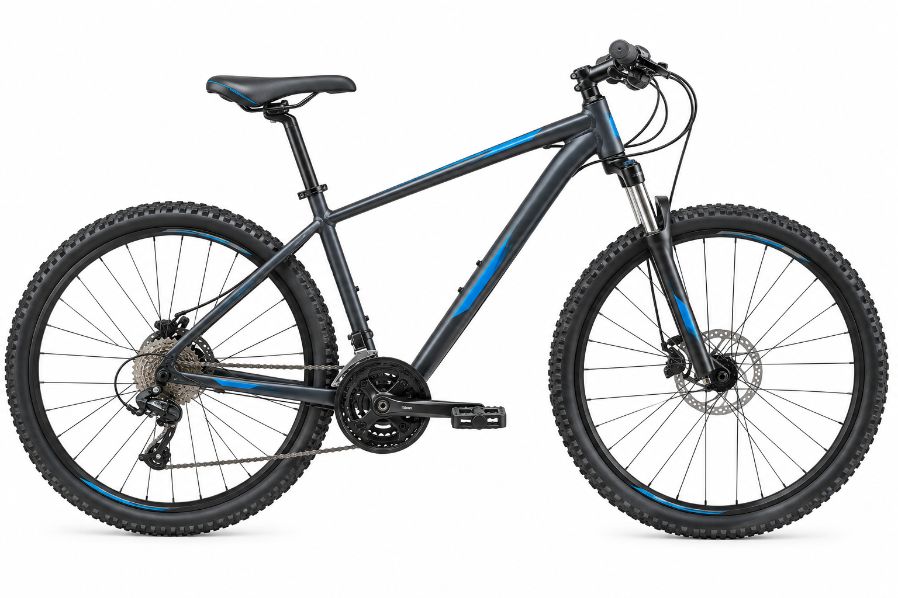
Repérez notamment :
- le cadre ;
- le guidon ;
- la fourche ;
- les roues ;
- les pneus ;
- les pédales ;
- le pédalier ;
- la chaîne ;
- les plateaux ;
- les pignons ;
- les freins ;
- la selle.
Q4 : Pour chaque fonction technique identifiée précédemment, recherchez les pièces du vélo qui participent à sa réalisation.
Important : une fonction n’est pas forcément réalisée par une seule pièce. Plusieurs éléments peuvent travailler ensemble.
6. Organiser nos observations
Dans votre document Writer, recopiez puis complétez le tableau suivant.
| Fonction technique | Éléments du vélo qui participent à cette fonction |
| Permettre de changer de direction | ............................................................ |
| Permettre de ralentir ou de s’arrêter | ............................................................ |
| ............................................................ | ............................................................ |
| ............................................................ | ............................................................ |
| ............................................................ | ............................................................ |
Votre tableau doit contenir au minimum quatre fonctions techniques différentes.
7. Une même fonction, plusieurs solutions ?
Tous les vélos ne sont pas construits exactement de la même manière.
Pourtant, ils doivent souvent assurer les mêmes fonctions techniques.
Prenons l’exemple du freinage.
Deux solutions couramment utilisées sur des vélos sont :
- le frein sur jante, par exemple à patins ;
- le frein à disque.
Q5 : Ces deux systèmes répondent-ils à la même fonction technique ? Justifiez.
Q6 : Utilisent-ils exactement les mêmes pièces et le même principe de fonctionnement ? Expliquez ce qui vous semble différent.
8. Découvrir les solutions techniques
Nous venons de voir qu’une même fonction peut être réalisée de différentes manières.
Les éléments ou systèmes choisis pour réaliser concrètement une fonction sont appelés des solutions techniques.
On peut donc écrire :
- Fonction technique : permettre au vélo de ralentir ou de s’arrêter.
- Solution technique 1 : frein sur jante à patins.
- Solution technique 2 : frein à disque.
Une même fonction technique peut donc avoir plusieurs solutions techniques possibles.
Q7 : Avec vos propres mots, complétez :
- Fonction technique : elle indique ............................................................
- Solution technique : elle indique ............................................................
9. Petit défi : choisir une solution adaptée
Un fabricant souhaite proposer un vélo destiné principalement aux chemins boueux et accidentés.
Pour les pneus, deux solutions sont envisagées :
- des pneus fins et presque lisses ;
- des pneus plus larges avec des crampons marqués.
Q8 : Quelle solution choisiriez-vous ?
Q9 : À quelle fonction technique cette solution participe-t-elle ?
Q10 : Expliquez pourquoi cette solution semble plus adaptée à l’usage prévu.
Q11 : Le pneu que vous avez choisi serait-il forcément le meilleur pour un vélo destiné uniquement à rouler rapidement sur une route sèche ? Expliquez.
10. Conclusion du travail
Sans retourner lire les définitions précédentes, complétez les phrases suivantes :
- Un problème complexe peut être ............................................................ en plusieurs problèmes plus simples.
- Ce que doit être capable de faire un objet pour répondre au besoin de l’utilisateur correspond à une ............................................................
- Les éléments choisis pour réaliser concrètement cette fonction constituent une ............................................................
- Pour une même fonction technique, il peut exister ............................................................
Dernière question :
Expliquez en deux ou trois phrases pourquoi un concepteur a intérêt à séparer un problème complexe en plusieurs fonctions techniques avant de chercher des solutions.
Enregistrez votre travail puis déposez-le dans l’espace d’échange.
Sources et ressources
- Ministère de l'Éducation nationale – Programme de technologie du cycle 4, BO n°9 du 29 février 2024 : Programme officiel de technologie du cycle 4
- Éduscol STI – Fonctions, solutions et constituants d'un objet technique : Ressource pédagogique sur les fonctions et solutions techniques
- Shimano – Documentation technique professionnelle pour les composants de vélo : Manuels et documents techniques Shimano
Les définitions et exemples ont été reformulés et simplifiés pour être adaptés au niveau 5e. Les exemples de composants et de systèmes de freinage s'appuient sur des ressources institutionnelles et sur de la documentation technique professionnelle.
Séance 4 : Pourquoi les vélos ont-ils changé au cours du temps ?
Thème : Les objets et les systèmes techniques : leurs usages et leurs interactions à découvrir et analyser
Problématique : Si le besoin de se déplacer existe depuis longtemps, pourquoi les vélos d'aujourd'hui sont-ils différents des premiers vélos ?
Compétence visée : Mettre en relation l'évolution des objets techniques avec l'évolution des besoins, des usages, des contraintes et des solutions techniques
Objectifs d’apprentissage :-
Ce que les élèves vont apprendre :
- Comprendre qu'un objet technique évolue au cours du temps.
- Comprendre que le besoin principal peut rester proche alors que les usages et les solutions techniques évoluent.
- Découvrir les notions de famille d'objets techniques et de lignée d'objets techniques.
- Identifier différentes raisons pouvant expliquer l'évolution d'un objet technique.
- Comprendre qu'une évolution technique répond généralement à un problème, un usage ou une contrainte.
-
Ce qu’ils vont apprendre à faire :
- Observer et comparer plusieurs objets techniques.
- Proposer puis vérifier un classement chronologique.
- Repérer ce qui a changé et ce qui est resté similaire.
- Mettre en relation une évolution technique avec un problème, un usage ou une contrainte.
- Organiser des informations dans un tableau.
- Justifier une hypothèse à partir d'indices.
-
Production attendue :
- Un document LibreOffice Writer nommé 5e_S4_nom1_nom2.odt.
- Les noms et prénoms des élèves du groupe.
- Le titre de la séance.
- Les réponses aux différentes questions.
- Un classement chronologique des vélos étudiés.
- Un tableau comparatif.
- Une courte conclusion expliquant pourquoi le vélo a évolué.
Le document devra être enregistré puis déposé dans l'espace d'échange à la fin de la séance, même s'il n'est pas entièrement terminé.
1. Le vélo a-t-il toujours ressemblé à celui que nous connaissons ?
Lors des séances précédentes, nous avons étudié le vélo actuel.
Nous avons identifié plusieurs fonctions techniques comme :
- permettre d'avancer ;
- permettre de changer de direction ;
- permettre de ralentir ou de s'arrêter ;
- supporter l'utilisateur.
Mais les ancêtres du vélo étaient très différents.
Le vélo a-t-il toujours utilisé les mêmes solutions techniques ?
Dans votre document, notez votre première hypothèse en une ou deux phrases.
2. Remettre les vélos dans l'ordre
Observez attentivement les différents vélos représentés sur l'image suivante.
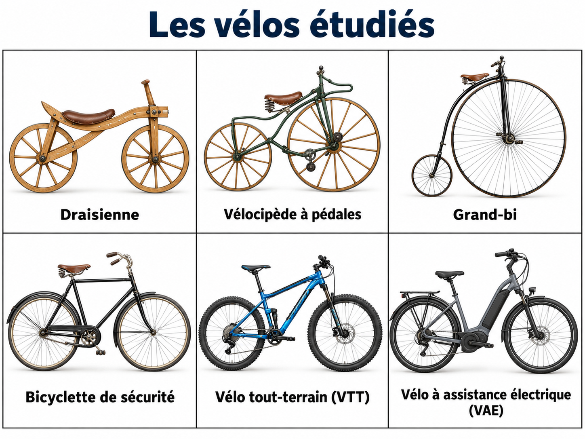
Sans effectuer de recherche pour le moment, classez-les du plus ancien au plus récent.
Q1 : Notez votre classement dans votre document.
Q2 : Pour chaque objet, indiquez au moins un indice qui vous a aidé à estimer son ancienneté.
Vous pouvez notamment observer :
- la taille des roues ;
- la présence ou non de pédales ;
- la présence d'une transmission ;
- la forme du cadre ;
- les systèmes de freinage visibles ;
- les matériaux visibles ;
- la présence d'une batterie ou d'un moteur électrique.
3. Vérifier nos hypothèses avec des données historiques
Comparez maintenant votre classement avec les informations issues de documents historiques et techniques.
| Objet ou étape étudiée | Repère historique | Évolution importante |
| Draisienne | 1817-1818 | Deux roues alignées ; propulsion avec les pieds ; absence de pédales. |
| Vélocipède à pédales | Milieu du XIXe siècle | Apparition de systèmes de pédalage permettant d'entraîner une roue. |
| Grand-bi | Deuxième moitié du XIXe siècle | Très grande roue avant permettant de parcourir davantage de distance par tour de pédale. |
| Bicyclette dite de sécurité | Fin du XIXe siècle | Deux roues de dimensions proches et développement de la transmission vers la roue arrière. |
| Vélo tout-terrain | Développement au XXe siècle | Adaptation à la pratique sur chemins et terrains accidentés. |
| Vélo à assistance électrique | Développement important à l'époque contemporaine | Ajout d'une assistance électrique au pédalage. |
Q3 : Votre classement était-il correct ? Si nécessaire, indiquez ce que vous avez dû modifier.
Q4 : Quelle différence essentielle observez-vous entre la draisienne et les vélocipèdes équipés de pédales ?
Q5 : Pourquoi le passage du grand-bi à des bicyclettes possédant deux roues de dimensions proches a-t-il constitué une évolution importante ?
4. Qu'est-ce qui a changé ?
Choisissez maintenant trois objets appartenant à trois périodes différentes.
Dans votre document Writer, recopiez puis complétez le tableau suivant :
| Critère observé | Objet 1 | Objet 2 | Objet 3 |
| Comment l'utilisateur provoque-t-il le déplacement ? | À compléter | À compléter | À compléter |
| Comment change-t-il de direction ? | À compléter | À compléter | À compléter |
| Comment peut-il ralentir ou s'arrêter ? | À compléter | À compléter | À compléter |
| Comment l'utilisateur est-il installé ? | À compléter | À compléter | À compléter |
| Quelle énergie est fournie pour le déplacement ? | À compléter | À compléter | À compléter |
Q6 : Parmi les éléments comparés, lequel vous semble avoir le plus évolué ? Justifiez avec un exemple précis.
5. Et qu'est-ce qui est resté proche ?
Les objets étudiés sont très différents, mais ils ont également des points communs.
Q7 : Quel besoin principal est commun à tous ces objets ?
Q8 : Retrouvez au moins trois fonctions techniques déjà étudiées que la plupart de ces objets doivent assurer.
Q9 : Les solutions techniques utilisées pour réaliser ces fonctions sont-elles toujours identiques ? Donnez un exemple.
6. Pourquoi modifier un objet qui fonctionne déjà ?
Imaginons maintenant qu'un vélo permette déjà de se déplacer correctement.
Pourquoi continuer à le modifier ?
Avant de lire les exemples suivants, proposez dans votre document au moins quatre raisons qui pourraient pousser des concepteurs ou fabricants à faire évoluer un vélo.
Q10 : Notez vos quatre propositions.
Comparez ensuite vos idées avec les pistes suivantes :
- augmenter la sécurité ;
- améliorer le confort ;
- rechercher de meilleures performances ;
- permettre de nouveaux usages ;
- rouler sur d'autres types de terrains ;
- transporter des personnes ou des marchandises ;
- réduire certains efforts de l'utilisateur ;
- utiliser de nouveaux matériaux ou procédés ;
- faciliter l'entretien ou la réparation ;
- répondre à de nouvelles contraintes environnementales ou réglementaires.
7. Relier un problème à une évolution technique
Une évolution technique n'apparaît généralement pas sans raison.
On peut rechercher une relation de la forme :
Problème, usage ou contrainte → évolution technique
Exemples :
- rouler sur des chemins accidentés → adaptation des pneus, du cadre et éventuellement des suspensions ;
- réduire l'effort fourni par le cycliste → assistance électrique ;
- transporter des charges importantes → développement de vélos cargo ;
- rechercher davantage de sécurité → évolution de la géométrie et des systèmes de freinage.
Q11 : Choisissez une évolution observée sur les vélos et expliquez :
- le problème, l'usage ou la contrainte ;
- la solution technique utilisée pour y répondre.
8. Une famille d'objets techniques
Des objets techniques différents peuvent répondre à un même besoin principal.
On peut les regrouper dans une famille d'objets techniques.
Par exemple, différents moyens de transport peuvent répondre au besoin de déplacer une personne, même s'ils utilisent des principes et des solutions techniques très différents.
Q12 : Parmi les objets suivants, lesquels peuvent être rapprochés par le besoin de déplacement ?
- trottinette ;
- automobile ;
- train ;
- chaussure ;
- motocyclette ;
- skateboard.
Justifiez au moins deux de vos choix.
9. Une lignée d'objets techniques
Nous pouvons aussi nous intéresser à la manière dont un type d'objet évolue au cours du temps.
Une lignée d'objets techniques permet de représenter différentes étapes ou générations d'objets liées par une évolution technique.
Dans le cas étudié aujourd'hui :
draisienne → vélocipède → grand-bi → bicyclette → vélos contemporains
Cette représentation permet d'observer les solutions conservées, remplacées ou ajoutées au fil du temps.
Q13 : Avec vos propres mots, expliquez la différence entre une famille et une lignée d'objets techniques.
10. Petit défi : faire évoluer un vélo
Imaginez maintenant un vélo destiné à être utilisé dans environ trente ans.
Vous ne devez pas commencer par inventer une forme futuriste.
Commencez par identifier un problème, un usage ou une contrainte.
Vous pouvez par exemple vous intéresser à :
- transporter deux enfants et des courses ;
- circuler facilement sur des routes très pentues ;
- prendre moins de place dans une habitation ;
- être réparé plus facilement ;
- remplacer facilement les pièces d'usure ;
- utiliser moins de matières premières ;
- augmenter la durée d'utilisation du vélo.
Q14 : Quel problème, usage ou contrainte avez-vous choisi ?
Q15 : Proposez une évolution ou une solution technique permettant d'y répondre.
Q16 : Expliquez en deux ou trois phrases pourquoi cette solution répond au problème choisi.
11. Conclusion du travail
Sans retourner lire les parties précédentes, complétez :
- Les objets techniques peuvent évoluer lorsque les ................................................, les usages, les contraintes ou les technologies évoluent.
- Des objets techniques pouvant être rapprochés par un même besoin peuvent former une ................................................ d'objets techniques.
- Les différentes étapes de l'évolution d'un type d'objet peuvent être représentées par une ................................................ d'objets techniques.
- Une évolution technique permet généralement de répondre à un ................................................, un usage ou une contrainte.
Dernière question :
Comparez la draisienne à un vélo actuel :
le besoin principal est-il très différent ? Les solutions techniques sont-elles identiques ? Expliquez en deux ou trois phrases.
Enregistrez votre travail puis déposez-le dans l'espace d'échange.
Sources et ressources
- Ministère de l'Éducation nationale – Programme de technologie du cycle 4 : Programme et compétences de technologie au collège
- Éduscol STI – Technologie au collège : Programmes et ressources d'accompagnement
- INPI – De la draisienne au vélo sans chaîne : Histoire des inventions et brevets liés au vélo
- INPI – Un vélocipède pour les bipèdes (1818) : Brevet historique de la draisienne
- Musée des Arts et Métiers – Bicycle Rudge ou « Grand Bi » : Ressource historique et technique sur la draisienne, le vélocipède et le grand-bi
- Musée des Arts et Métiers – Le Dicycle Otto Safety : Ressource sur l'évolution des cycles et la recherche de sécurité
Les repères historiques de cette séance sont volontairement simplifiés pour le niveau 5e. L'histoire du vélo comporte plusieurs inventions, perfectionnements, brevets et attributions parfois discutés. L'objectif de la séance est de comprendre l'évolution des solutions techniques et non de mémoriser une chronologie détaillée de toutes les inventions.
Séance 5 : Existe-t-il un meilleur vélo ?
Thème : Les objets et les systèmes techniques : leurs usages et leurs interactions à découvrir et analyser
Problématique : Existe-t-il un vélo meilleur que tous les autres ou le choix dépend-il de son utilisation ?
Compétence visée : Comparer plusieurs objets techniques et choisir une solution adaptée à un besoin en utilisant différents critères
Objectifs d’apprentissage :-
Ce que les élèves vont apprendre :
- Comprendre qu'un même besoin peut être satisfait par plusieurs objets techniques différents.
- Comprendre qu'un objet adapté à une situation ne l'est pas forcément à une autre.
- Découvrir la notion de critère de choix.
- Comprendre que les critères importants dépendent de l'usage et des contraintes.
- Comprendre qu'un choix technique est souvent un compromis.
-
Ce qu’ils vont apprendre à faire :
- Comparer plusieurs objets techniques.
- Identifier les critères importants dans une situation donnée.
- Lire et exploiter des caractéristiques issues de fiches techniques réelles.
- Organiser des informations dans un tableau comparatif.
- Justifier un choix en utilisant plusieurs critères.
- Distinguer une donnée mesurable d'une appréciation ou d'un jugement.
-
Production attendue :
- Un document LibreOffice Writer nommé 5e_S5_nom1_nom2.odt.
- Les noms et prénoms des élèves du groupe.
- Le titre de la séance.
- Les réponses aux différentes questions.
- L'exploitation d'un tableau comparatif de vélos réels.
- Des choix argumentés pour les situations proposées.
- Une courte conclusion répondant à la problématique.
Le document devra être enregistré puis déposé dans l'espace d'échange à la fin de la séance, même s'il n'est pas entièrement terminé.
1. Quel est le meilleur vélo ?
Lors de la séance précédente, nous avons constaté que le vélo a beaucoup évolué et qu'il existe aujourd'hui de nombreux modèles répondant à des usages différents.
Observez les quatre types de vélos suivants :
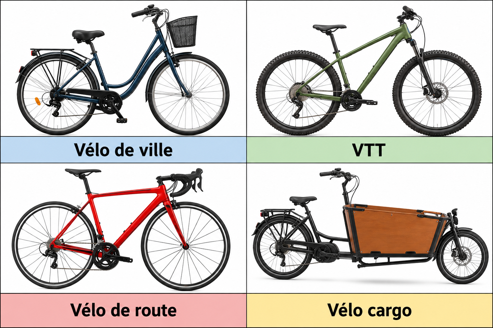
Q1 : Sans effectuer de recherche, lequel de ces quatre vélos vous semble être le meilleur ?
Q2 : Expliquez votre choix en une ou deux phrases.
Comparez ensuite votre réponse avec celle des autres groupes.
Q3 : Tous les groupes ont-ils choisi le même vélo ? Pourquoi, selon vous ?
2. Le meilleur... mais pour quel usage ?
Quatre personnes souhaitent acheter un vélo. Leurs situations sont différentes.
| Utilisateur | Situation |
| Lina | Elle parcourt environ 3 km pour aller au collège. Elle roule principalement en ville et doit transporter son sac. |
| Noah | Il utilise principalement son vélo sur des chemins forestiers comportant de la boue, des pierres et des pentes. |
| Émilie | Elle pratique le vélo pour effectuer de longues sorties sportives sur route et souhaite limiter la masse du vélo. |
| Sam | Il souhaite transporter régulièrement des courses et parfois deux enfants. |
Q4 : Quel type de vélo conseilleriez-vous à Lina ? Justifiez.
Q5 : Quel type de vélo conseilleriez-vous à Noah ? Justifiez.
Q6 : Quel type de vélo conseilleriez-vous à Émilie ? Justifiez.
Q7 : Quel type de vélo conseilleriez-vous à Sam ? Justifiez.
3. Sur quoi nous sommes-nous appuyés pour choisir ?
Pour choisir un vélo, vous avez utilisé certaines caractéristiques comme :
- la masse ;
- le prix ;
- le terrain d'utilisation ;
- la capacité de transport ;
- la présence d'une assistance électrique ;
- la facilité d'utilisation ;
- les équipements ;
- la facilité d'entretien ou de réparation.
Q8 : Dans votre document, listez au moins cinq éléments que l'on pourrait utiliser pour comparer deux vélos.
4. Découvrir les critères de choix
Les caractéristiques que l'on prend en compte pour comparer plusieurs solutions sont appelées des critères de choix.
Certains critères peuvent être mesurés précisément :
- la masse en kilogrammes ;
- le prix en euros ;
- la capacité de chargement en kilogrammes ;
- l'autonomie d'un vélo électrique en kilomètres.
D'autres sont plus difficiles à résumer par une seule valeur :
- le confort ;
- la facilité de réparation ;
- l'adaptation à un type de terrain ;
- la facilité d'utilisation.
Q9 : Donnez deux exemples de critères mesurables.
Q10 : Donnez deux exemples de critères qui nécessitent davantage d'observation ou d'appréciation.
5. Comparer de vrais vélos avec des données de constructeur
Nous allons maintenant travailler à partir de caractéristiques publiées par un fabricant et distributeur de vélos.
Les quatre modèles choisis représentent des usages différents.
| Caractéristique | A Elops 120 |
B Rockrider EXPL 500 |
C Van Rysel EDR AF2 |
D E-Three 500 |
| Type principal | Vélo de ville | VTT | Vélo de route | Vélo cargo électrique |
| Masse annoncée | 17,5 kg | environ 14,9 kg en taille M, sans pédales | environ 10,3 kg en taille M | 39 kg |
| Prix observé lors de la préparation de la séance | environ 299 € | environ 500 € | environ 1 300 € | environ 2 500 € |
| Terrain / usage annoncé | Ville | Randonnée VTT et chemins | Route | Transport en ville et sur route |
| Équipement caractéristique | Garde-boue, béquille, éclairage dynamo | Fourche suspendue 100 mm, freins à disque hydrauliques | Cadre aluminium, fourche carbone, pneus 32 mm | Assistance électrique, plateformes de chargement |
| Transport | Compatible avec un siège enfant | Transport limité | Transport limité | Jusqu'à 2 enfants ou 1 adulte selon la configuration |
| Particularité | Position adaptée à l'usage urbain | Adapté aux terrains accidentés | Masse faible parmi les quatre modèles | Batterie 711 Wh et assistance électrique |
Données issues des fiches techniques Decathlon consultées lors de la préparation de la séance. Les caractéristiques peuvent varier selon la taille, la version du produit et les évolutions du catalogue. Les prix sont uniquement un relevé ponctuel et peuvent changer.
Q11 : Quel modèle possède la masse la plus faible ?
Q12 : Quel modèle est conçu pour transporter le plus de personnes ou de marchandises ?
Q13 : Quel modèle possède des équipements spécifiquement adaptés aux chemins accidentés ?
Q14 : Quel modèle semble conçu en priorité pour rouler sur route avec une masse réduite ?
Q15 : Quel modèle possède une assistance électrique ?
Q16 : Existe-t-il un modèle qui soit meilleur que tous les autres sur tous les critères ? Justifiez avec au moins deux exemples issus du tableau.
6. Les données seules ne choisissent pas à notre place
Une fiche technique fournit des informations, mais elle ne dit pas automatiquement quel vélo choisir.
Il faut d'abord connaître la situation de l'utilisateur.
Situation :
Alex effectue régulièrement un trajet d'environ 5 km sur route. Son trajet comporte une côte. Il transporte un sac et son budget est limité.
Q17 : Relevez dans cette situation toutes les informations qui peuvent influencer son choix.
Q18 : Transformez ces informations en trois critères prioritaires.
Q19 : À partir du tableau, quel modèle choisiriez-vous parmi A, B, C et D ?
Q20 : Justifiez votre choix en utilisant au moins trois critères.
7. Tous les critères ont-ils la même importance ?
Pour Alex, le prix peut être très important.
Pour Sam, qui transporte deux enfants, la capacité de transport peut être prioritaire.
Pour Noah, le comportement sur les chemins peut être plus important que la masse minimale.
Q21 : Pourquoi ne peut-on pas simplement choisir le vélo possédant le plus grand nombre de « bonnes caractéristiques » ?
Q22 : Choisissez deux utilisateurs parmi Lina, Noah, Émilie et Sam et indiquez pour chacun :
- son critère le plus important ;
- un critère qu'il pourrait accepter comme moins favorable.
8. Découvrir le compromis
Un objet ne peut généralement pas être optimal pour tous les critères en même temps.
Choisir consiste donc souvent à privilégier certaines caractéristiques et à en accepter d'autres moins favorables.
On appelle cela un compromis.
Un compromis consiste à rechercher une solution adaptée aux priorités d'une situation, sans exiger qu'elle soit la meilleure pour tous les critères.
Q23 : Donnez un exemple de compromis visible dans le tableau des quatre vélos.
9. Petit défi : changeons les priorités
Reprenons les quatre modèles A, B, C et D.
Pour chacune des situations suivantes, choisissez le modèle qui vous semble le plus adapté.
Vous devez indiquer deux critères qui expliquent votre choix.
| Situation | Modèle choisi | Critère 1 | Critère 2 |
| Effectuer principalement des sorties sportives sur route | À compléter | À compléter | À compléter |
| Faire régulièrement de la randonnée sur des chemins accidentés | À compléter | À compléter | À compléter |
| Transporter régulièrement deux enfants | À compléter | À compléter | À compléter |
| Effectuer quotidiennement un petit trajet urbain avec un budget limité | À compléter | À compléter | À compléter |
Q24 : Pourquoi le modèle choisi change-t-il alors que les quatre vélos proposés restent exactement les mêmes ?
10. Conclusion du travail
Sans retourner lire les définitions précédentes, complétez :
- Pour comparer plusieurs solutions, on utilise des ................................................ .
- L'importance d'un critère dépend de l'................................................ et des contraintes de la situation.
- Une solution n'est pas forcément la meilleure pour tous les ................................................ .
- Accepter qu'une solution soit moins performante sur certains critères pour en privilégier d'autres correspond à un ................................................ .
Dernière question :
Répondez maintenant à la problématique de départ :
« Existe-t-il un meilleur vélo ? »
Justifiez votre réponse en deux ou trois phrases en utilisant les mots :
usage — critère — compromis
Enregistrez votre travail puis déposez-le dans l'espace d'échange.
Sources et ressources
- Ministère de l'Éducation nationale – Programme de technologie du cycle 4 : Programme officiel de technologie
- Decathlon / Elops – Vélo de ville Elops 120 : Fiche technique constructeur / distributeur
- Decathlon / Rockrider – VTT EXPL 500 : Fiche technique constructeur / distributeur
- Decathlon / Van Rysel – EDR AF2 : Fiche technique constructeur / distributeur
- Decathlon / BTWIN – Vélo cargo électrique E-Three 500 : Fiche technique constructeur / distributeur
Les données techniques de la partie 5 proviennent de fiches produits réelles. Elles ont été sélectionnées et simplifiées pour permettre une comparaison adaptée au niveau 5e. Les prix correspondent à un relevé effectué lors de la préparation du cours et peuvent évoluer. Les modèles proposés constituent des exemples et ne représentent pas l'ensemble des vélos disponibles sur le marché.
Séance 6 : Comment prouver qu'une situation est différente d'une autre ?
Thème : Les objets et les systèmes techniques : leurs usages et leurs interactions à découvrir et analyser
Problématique : Comment utiliser des mesures pour comparer objectivement deux situations ?
Compétence visée : Mesurer et comparer une caractéristique à partir d'un protocole fourni et exploiter les données obtenues
Objectifs d’apprentissage :-
Ce que les élèves vont apprendre :
- Comprendre qu'une impression ou une opinion ne suffit pas pour réaliser une comparaison objective.
- Comprendre l'intérêt d'une grandeur mesurable.
- Découvrir la notion de protocole expérimental.
- Comprendre pourquoi certaines conditions doivent rester identiques pendant une comparaison.
- Comprendre l'intérêt de réaliser plusieurs mesures.
- Comprendre que les résultats obtenus constituent des données que l'on peut organiser et analyser.
-
Ce qu’ils vont apprendre à faire :
- Suivre précisément un protocole fourni.
- Utiliser un micro:bit comme instrument de mesure.
- Effectuer plusieurs mesures dans des conditions définies.
- Organiser les résultats dans un tableau.
- Calculer une moyenne simple.
- Comparer deux séries de résultats.
- Rédiger une conclusion à partir de données mesurées.
-
Production attendue :
- Un document LibreOffice Writer nommé 5e_S6_nom1_nom2.odt.
- Les noms et prénoms des élèves du groupe.
- Le titre de la séance.
- Les réponses aux différentes questions.
- Un tableau contenant les six mesures réalisées.
- Le calcul des deux valeurs moyennes.
- Une conclusion basée sur les résultats obtenus.
Le document devra être enregistré puis déposé dans l'espace d'échange à la fin de la séance, même s'il n'est pas entièrement terminé.
1. Peut-on toujours faire confiance à notre impression ?
Observez les deux images suivantes :
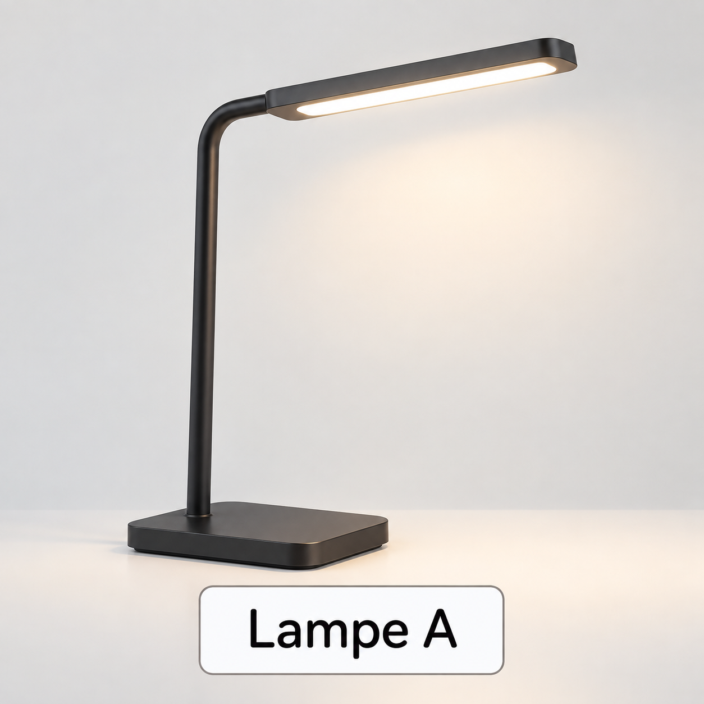 |
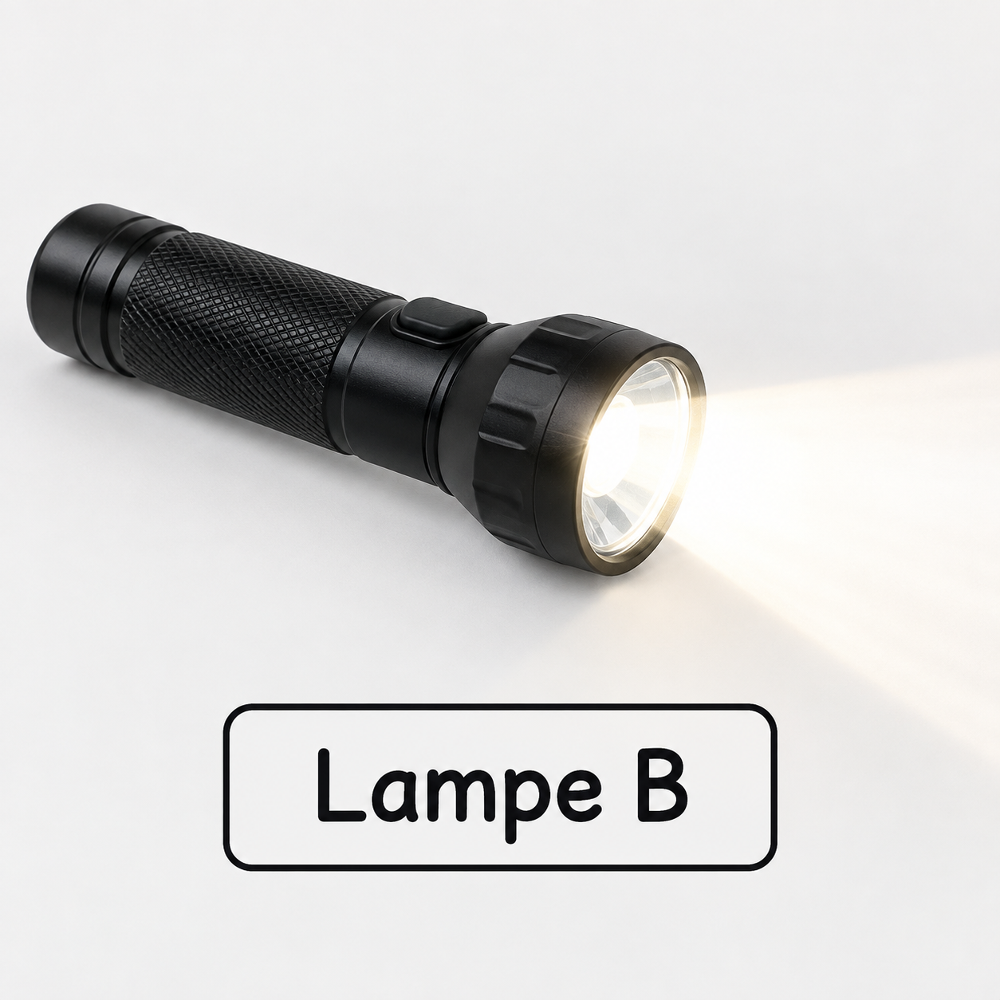 |
Q1 : Sans rechercher d'information supplémentaire, laquelle de ces deux lampes vous semble capable d'éclairer le plus ?
Q2 : Sur quels indices vous êtes-vous appuyés pour répondre ?
Comparez votre réponse avec celle des autres groupes.
Q3 : Tous les groupes ont-ils nécessairement fait le même choix ?
Q4 : Cette observation suffit-elle pour prouver qu'une lampe éclaire réellement davantage que l'autre ? Expliquez.
2. Comment passer d'une impression à une mesure ?
Lors de la séance précédente, nous avons comparé plusieurs vélos à l'aide de critères et de données.
Certaines caractéristiques peuvent être exprimées par des valeurs mesurées :
- une masse ;
- une distance ;
- une durée ;
- une température ;
- une vitesse ;
- un niveau de lumière.
Q5 : Que pourrions-nous utiliser pour savoir si une zone reçoit plus de lumière qu'une autre sans nous fier uniquement à nos yeux ?
Q6 : Pourquoi une valeur mesurée peut-elle être plus utile qu'une phrase comme « je trouve qu'il fait plus clair » ?
3. Utiliser le micro:bit comme instrument de mesure
Le BBC micro:bit peut utiliser les LED de son écran pour détecter le niveau de lumière qu'il reçoit.
Le programme utilisé aujourd'hui affiche une valeur comprise entre :
- 0 : niveau de lumière très faible ;
- 255 : niveau de lumière très élevé.
Attention : cette valeur représente un niveau de luminosité mesuré par le micro:bit. Elle n'est pas exprimée en lux.
Nous n'allons pas modifier le programme aujourd'hui : le micro:bit sera uniquement utilisé comme instrument de mesure.
Q7 : Quelle donnée allons-nous relever pendant l'expérience ?
4. Peut-on mesurer n'importe comment ?
Imaginons que deux groupes cherchent à comparer deux situations d'éclairement.
Voici quelques méthodes possibles :
- déplacer le micro:bit entre les deux mesures ;
- réaliser une mesure près d'une fenêtre et l'autre au fond de la salle ;
- orienter différemment le micro:bit ;
- réaliser trois mesures dans une situation et seulement une dans l'autre ;
- changer plusieurs éléments en même temps.
Q8 : Ces méthodes permettraient-elles de savoir précisément ce qui provoque une différence entre les résultats ? Pourquoi ?
Q9 : Quels éléments faudrait-il essayer de garder identiques pendant la comparaison ?
5. Construire une comparaison fiable
Pour comparer correctement deux situations, il faut essayer de ne modifier volontairement qu'un seul paramètre à la fois.
Dans notre expérience :
- le micro:bit restera au même endroit ;
- son orientation restera identique ;
- nous utiliserons le même programme ;
- nous réaliserons le même nombre de mesures ;
- nous chercherons uniquement à modifier la quantité de lumière atteignant le micro:bit.
Q10 : Pourquoi est-il important de ne pas modifier plusieurs paramètres en même temps ?
6. Découvrir le protocole expérimental
Une suite précise d'étapes permettant de réaliser une expérience dans des conditions définies est appelée un protocole expérimental.
Un protocole permet à plusieurs personnes de réaliser une expérience de manière comparable et d'obtenir des résultats que l'on peut analyser.
Pour cette activité, nous allons comparer deux situations :
- Situation A : micro:bit posé sur la table dans les conditions normales d'éclairage de la salle ;
- Situation B : même installation, mais avec une main placée quelques centimètres au-dessus afin de réduire partiellement la lumière reçue.
Hypothèse avant l'expérience :
Q11 : Dans quelle situation pensez-vous que le micro:bit affichera la valeur la plus élevée ? Pourquoi ?
Respectez ensuite précisément le protocole suivant :
- Posez le micro:bit à plat sur la table, toujours au même endroit.
- Ne déplacez plus la carte pendant toute l'expérience.
- Laissez fonctionner le programme quelques secondes.
- Attendez que la valeur soit suffisamment stable pour pouvoir la relever.
- Notez une première mesure de la situation A.
- Recommencez deux fois dans les mêmes conditions afin d'obtenir trois mesures.
- Placez ensuite votre main quelques centimètres au-dessus du micro:bit, sans le toucher et sans masquer complètement toute la lumière.
- Essayez de garder la main dans la même position.
- Attendez quelques secondes puis relevez une première mesure de la situation B.
- Recommencez deux fois afin d'obtenir à nouveau trois mesures.
Important : ne déplacez pas le micro:bit entre les deux séries. Essayez également de conserver les mêmes conditions d'éclairage général dans la salle.
Q12 : Quel est le seul paramètre que nous cherchons volontairement à modifier entre les situations A et B ?
7. Réaliser et organiser les mesures
Complétez dans votre document Writer :
| Situation testée | Mesure 1 | Mesure 2 | Mesure 3 | Moyenne |
| A — micro:bit posé sur la table | À compléter | À compléter | À compléter | À compléter |
| B — main placée au-dessus | À compléter | À compléter | À compléter | À compléter |
Q13 : Les trois valeurs d'une même série sont-elles exactement identiques ?
Q14 : Si elles sont légèrement différentes, cela signifie-t-il forcément que l'expérience est mauvaise ? Expliquez.
8. Pourquoi réaliser plusieurs mesures ?
Une mesure peut varier légèrement à cause de différents facteurs :
- petite variation de la lumière ambiante ;
- position légèrement différente de la main ;
- mouvement autour du capteur ;
- variation de la valeur mesurée au moment où elle est lue.
Réaliser plusieurs mesures permet de ne pas baser toute la conclusion sur une seule valeur.
Nous allons calculer la moyenne des trois mesures de chaque série.
Pour trois mesures :
Moyenne = (mesure 1 + mesure 2 + mesure 3) ÷ 3
Q15 : Calculez la moyenne de la situation A.
Q16 : Calculez la moyenne de la situation B.
Vous pouvez arrondir le résultat à l'unité si nécessaire.
9. Des mesures aux données
Les valeurs obtenues pendant l'expérience constituent des données.
Ces données peuvent être :
- enregistrées ;
- classées ;
- traitées ;
- comparées ;
- utilisées pour construire une conclusion.
Q17 : Quelle situation obtient la moyenne la plus élevée ?
Q18 : Cette observation correspond-elle à votre hypothèse de la question 11 ?
Q19 : Si votre hypothèse était différente du résultat obtenu, devez-vous modifier les résultats ou modifier votre conclusion ? Expliquez.
10. Qu'est-ce qu'une comparaison objective ?
Une comparaison devient plus objective lorsqu'elle s'appuie sur une méthode clairement définie et sur des données plutôt que sur une simple impression.
Dans cette activité, nous avons utilisé :
- une grandeur observable : le niveau de lumière détecté ;
- un instrument de mesure : le micro:bit ;
- un protocole fourni ;
- plusieurs mesures ;
- un tableau de données ;
- un calcul simple ;
- une comparaison des résultats.
Q20 : Parmi ces éléments, lesquels manqueraient si nous nous étions simplement contentés de regarder la salle et de dire « il fait plus sombre » ?
11. Petit défi : quelle méthode est la plus fiable ?
Trois groupes veulent comparer deux situations d'éclairement.
| Groupe | Méthode utilisée |
| Groupe A | Les élèves regardent simplement les deux situations et choisissent celle qui leur paraît la plus lumineuse. |
| Groupe B | Ils réalisent une mesure dans chaque situation, mais déplacent le micro:bit entre les deux mesures. |
| Groupe C | Ils conservent le micro:bit au même endroit, réalisent trois mesures dans chaque situation puis comparent les moyennes. |
Q21 : Quel groupe utilise la méthode qui permet la comparaison la plus fiable parmi les trois ?
Q22 : Expliquez précisément pourquoi.
Q23 : Identifiez au moins une faiblesse dans la méthode du groupe A et une dans celle du groupe B.
12. Conclusion du travail
Sans retourner lire les parties précédentes, complétez :
- Pour comparer objectivement deux situations, il est utile d'utiliser une grandeur que l'on peut ................................................ .
- Une suite précise d'étapes permettant de réaliser une expérience est appelée un ................................................ expérimental.
- Les valeurs obtenues pendant une expérience constituent des ................................................ .
- Réaliser plusieurs mesures puis calculer une ................................................ permet de résumer plusieurs valeurs.
Dernière question :
Un élève affirme :
« Je n'ai pas besoin de mesurer : je vois bien qu'il y a moins de lumière sous ma main. »
Expliquez en deux ou trois phrases pourquoi l'observation reste utile mais ne remplace pas une comparaison réalisée avec un protocole et des mesures.
Enregistrez votre travail puis déposez-le dans l'espace d'échange.
Sources et ressources
- Ministère de l'Éducation nationale – Programme de technologie du cycle 4 : Programme officiel de technologie
- micro:bit Educational Foundation – Capteurs du BBC micro:bit : Documentation officielle des capteurs
- Microsoft MakeCode – Light Level : Documentation officielle de la mesure du niveau de lumière
- micro:bit Educational Foundation – Capteur de lumière du soleil : Exemple officiel d'utilisation du micro:bit comme capteur de lumière
Le micro:bit utilise les LED de son écran pour détecter le niveau de lumière. MakeCode fournit une valeur comprise entre 0 et 255 : il s'agit d'un niveau de luminosité utilisé par le micro:bit et non d'une mesure en lux. Le protocole de cette séance a été simplifié pour permettre aux élèves de 5e de travailler sur la comparaison de mesures dans des conditions contrôlées.
Séance 7 : Que devient un objet avant et après son utilisation ?
Thème : Les objets et les systèmes techniques : leurs usages et leurs interactions à découvrir et analyser
Problématique : L'impact d'un objet technique commence-t-il seulement au moment où on l'utilise ?
Compétence visée : Identifier les principales étapes du cycle de vie d'un objet technique et comprendre que les choix techniques peuvent influencer ses impacts
Objectifs d’apprentissage :-
Ce que les élèves vont apprendre :
- Comprendre qu'un objet technique existe bien avant son utilisation et continue d'avoir des conséquences après celle-ci.
- Découvrir les principales étapes du cycle de vie d'un objet technique.
- Comprendre que la fabrication d'un objet nécessite des matières premières, de l'énergie et des transports.
- Comprendre que la durée d'utilisation, la réparation, le réemploi, la réutilisation et le recyclage peuvent modifier les impacts liés à un objet.
- Comprendre que le choix d'un matériau peut avoir des conséquences sur la fabrication, l'utilisation, la réparation et la fin de vie.
-
Ce qu’ils vont apprendre à faire :
- Reconstituer les principales étapes de la vie d'un objet technique.
- Identifier les matériaux utilisés dans quelques composants simples.
- Classer des étapes dans un ordre logique.
- Repérer différentes étapes pouvant avoir un impact sur l'environnement.
- Proposer des solutions permettant d'allonger la durée d'utilisation d'un objet.
- Distinguer réparation, réemploi, réutilisation et recyclage.
-
Production attendue :
- Un document LibreOffice Writer nommé 5e_S7_nom1_nom2.odt.
- Les noms et prénoms des élèves du groupe.
- Le titre de la séance.
- Les réponses aux différentes questions.
- Une frise représentant les principales étapes du cycle de vie d'un vélo.
- Un tableau consacré à quelques composants du vélo.
- Une courte proposition permettant de prolonger la durée d'utilisation d'un objet technique.
Le document devra être enregistré puis déposé dans l'espace d'échange à la fin de la séance, même s'il n'est pas entièrement terminé.
1. Avant d'arriver dans le magasin...
Imaginez un vélo neuf présenté dans un magasin.
Nous connaissons son utilisation, mais il ne s'est évidemment pas retrouvé directement dans le magasin.
Que s'est-il passé avant ?
En groupe, imaginez toutes les étapes qui ont pu être nécessaires avant qu'un vélo puisse être acheté.
Q1 : Listez au moins cinq étapes qui ont probablement eu lieu avant l'arrivée du vélo dans le magasin.
Essayez ensuite de remettre vos propositions dans un ordre logique.
2. De quoi est fabriqué un vélo ?
Un vélo est constitué de nombreuses pièces qui n'utilisent pas toutes les mêmes matériaux.
À partir de l'image du vélo déjà utilisée dans les séances précédentes et, si nécessaire, d'une recherche rapide, complétez le tableau suivant.
| Élément du vélo | Matériau(x) possible(s) |
| Cadre | À compléter |
| Pneu | À compléter |
| Chaîne | À compléter |
| Selle | À compléter |
| Jante | À compléter |
| Poignées | À compléter |
Q2 : Pour chaque élément, indiquez un ou plusieurs matériaux possibles.
Q3 : Un même élément peut-il être fabriqué avec des matériaux différents selon le modèle de vélo ? Donnez un exemple.
3. D'où viennent les matériaux ?
Avant de devenir une pièce de vélo, les matériaux doivent être obtenus puis transformés.
Par exemple :
- les métaux sont obtenus à partir de minerais ou de matières métalliques recyclées ;
- de nombreux plastiques sont produits à partir de ressources fossiles ou de matières recyclées ;
- le caoutchouc peut être d'origine naturelle ou synthétique.
Q4 : Pourquoi l'extraction, la production et la transformation des matières nécessitent-elles de l'énergie ?
Q5 : Quels impacts environnementaux peuvent être associés à ces étapes ? Proposez au moins deux exemples.
4. Et après la fabrication des pièces ?
Une fois les matériaux transformés et les pièces fabriquées, le vélo doit encore être assemblé puis acheminé jusqu'à son utilisateur.
Complétez :
Matières premières → transformation → ................................ → ................................ → transport → distribution → utilisation
Q6 : Quelles étapes avez-vous ajoutées ?
Q7 : Pourquoi le transport d'un objet peut-il lui aussi avoir des impacts environnementaux ?
5. Et lorsque l'utilisateur n'en veut plus ?
Imaginons maintenant qu'un vélo ait été utilisé pendant plusieurs années.
Son propriétaire ne souhaite plus l'utiliser.
Q8 : Quelles possibilités peut-on envisager pour ce vélo ?
Trouvez au moins quatre solutions différentes.
Réfléchissez selon plusieurs situations :
- le vélo fonctionne encore ;
- une seule pièce est cassée ;
- plusieurs composants sont usés ;
- le vélo n'est plus utilisable dans son état actuel.
6. Réparer, réemployer, réutiliser ou recycler ?
Toutes les solutions proposées ne correspondent pas exactement à la même chose.
- Réparer : remettre l'objet en état afin de prolonger son utilisation.
- Réemploi : utiliser de nouveau un produit qui n'est pas devenu un déchet, pour un usage identique ou proche.
- Réutilisation : permettre à un produit ou à certains de ses composants de connaître un nouvel usage après être passé par une filière adaptée.
- Recyclage : traiter les déchets afin de récupérer des matières pouvant être utilisées à nouveau.
Q9 : Pour chaque exemple suivant, indiquez la solution qui semble la plus adaptée :
| Situation | Solution possible |
| Le vélo fonctionne mais son propriétaire souhaite en acheter un autre. | À compléter |
| Le câble de frein est cassé. | À compléter |
| Le vélo est hors d'usage mais certaines pièces peuvent encore servir. | À compléter |
| Une pièce métallique hors d'usage est transformée pour récupérer la matière. | À compléter |
Q10 : Pourquoi réparation et recyclage ne correspondent-ils pas à la même démarche ?
7. Découvrir le cycle de vie
Toutes les étapes étudiées constituent le cycle de vie d'un produit.
L'ADEME décrit le cycle de vie comme l'ensemble des étapes de l'existence d'un produit, depuis l'obtention des matières premières jusqu'à sa fin de vie et sa valorisation éventuelle.
Nous pouvons le simplifier ainsi :
Matières premières → fabrication → transport / distribution → utilisation → fin de vie
Mais le parcours n'est pas toujours une simple ligne droite.
La réparation, le réemploi et la réutilisation peuvent permettre de prolonger l'utilisation de l'objet ou de ses composants.
Le recyclage permet quant à lui de récupérer certaines matières lorsque l'objet ou ses composants deviennent des déchets.
8. Construire la frise du vélo
Dans votre document Writer, réalisez une frise présentant le cycle de vie simplifié d'un vélo.
Votre frise devra contenir au minimum :
- obtention des matières premières ;
- transformation des matériaux ;
- fabrication des pièces ;
- assemblage du vélo ;
- transport et distribution ;
- utilisation ;
- entretien ou réparation éventuelle ;
- réemploi, réutilisation, recyclage ou élimination.
Ajoutez sous chaque étape une phrase courte expliquant ce qui s'y passe.
Q11 : Ajoutez au moins deux flèches permettant de montrer qu'un vélo ou certaines pièces peuvent revenir vers une nouvelle phase d'utilisation au lieu d'aller immédiatement vers l'élimination.
9. Tous les matériaux ont-ils les mêmes conséquences ?
Deux vélos peuvent assurer les mêmes fonctions tout en utilisant des matériaux et des solutions techniques différents.
Imaginons deux cadres :
- cadre A : très léger mais difficile à réparer et dont la fin de vie est complexe ;
- cadre B : un peu plus lourd mais conçu pour être facilement démonté, réparé et dont les matériaux peuvent être plus facilement récupérés.
Q12 : Quel cadre choisiriez-vous si votre seul critère était la masse ?
Q13 : Votre choix serait-il forcément le même si votre objectif était de conserver le vélo le plus longtemps possible ?
Q14 : Quel lien pouvez-vous faire avec la notion de compromis étudiée lors de la séance 5 ?
10. Petit défi : comment prolonger la vie d'un vélo ?
Un fabricant souhaite réduire les impacts liés à ses vélos en agissant sur leur cycle de vie.
En groupe, proposez au moins trois améliorations.
Vous pouvez agir sur :
- la quantité ou le type de matériaux ;
- la facilité de démontage ;
- la durée de vie des composants ;
- l'entretien ;
- la réparation ;
- la disponibilité des pièces détachées ;
- le réemploi ;
- le recyclage ;
- le transport.
Q15 : Présentez vos trois propositions.
Q16 : Pour chaque proposition, indiquez l'étape du cycle de vie concernée.
Q17 : Choisissez ensuite celle qui vous semble la plus intéressante et expliquez précisément ce qu'elle permettrait d'améliorer.
11. Des données publiques sur la fin de vie des objets
Les déchets, le réemploi, la réparation et le recyclage ne sont pas seulement des sujets théoriques.
L'ADEME publie en accès libre sur data.gouv.fr plusieurs jeux de données permettant d'étudier la gestion réelle des déchets et les solutions de l'économie circulaire en France.
Par exemple, le service « Que faire de mes objets et déchets ? » rassemble des informations sur des acteurs de :
- la réparation ;
- le réemploi ;
- la réutilisation ;
- le tri et le recyclage.
Q18 : Pourquoi peut-il être intéressant d'utiliser des données publiques réelles plutôt que d'inventer des exemples lorsqu'on étudie le devenir des objets ?
12. Conclusion du travail
Sans retourner lire les parties précédentes, complétez :
- Les différentes étapes de l'existence d'un objet constituent son ................................................ .
- Avant la fabrication d'un objet, il faut obtenir et transformer des ................................................ .
- Réparer un objet permet généralement de prolonger sa durée d'................................................ .
- Utiliser de nouveau un produit encore utilisable correspond au ................................................ .
- Transformer des déchets pour récupérer de la matière correspond au ................................................ .
Dernière question :
Répondez à la problématique de départ :
« L'impact d'un objet technique commence-t-il seulement au moment où on l'utilise ? »
Justifiez en trois ou quatre phrases en citant au moins trois étapes différentes du cycle de vie.
Enregistrez votre travail puis déposez-le dans l'espace d'échange.
Sources et ressources
- ADEME – Le cycle de vie d'un produit : Présentation du cycle de vie d'un produit
- ADEME – Économie circulaire : Réemploi, réparation, réutilisation et recyclage
- ADEME – Réemploi, réutilisation et réparation : Enjeux et bénéfices de l'allongement de la durée d'usage
- data.gouv.fr / ADEME – Que faire de mes déchets : Produits : Jeu de données ouvert sur le devenir des objets et déchets
- data.gouv.fr / ADEME – Acteurs de l'économie circulaire : Données sur les acteurs du réemploi, de la réparation et du tri
- data.gouv.fr / ADEME – SINOE, destination des déchets ménagers : Données réelles de traitement des déchets
Le cycle de vie présenté dans cette séance est volontairement simplifié pour le niveau 5e. Les impacts environnementaux réels d'un produit dépendent de nombreux paramètres : matériaux, procédés de fabrication, énergie utilisée, durée d'usage, entretien, transport et fin de vie. Les exemples proposés servent à comprendre la démarche et ne constituent pas une analyse complète du cycle de vie d'un vélo réel.
Séance 8 : Un objet qui ne fonctionne plus est-il forcément à jeter ?
Thème : Structure, fonctionnement, comportement : des objets et des systèmes techniques à comprendre
Problématique : Comment utiliser des observations et des vérifications simples avant de décider de remplacer un objet ?
Compétence visée : Identifier un dysfonctionnement simple, exploiter des observations pour rechercher son origine et proposer une intervention adaptée
Objectifs d’apprentissage :-
Ce que les élèves vont apprendre :
- Comprendre qu'un objet qui ne fonctionne plus n'est pas forcément définitivement inutilisable.
- Distinguer un dysfonctionnement observé de sa cause.
- Comprendre qu'il faut observer et vérifier avant d'intervenir.
- Découvrir la notion de diagnostic.
- Comprendre qu'une vérification apporte une information permettant d'écarter ou de privilégier une cause possible.
- Comprendre qu'une intervention doit être suivie d'un nouveau test.
- Comprendre que réparer peut, dans certaines situations, prolonger la durée d'utilisation d'un objet.
-
Ce qu’ils vont apprendre à faire :
- Décrire précisément un dysfonctionnement.
- Utiliser une liste guidée de causes possibles.
- Lire les résultats de vérifications simples.
- Écarter progressivement certaines causes possibles.
- Identifier une cause probable à partir d'indices.
- Proposer une intervention simple.
- Expliquer comment vérifier que l'intervention a résolu le problème.
-
Production attendue :
- Un document LibreOffice Writer nommé 5e_S8_nom1_nom2.odt.
- Les noms et prénoms des élèves du groupe.
- Le titre de la séance.
- Les réponses aux différentes questions.
- Un tableau de diagnostic.
- L'analyse de plusieurs situations de dysfonctionnement.
- Une courte conclusion expliquant la méthode utilisée.
Le document devra être enregistré puis déposé dans l'espace d'échange à la fin de la séance, même s'il n'est pas entièrement terminé.
1. Observer avant d'expliquer
Imaginez la situation suivante :
Une petite lampe alimentée par des piles ne s'allume plus lorsque l'on appuie sur son interrupteur.
Q1 : Décrivez uniquement ce que vous observez, sans essayer d'expliquer pourquoi.
Q2 : Quel devrait être le fonctionnement normal de la lampe ?
Q3 : Peut-on déjà savoir avec certitude quelle pièce est responsable ? Expliquez.
2. Un même problème peut avoir plusieurs causes
La lampe ne s'allume pas.
Plusieurs causes sont possibles :
- les piles sont absentes ;
- une pile est placée dans le mauvais sens ;
- les piles sont déchargées ;
- l'interrupteur fonctionne mal ;
- un contact électrique est mauvais ;
- la source lumineuse est défectueuse.
Q4 : Parmi ces causes, lesquelles vous semblent les plus simples à vérifier sans démonter la lampe ?
Q5 : Pourquoi serait-il peu logique de remplacer immédiatement toutes les pièces de la lampe ?
3. Dans quel ordre vérifier ?
Il faut maintenant choisir un ordre logique pour effectuer les vérifications.
Q6 : Classez les vérifications suivantes de celle que vous effectueriez en premier à celle que vous effectueriez en dernier :
- vérifier que les piles sont présentes ;
- vérifier leur sens ;
- vérifier si les piles peuvent encore alimenter correctement l'objet ;
- vérifier le fonctionnement apparent de l'interrupteur ;
- vérifier les contacts électriques accessibles ;
- envisager un défaut d'un composant interne.
Q7 : Pourquoi est-il généralement préférable de commencer par des vérifications simples et accessibles ?
4. Une méthode pour rechercher l'origine d'un problème
À partir de vos réponses, nous pouvons construire une démarche simple :
Observer → envisager plusieurs causes → vérifier → écarter ou conserver → intervenir → tester
Chaque vérification apporte une nouvelle information.
Elle peut :
- renforcer une cause possible ;
- ou au contraire montrer qu'elle devient peu probable.
5. Dysfonctionnement, cause et diagnostic
Un dysfonctionnement correspond à un fonctionnement anormal ou à l'absence du fonctionnement attendu.
La cause correspond à ce qui provoque ce dysfonctionnement.
La recherche de l'origine du problème à partir des observations et des vérifications constitue un diagnostic.
Exemple :
- Dysfonctionnement : la lampe ne s'allume pas.
- Cause possible : une pile est placée dans le mauvais sens.
- Vérification : observer le sens indiqué dans le compartiment à piles.
Q8 : Avec vos propres mots, expliquez la différence entre un dysfonctionnement et sa cause.
6. Première enquête : la lampe
Voici les résultats de vérifications effectuées sur la lampe :
| Vérification | Résultat obtenu |
| Présence des piles | Les deux piles sont présentes. |
| Position des piles | L'une des piles est installée dans le mauvais sens. |
| État extérieur | Aucun élément n'est visiblement cassé. |
Q9 : Quelle cause devient maintenant la plus probable ?
Q10 : Quelle intervention simple proposeriez-vous ?
Q11 : Que faut-il faire après cette intervention ? Pourquoi ?
7. Deuxième enquête : le petit ventilateur
Un petit ventilateur alimenté par piles tourne beaucoup plus lentement que d'habitude.
Plusieurs causes sont proposées :
- l'hélice est bloquée ;
- un objet gêne son mouvement ;
- les piles sont mal positionnées ;
- les piles sont trop faibles ;
- un autre élément interne fonctionne mal.
Voici les vérifications disponibles :
| Vérification | Résultat obtenu |
| Hélice | Elle tourne librement lorsque le ventilateur est arrêté. |
| Grille de protection | Rien ne bloque l'hélice. |
| Position des piles | Elles sont correctement installées. |
| Historique des piles | Elles sont utilisées depuis plusieurs semaines. |
Q12 : Quelles causes pouvez-vous déjà écarter grâce aux vérifications ?
Q13 : Quelle cause devient la plus probable ?
Q14 : Quelle vérification supplémentaire permettrait de vérifier cette idée ?
8. Troisième enquête : le jouet électronique
Un jouet électronique fonctionne normalement lorsqu'il reste posé sur une table, mais peut s'éteindre lorsqu'on le déplace.
Voici les observations :
| Observation | Résultat |
| À l'arrêt sur une table | Le jouet fonctionne normalement. |
| Lorsque le jouet est déplacé | Il peut s'éteindre brutalement. |
| Piles | Elles sont chargées. |
| Compartiment à piles | Une pile semble légèrement bouger. |
Q15 : Quel est le dysfonctionnement observé ?
Q16 : Quelle cause semble la plus probable ?
Q17 : Quel indice du tableau vous permet de privilégier cette cause ?
Q18 : Quelle intervention simple pourrait être envisagée ?
Q19 : Quel test faudrait-il ensuite réaliser ?
9. Quatrième enquête : l'éclairage de vélo
Un éclairage de vélo s'allume encore, mais sa lumière est devenue beaucoup plus faible qu'auparavant.
Trois explications sont proposées :
- A : la source lumineuse est défectueuse ;
- B : les piles sont presque déchargées ;
- C : un contact électrique est mauvais.
Q20 : Peut-on déjà choisir avec certitude entre A, B et C ? Pourquoi ?
De nouvelles observations sont disponibles :
- la lumière reste allumée sans clignoter ;
- les piles sont anciennes ;
- les contacts accessibles semblent correctement positionnés.
Q21 : Quelle cause devient la plus probable ?
Q22 : Quelle vérification permettrait de la confirmer ?
10. Construire un tableau de diagnostic
Choisissez maintenant deux des quatre enquêtes.
Dans votre document Writer, construisez pour chacune un tableau :
| Dysfonctionnement observé | Cause possible | Indice ou vérification | Cause conservée ou écartée ? |
| À compléter | À compléter | À compléter | À compléter |
| À compléter | À compléter | À compléter | À compléter |
| À compléter | À compléter | À compléter | À compléter |
11. Une vérification qui échoue peut quand même être utile
Lors d'un diagnostic, une première idée peut se révéler fausse.
Cela ne signifie pas que la vérification était inutile.
Si nous vérifions un élément et constatons qu'il fonctionne correctement, nous avons obtenu une information :
cet élément devient moins probable comme origine du problème.
Q23 : Choisissez une enquête et donnez un exemple de cause que l'on peut écarter grâce à une vérification.
Q24 : Pourquoi éliminer une mauvaise explication permet-il tout de même d'avancer ?
12. Réparer, remplacer... ou continuer le diagnostic ?
Le diagnostic sert aussi à éviter de remplacer inutilement un objet entier.
Étudiez les situations suivantes :
| Situation | Informations disponibles |
| A | Une lampe ne fonctionne plus uniquement parce qu'une pile est installée à l'envers. |
| B | Un petit appareil possède un câble accessible débranché de son connecteur. |
| C | Un appareil possède plusieurs composants internes endommagés et aucune cause simple n'a encore été confirmée. |
| D | Un objet ancien fonctionne encore mais sa batterie ne conserve presque plus sa charge. |
Q25 : Dans quelles situations une intervention simple semble possible à partir des informations fournies ?
Q26 : Dans quelles situations faudrait-il obtenir davantage d'informations avant de décider ?
Q27 : Pourquoi prolonger la durée d'utilisation d'un objet grâce à une réparation peut-il être intéressant ?
Q28 : Faut-il pour autant toujours réparer n'importe quel objet ? Expliquez.
13. La réparation dans la vraie vie
La réparation n'est pas seulement une activité scolaire.
L'ADEME recommande de vérifier si un objet peut être réparé avant de le remplacer lorsqu'une réparation pertinente est possible.
Réparer permet notamment de prolonger la durée d'utilisation d'un objet et peut éviter ou retarder l'achat et la fabrication d'un produit neuf.
Des professionnels, associations et ateliers spécialisés proposent réellement ce type de service.
Le portail public data.gouv.fr met à disposition un jeu de données de l'ADEME recensant des acteurs de :
- la réparation ;
- du réemploi ;
- de la réutilisation ;
- du tri.
Q29 : Pourquoi est-il intéressant de disposer de données réelles permettant de localiser des réparateurs plutôt que de simplement dire « il faut réparer » ?
14. Petit défi : quelle méthode est la plus rigoureuse ?
Trois élèves recherchent pourquoi une lampe ne s'allume plus.
| Élève | Méthode utilisée |
| Léa | Elle décide immédiatement que la source lumineuse est cassée et veut la remplacer. |
| Hugo | Il décrit d'abord le dysfonctionnement, utilise plusieurs causes possibles proposées puis vérifie progressivement les plus simples. |
| Inès | Elle souhaite remplacer en même temps les piles, l'interrupteur et la source lumineuse. |
Q30 : Quel élève utilise la méthode la plus logique ?
Q31 : Quel est le problème dans la méthode de Léa ?
Q32 : Quel est le problème dans la méthode d'Inès ?
15. Conclusion du travail
Sans retourner lire les parties précédentes, complétez :
- Un fonctionnement anormal d'un objet est appelé un ................................................ .
- Ce qui provoque ce problème est sa ................................................ .
- La recherche de l'origine d'un problème est appelée un ................................................ .
- Une vérification permet parfois d'................................................ une cause possible.
- Après une intervention, il faut toujours ................................................ l'objet.
Dernière question :
Expliquez en trois ou quatre phrases pourquoi il est préférable d'observer et de vérifier progressivement plutôt que de remplacer immédiatement une pièce au hasard.
Enregistrez votre travail puis déposez-le dans l'espace d'échange.
Sources et ressources
- Ministère de l'Éducation nationale – Programme de technologie du cycle 4 : Programme officiel de technologie
- Ministère de l'Éducation nationale – Programme de technologie, compétence « Identifier un dysfonctionnement d'un objet technique et y remédier » : Repères de progressivité 5e / 4e / 3e
- ADEME – Réparation, garanties : ce qu'il faut savoir pour faire durer ses objets : Guide sur la réparation et l'allongement de la durée d'usage
- ADEME – Que faire de mes objets et déchets ? Réparer : Ressource pratique sur la réparation
- data.gouv.fr / ADEME – Acteurs de l'économie circulaire : Données ouvertes sur les acteurs de la réparation, du réemploi et du tri
Les pannes présentées dans cette séance sont des situations pédagogiques simplifiées. Elles permettent de travailler la logique du diagnostic sans démontage ni intervention sur du matériel réel. En situation réelle, certaines réparations nécessitent des compétences particulières, des outils adaptés ou l'intervention d'un professionnel.
Séance 9 : Comment résoudre un problème compliqué ?
Thème : Structure, fonctionnement, comportement : des objets et des systèmes techniques à comprendre
Problématique : Comment rendre un problème complexe plus simple à comprendre avant de chercher à le programmer ?
Compétence visée : Décomposer de manière guidée un problème, organiser une suite d'actions et décrire en langage naturel le comportement attendu d'un programme
Objectifs d’apprentissage :-
Ce que les élèves vont apprendre :
- Comprendre qu'un problème complexe peut être décomposé en plusieurs problèmes plus simples.
- Comprendre que certaines parties d'un problème peuvent être étudiées séparément avant d'être assemblées.
- Découvrir la notion d'algorithme.
- Comprendre qu'un algorithme décrit une suite organisée d'actions.
- Comprendre que certaines actions sont déclenchées par un événement.
- Comprendre qu'un programme peut avoir besoin de mémoriser des informations pour les utiliser plus tard.
-
Ce qu’ils vont apprendre à faire :
- Identifier les principales parties d'un problème.
- Décomposer de manière guidée un objectif en plusieurs sous-problèmes.
- Organiser des actions dans un ordre logique.
- Représenter une décomposition sous la forme d'un schéma simple.
- Décrire avec des phrases précises ce qu'un futur programme devra faire.
- Identifier quelques informations qu'un programme doit utiliser ou mémoriser.
-
Production attendue :
- Un document LibreOffice Writer nommé 5e_S9_nom1_nom2.odt.
- Les noms et prénoms des élèves du groupe.
- Le titre de la séance.
- Les réponses aux différentes questions.
- Un schéma présentant la décomposition d'un petit jeu vidéo.
- Des algorithmes simples écrits en langage naturel.
- Un tableau préparant les principales parties du futur programme.
Le document devra être rendu à la fin de la séance, même s'il n'est pas entièrement terminé.
Important : aujourd'hui, vous ne programmez pas encore le jeu. Vous préparez sa logique afin de rendre la programmation de la prochaine séance plus simple.
1. Une méthode que nous connaissons déjà
Lors de la séance précédente, nous avons recherché l'origine de plusieurs dysfonctionnements.
Nous n'avons pas essayé de modifier toutes les pièces au hasard.
Nous avons séparé le problème en plusieurs étapes :
Observer → envisager plusieurs causes → vérifier → écarter ou conserver → intervenir → tester
Q1 : Pourquoi était-il plus simple d'étudier progressivement les différentes causes possibles ?
Q2 : Pensez-vous que cette méthode de découpage puisse être utile pour un problème qui n'est pas une panne ? Donnez un exemple.
2. Un nouveau problème
Vous allez maintenant préparer le fonctionnement d'un petit jeu vidéo.
Le principe est :
Le joueur doit récupérer un objet puis rejoindre la sortie.
Pour le moment, n'ouvrez pas MakeCode Arcade.
Imaginez que quelqu'un vous donne seulement cette consigne :
« Programme ce jeu. »
Q3 : Cette consigne vous semble-t-elle suffisamment précise pour commencer facilement ? Expliquez.
3. Que doit savoir faire notre jeu ?
Plutôt que d'essayer de traiter tout le jeu en une seule fois, cherchons toutes les petites choses nécessaires à son fonctionnement.
Que doit savoir faire le jeu ?
En groupe, trouvez au minimum six éléments.
Vous pouvez réfléchir :
- au joueur ;
- à ses déplacements ;
- à l'objet à récupérer ;
- à la sortie ;
- aux contacts entre les différents éléments ;
- aux informations que le jeu doit conserver ;
- à la victoire ou à la défaite.
Q4 : Listez les différents petits problèmes que vous pensez devoir résoudre.
4. Regrouper les petits problèmes
Comparez vos propositions.
Plusieurs idées différentes peuvent parfois correspondre à un même grand sous-problème.
Nous pouvons par exemple regrouper ainsi :
- créer et contrôler le joueur ;
- créer les éléments du niveau ;
- gérer l'objet à récupérer ;
- gérer la sortie ;
- gérer les événements de contact ;
- gérer la victoire ou la défaite.
Q5 : Le problème « créer le jeu » vous semble-t-il maintenant plus facile à comprendre ? Pourquoi ?
5. Découvrir la décomposition
Vous venez de transformer un problème complexe en plusieurs problèmes plus simples.
Cette méthode s'appelle la décomposition.
Décomposer un problème consiste à le séparer en plusieurs sous-problèmes que l'on peut comprendre et traiter plus facilement.
Nous avons déjà utilisé cette méthode :
- pour rechercher les fonctions d'un vélo ;
- pour comparer plusieurs solutions ;
- pour organiser une expérience ;
- pour rechercher l'origine d'un dysfonctionnement.
Q6 : Choisissez un exemple provenant d'une séance précédente et expliquez comment le problème avait été décomposé.
6. Représenter la décomposition
Dans votre document Writer, réalisez un schéma.
Placez tout en haut ou au centre :
CRÉER LE JEU
Reliez ensuite cet objectif aux principaux sous-problèmes :
- créer et contrôler le joueur ;
- créer le niveau ;
- gérer les obstacles ou dangers ;
- gérer l'objet à récupérer ;
- gérer la sortie ;
- gérer la victoire ou la défaite.
Certains sous-problèmes restent encore trop généraux.
Choisissez-en au moins deux et décomposez-les une nouvelle fois.
Exemple 1 : gérer l'objet à récupérer
- créer l'objet ;
- détecter lorsque le joueur le touche ;
- mémoriser qu'il a été récupéré ;
- faire disparaître l'objet.
Gérer l'objet → créer → détecter → mémoriser → faire disparaître
Exemple 2 : gérer un danger
- créer le danger ;
- détecter le contact avec le joueur ;
- modifier l'état du joueur ;
- décider de la suite de la partie.
Q7 : Décomposez deux sous-problèmes de votre schéma en au moins trois actions ou questions plus simples.
Q8 : Parmi les petits problèmes obtenus, lequel vous semble le plus simple ? Lequel vous semble le plus difficile ? Expliquez.
7. Dans quel ordre réaliser les actions ?
Décomposer permet de savoir quoi résoudre.
Mais certaines actions doivent aussi se produire dans un ordre précis.
Imaginons que notre jeu possède un ennemi et que le joueur commence avec 3 vies.
Lorsque le joueur touche l'ennemi :
- il perd une vie ;
- le programme vérifie le nombre de vies restantes ;
- s'il reste au moins une vie, le joueur revient au départ ;
- s'il ne reste aucune vie, la partie se termine.
Voici les actions, volontairement placées dans le désordre :
- Replacer le joueur au point de départ.
- Détecter le contact entre le joueur et l'ennemi.
- Terminer la partie.
- Retirer une vie.
- Vérifier le nombre de vies restantes.
- Si le joueur possède encore au moins une vie, continuer la partie.
- Si le nombre de vies est égal à zéro, déclencher la défaite.
Q9 : Recopiez les lettres dans l'ordre qui vous semble logique.
Q10 : Quelles actions ne seront pas exécutées à chaque contact ? De quoi cela dépend-il ?
Q11 : Pourquoi faut-il retirer une vie et vérifier le nombre restant avant de décider de la suite ?
8. Découvrir l'algorithme
Vous venez d'organiser des actions pour obtenir le comportement souhaité.
Une suite organisée d'instructions permettant d'obtenir un résultat peut être décrite sous la forme d'un algorithme.
Avant de programmer, on peut écrire cet algorithme avec des phrases simples.
Pour le contact avec l'ennemi :
- Attendre que le joueur touche l'ennemi.
- Retirer une vie.
- Vérifier le nombre de vies restantes.
- Si aucune vie ne reste, terminer la partie.
- Sinon, replacer le joueur au point de départ et continuer.
Q12 : Comparez cet algorithme avec votre réponse à la question 9. Qu'aviez-vous correctement organisé ? Qu'avez-vous éventuellement modifié ?
Q13 : En vous aidant du modèle précédent, écrivez maintenant un petit algorithme permettant de gérer la récupération de l'objet.
Votre algorithme doit préciser :
- ce qui déclenche les actions ;
- l'information qui doit être mémorisée ;
- ce qui arrive ensuite à l'objet.
9. Rendre une consigne assez précise pour un programme
Un ordinateur ne peut pas exécuter une consigne trop vague.
Par exemple :
« Quand le joueur touche un ennemi, il se passe quelque chose. »
Cette phrase ne précise pas suffisamment le comportement attendu.
Q14 : Réécrivez-la afin d'indiquer précisément :
- ce qui déclenche les actions ;
- ce qui change ;
- ce que le programme doit vérifier ;
- ce qui doit se passer selon le résultat.
Q15 : Faites ensuite le même travail avec :
« Le joueur récupère un objet. »
Votre description doit permettre à une autre personne de comprendre exactement le comportement attendu.
10. Préparer les parties du futur programme
Lors de la prochaine séance, nous traduirons progressivement certaines de ces idées avec MakeCode Arcade.
Pour préparer ce travail, complétez le tableau suivant :
| Élément du jeu | Événement ou information détectée | Action attendue | Information à conserver pour plus tard ? |
| Déplacement du joueur | À compléter | À compléter | Oui / Non |
| Contact avec un ennemi | À compléter | À compléter | Oui / Non |
| Récupération de l'objet | À compléter | À compléter | Oui / Non |
| Arrivée à la sortie | À compléter | À compléter | Oui / Non |
Q16 : Dans quelles situations le programme peut-il simplement réagir immédiatement ?
Q17 : Dans quelles situations doit-il conserver une information pour l'utiliser plus tard ?
Q18 : Donnez deux exemples d'informations que le programme pourrait devoir mémoriser pendant la partie.
11. Une information qui doit rester en mémoire
Lorsque l'objet à récupérer disparaît de l'écran, le programme doit quand même pouvoir savoir qu'il a été récupéré.
Q19 : Pourquoi cette information doit-elle être conservée jusqu'à ce que le joueur atteigne la sortie ?
Q20 : Quelle information simple pourrait être mémorisée ?
Par exemple :
Objet récupéré : OUI / NON
Cette information constitue une donnée utilisée par le programme.
De la même manière, si le jeu possède plusieurs vies, le nombre de vies restantes est également une donnée qui peut évoluer pendant la partie.
12. Petit défi : une fonctionnalité supplémentaire
Imaginons maintenant que le joueur possède trois vies.
Lorsqu'il touche un danger :
- il perd une vie ;
- le jeu vérifie le nombre de vies restantes ;
- s'il reste une vie ou plus, il revient au départ ;
- s'il n'en reste aucune, la partie se termine.
Ne cherchez pas de blocs MakeCode.
Q21 : Décomposez cette fonctionnalité en plusieurs actions simples.
Q22 : Quelle donnée devra être conservée et modifiée pendant la partie ?
Q23 : En vous aidant de l'algorithme fourni dans la partie 8, écrivez l'ordre des actions.
13. Conclusion du travail
Sans retourner lire les parties précédentes, complétez :
- Séparer un problème complexe en plusieurs problèmes plus simples s'appelle la ................................................ .
- Une suite organisée d'actions permettant d'obtenir un résultat peut être décrite par un ................................................ .
- Un programme peut utiliser et produire des ................................................ .
- Avant de programmer une solution complexe, il peut être utile de commencer par ................................................ le problème.
Dernière question :
Expliquez en trois ou quatre phrases pourquoi la consigne « programme tout le jeu » est plus difficile à traiter que plusieurs petites consignes comme « créer le joueur », « gérer le déplacement » ou « détecter la récupération d'un objet ».
Enregistrez votre travail puis déposez-le dans l'espace d'échange.
Sources et ressources
- Ministère de l'Éducation nationale – Programme de technologie du cycle 4 : Programme officiel de technologie
- Ministère de l'Éducation nationale – Repères de progressivité en programmation : Algorithmique, programmation, événements et données
- Microsoft MakeCode Arcade – Events : Ressource officielle sur les événements
- Microsoft MakeCode Arcade – Sprite Overlap Events : Exemple officiel de détection du contact entre deux sprites
- Microsoft MakeCode Arcade – Déplacement d'un sprite : Documentation officielle du contrôle d'un personnage
Cette séance prépare la programmation de la séance suivante. En 5e, l'écriture algorithmique proposée ici est volontairement guidée : les élèves décrivent et organisent des comportements simples en langage naturel avant de les retrouver progressivement sous forme de blocs MakeCode.
Séance 10 : Comment assembler nos petites solutions pour créer un jeu ?
Thème : Structure, fonctionnement, comportement : des objets et des systèmes techniques à comprendre
Problématique : Comment construire progressivement un programme en assemblant plusieurs petites solutions ?
Compétence visée : Compléter et modifier un programme graphique, tester son fonctionnement et corriger progressivement les erreurs observées
Objectifs d’apprentissage :-
Ce que les élèves vont apprendre :
- Comprendre qu'un programme complexe peut être construit progressivement.
- Comprendre qu'un événement déclenche des instructions lorsqu'une situation particulière se produit.
- Comprendre qu'une variable permet au programme de conserver une information.
- Comprendre qu'une condition permet au programme de choisir entre plusieurs actions.
- Comprendre qu'il est utile de tester chaque petite fonctionnalité avant d'en ajouter une nouvelle.
- Comprendre qu'une erreur observée fournit des informations utiles pour rechercher ce qui doit être corrigé.
-
Ce qu’ils vont apprendre à faire :
- Créer un programme simple avec MakeCode Arcade.
- Créer et contrôler un personnage.
- Créer plusieurs sprites ayant des rôles différents.
- Détecter le contact entre deux types de sprites.
- Mémoriser une information avec une variable.
- Utiliser une condition simple.
- Tester plusieurs situations prévues.
- Modifier une petite partie du programme puis tester à nouveau.
-
Production attendue :
- Un document LibreOffice Writer nommé 5e_S10_nom1_nom2.odt.
- Les noms et prénoms des élèves du groupe.
- Le titre de la séance.
- Les réponses aux différentes questions.
- Un tableau présentant les tests réalisés.
- Un projet MakeCode Arcade nommé 5e_S10_nom1_nom2.
Le document Writer devra être rendu en fin de séance, même si le programme n'est pas entièrement terminé.
Important : ne cherchez pas à terminer tout le jeu immédiatement. Nous allons construire et tester une fonctionnalité à la fois.
1. Avant de programmer : retrouvons notre méthode
Lors de la séance précédente, nous avons préparé le fonctionnement d'un petit jeu :
Le joueur doit récupérer un objet puis rejoindre la sortie.
Nous avions décomposé le problème « créer un jeu » en plusieurs sous-problèmes.
Q1 : Sans regarder votre travail précédent, retrouvez au moins cinq sous-problèmes nécessaires pour réaliser ce jeu.
Comparez ensuite votre réponse avec votre document de la séance 9.
2. Créer notre premier personnage
Ouvrez MakeCode Arcade puis créez un nouveau projet nommé :
5e_S10_nom1_nom2
Important :
- les blocs servant à créer, positionner ou initialiser les éléments du jeu seront placés dans au démarrage, sauf indication contraire ;
- les blocs commençant par « lorsque... » sont des événements : ils restent dans leurs propres blocs.
Notre premier sous-problème est :
Créer le personnage du joueur.
Dans MakeCode Arcade, les personnages et de nombreux objets présents à l'écran sont appelés des sprites.
Étape 1 : ouvrez la catégorie Sprites.
Étape 2 : recherchez le bloc qui permet de créer un sprite et de lui attribuer une image et un type.
Placez ce bloc dans au démarrage.
Choisissez une apparence simple pour votre personnage et conservez le type :
Player
Renommez la variable créée automatiquement en :
joueur
Ajoutez ensuite, dans au démarrage, le bloc permettant de définir la position du sprite.
Vous pouvez placer votre joueur où vous le souhaitez. Pour commencer simplement, vous pouvez utiliser :
x = 10 y = 60
Q2 : Pourquoi faut-il créer le sprite joueur avant de pouvoir le positionner ou le déplacer ?
3. Permettre au joueur de déplacer le personnage
Le sprite apparaît, mais le joueur ne peut pas encore le contrôler.
Nous devons maintenant résoudre :
Comment relier les boutons directionnels au personnage ?
Étape 1 : ouvrez la catégorie Controller.
Étape 2 : recherchez le bloc permettant de :
déplacer joueur avec les boutons
Ce bloc possède deux valeurs de vitesse :
- vx : vitesse sur l'axe horizontal ;
- vy : vitesse sur l'axe vertical.
Pour commencer, faites en sorte que le joueur puisse se déplacer uniquement horizontalement.
Q3 : Quelle valeur devez-vous mettre à 0 pour empêcher les déplacements verticaux ?
Testez avec le simulateur.
Q4 : Que se passerait-il si nous supprimions complètement le bloc de déplacement ?
4. Une valeur peut modifier le comportement
La vitesse du joueur dépend des valeurs indiquées dans le bloc de déplacement.
Avant de modifier les valeurs :
Q5 : Que pensez-vous qu'il se passera si vous doublez la valeur de vx ?
Notez votre hypothèse dans Writer.
Doublez ensuite la valeur et testez le programme.
Q6 : Qu'avez-vous observé ? Votre hypothèse était-elle correcte ?
Choisissez ensuite une vitesse qui vous semble adaptée au jeu.
5. Ajouter l'objet à récupérer
Le joueur existe et peut se déplacer.
Résolvons maintenant :
Créer l'objet que le joueur devra récupérer.
Vous avez déjà créé un sprite une fois.
Q7 : Dans quelle catégorie devez-vous rechercher le bloc nécessaire ?
Créez un nouveau sprite dans au démarrage.
Renommez sa variable :
objet
Choisissez son apparence.
Cette fois, utilisez le type :
Food
Placez l'objet sur la même ligne horizontale que le joueur afin de pouvoir le tester facilement.
Par exemple :
x = 80 y = 60
Q8 : Pourquoi est-il utile que le joueur soit de type Player et l'objet de type Food ?
6. Que se passe-t-il lorsque le joueur touche l'objet ?
Lancez le jeu puis déplacez le joueur jusqu'à l'objet.
Q9 : Que se passe-t-il actuellement lorsque les deux sprites se touchent ?
Rien de particulier n'a encore été programmé pour cette situation.
Nous allons utiliser un événement.
Dans la catégorie Sprites, recherchez le bloc qui commence par :
lorsque sprite de type ... chevauche sprite de type ...
Réglez les types pour détecter :
Player + Food
Attention : ce bloc est un événement. Il ne se place pas dans au démarrage.
Les instructions situées à l'intérieur seront exécutées lorsque les deux types de sprites se chevaucheront.
Dans cet événement, ajoutez un bloc de la catégorie Sprites permettant de détruire l'objet récupéré.
Testez.
Q10 : Quelle situation déclenche maintenant la disparition de l'objet ?
Q11 : Pourquoi le bloc de chevauchement est-il appelé un événement ?
7. Le programme doit se souvenir
L'objet disparaît maintenant lorsque le joueur le récupère.
Mais une difficulté apparaît :
Comment le programme saura-t-il plus tard que l'objet a déjà été récupéré ?
Nous allons conserver cette information dans une variable.
Ouvrez la catégorie Variables et créez :
objetRecupere
Cette variable utilisera deux valeurs simples :
- 0 : l'objet n'a pas encore été récupéré ;
- 1 : l'objet a été récupéré.
Dans au démarrage, ajoutez :
définir objetRecupere à 0
Puis, dans l'événement Player + Food, juste avant ou après la disparition de l'objet, ajoutez :
définir objetRecupere à 1
Q12 : Pourquoi la variable vaut-elle 0 au démarrage ?
Q13 : Quel événement fait passer sa valeur à 1 ?
Q14 : Pourquoi devons-nous mémoriser cette information alors que l'objet a disparu de l'écran ?
8. Créer la sortie
Nous allons maintenant créer un troisième sprite : la sortie.
Vous connaissez déjà la méthode générale.
Q15 : Créez un nouveau sprite représentant la sortie.
Renommez sa variable :
sortie
Donnez-lui un type différent de Player et Food.
Vous pouvez créer un nouveau type nommé :
Exit
Placez ensuite la sortie à un autre endroit de l'écran.
Nous devons détecter lorsque le joueur l'atteint.
Q16 : Quel type de bloc déjà utilisé pourrait permettre de détecter cette rencontre ?
Créez l'événement correspondant au chevauchement :
Player + Exit
9. La sortie ne doit pas toujours provoquer la victoire
Avant de poursuivre : rendez de nouveau le déplacement possible sur les axes x ET y.
Retournez au bloc de déplacement du joueur et remettez une valeur différente de 0 pour vy.
Le joueur peut maintenant rejoindre la sortie.
Mais nous voulons respecter la règle :
Le joueur doit avoir récupéré l'objet avant de pouvoir gagner.
Complétez :
| Situation | Valeur de objetRecupere | Résultat attendu |
| Le joueur n'a pas récupéré l'objet | À compléter | À compléter |
| Le joueur a récupéré l'objet | À compléter | À compléter |
Q17 : Complétez le tableau avant de programmer la suite.
Le programme doit maintenant prendre une décision.
Ouvrez la catégorie Logique et recherchez un bloc :
SI ... ALORS ... SINON ...
Placez ce bloc à l'intérieur de l'événement Player + Exit.
Nous voulons obtenir :
SI objetRecupere = 1
ALORS déclencher la victoire
SINON continuer la partie
Pour déclencher la victoire, recherchez dans la catégorie Jeu le bloc permettant de terminer la partie en gagnant.
Q18 : Pourquoi cette condition doit-elle être vérifiée lorsque le joueur atteint la sortie et non uniquement au démarrage ?
Q19 : Quelle donnée permet au programme de choisir entre victoire et poursuite de la partie ?
10. Tester plusieurs situations
Le programme semble maintenant fonctionner.
Mais jouer une fois ne suffit pas pour vérifier un programme.
Un test consiste à provoquer volontairement une situation précise puis à comparer :
résultat attendu ↔ résultat obtenu
Complétez dans Writer :
| Test | Résultat attendu | Résultat obtenu | Correct ? |
| Déplacer le joueur dans les quatre directions | Le joueur répond correctement aux commandes | À compléter | Oui / Non |
| Toucher l'objet | L'objet disparaît | À compléter | Oui / Non |
| Atteindre la sortie sans prendre l'objet | La partie continue | À compléter | Oui / Non |
| Prendre l'objet puis atteindre la sortie | Victoire | À compléter | Oui / Non |
Q20 : Pourquoi faut-il tester la sortie avec et sans l'objet ?
11. Quand un test échoue
Si un test échoue, ne recommencez pas immédiatement tout le programme.
Ne modifiez pas non plus plusieurs parties au hasard.
Utilisez la méthode :
Observer → proposer une cause → vérifier → modifier une chose → tester à nouveau
Exemples :
- l'objet ne disparaît pas → vérifier d'abord l'événement Player + Food ;
- l'objet disparaît mais la victoire reste impossible → vérifier la valeur de objetRecupere ;
- le joueur gagne même sans récupérer l'objet → vérifier la condition placée dans l'événement de sortie.
Si vous rencontrez une erreur, complétez une ligne :
| Problème observé | Cause possible | Modification réalisée | Nouveau résultat |
| À compléter | À compléter | À compléter | À compléter |
Q21 : Pourquoi vaut-il mieux modifier une seule chose avant de tester à nouveau ?
12. Petit défi : maintenant, avec moins d'aide
Cette partie est facultative. Ne la commencez que si le programme principal fonctionne et si les tests précédents sont terminés.
Choisissez une seule amélioration :
- afficher un message lorsque la sortie est atteinte sans l'objet ;
- ajouter un deuxième objet à récupérer ;
- ajouter un compteur de points ;
- ajouter trois vies ;
- ajouter un ennemi qui fait perdre une vie.
Q22 : Quelle amélioration choisissez-vous ?
Q23 : Avant de programmer, décomposez-la en plusieurs petits problèmes.
Q24 : Pour chaque petit problème, indiquez ce dont vous pensez avoir besoin :
- un sprite ;
- un événement ;
- une variable ;
- une condition ;
- ou une solution déjà utilisée dans le programme.
Expliquez vos choix avant de rechercher les blocs.
Vous pouvez ensuite essayer de programmer votre amélioration.
13. Conclusion
Répondez avec vos propres mots.
Q25 : Qu'est-ce qu'un événement ? Donnez un exemple provenant de votre jeu.
Q26 : À quoi sert la variable objetRecupere ?
Q27 : Pourquoi avons-nous besoin d'une condition au niveau de la sortie ?
Q28 : Pourquoi avons-nous construit et testé le jeu fonctionnalité par fonctionnalité plutôt que de tout programmer en une seule fois ?
Q29 : Un autre élève souhaite créer un jeu mais ne sait pas par où commencer. Expliquez-lui en trois ou quatre phrases la méthode que vous lui conseilleriez.
Votre réponse devra faire apparaître les idées :
décomposer → réaliser une petite partie → tester → corriger → continuer → assembler
Enregistrez votre fichier Writer.
Vérifiez également que votre projet MakeCode Arcade porte le nom :
5e_S10_nom1_nom2
Déposez les fichiers demandés dans l'espace d'échange.
Sources et ressources
- Ministère de l'Éducation nationale – Programme de technologie du cycle 4 : Programme officiel de technologie
- Microsoft MakeCode Arcade – Sprites : Création, types, position et comportement des sprites
- Microsoft MakeCode Arcade – Controller / Move Sprite : Déplacement d'un sprite avec les boutons
- Microsoft MakeCode Arcade – On Overlap : Événement de chevauchement entre sprites
- Microsoft MakeCode Arcade – Variables : Création et modification de variables
- Microsoft MakeCode Arcade – Conditions If / Else : Utilisation des conditions
Cette séance utilise MakeCode Arcade de manière volontairement guidée. Les élèves commencent par identifier le rôle de chaque bloc, le tester et observer son effet. L'aide diminue progressivement lorsque des solutions déjà rencontrées doivent être réutilisées.
Séance 11 : Observer et démonter une lampe de bureau
Thème : Structure, fonctionnement, comportement des objets techniques
Compétence visée : Identifier les composants internes d’un objet technique et comprendre leur rôle
Objectifs d’apprentissage-
Ce que les élèves vont apprendre (connaissances) :
- identifier les éléments visibles et internes d’une lampe
- comprendre le cheminement de l’énergie (de la prise électrique à la lumière)
- nommer les éléments essentiels (alimentation, interrupteur, LED, support…)
-
Ce qu’ils vont apprendre à faire (capacités) :
- observer et analyser un objet réel ou une photo détaillée
- créer un document numérique annoté (avec flèches, zones de texte, légendes)
- enregistrer et rendre un travail clair à la fin de la séance
1. Introduction
Avant d’apprendre à schématiser ou à programmer un objet, il faut comprendre comment il est fait.
Cette séance permet aux élèves de voir un objet technique courant — la lampe — pour repérer ses composants, comprendre leur rôle, et faire le lien entre énergie, information et action.
2. Observation guidée
Compléter l'image suivante avec des annotations : Lampe de bureau avec les mots suivants :- Bras
- Prise
- Ampoule
- Socle / Base
- Transformateur
- Fil
- Interrupteur
- Tête
3. Réalisation du document
- Vous allez :
- télécharger l'image précédente et l'enregistrer sur votre ordinateur
- l'ouvrir avec "paint"
- annoter l'image (il y a un outil de texte dans paint)
- enregistrer cette image avec le nom suivant : "lampe_bureau_annote" au format .jpg ou .png
- créer un document texte (LibreOffice Writer) nommé : 5e_S11_G1.odt (pour le groupe 1, par exemple)
- Ce document doit comporter obligatoirement :
- Les noms et prénoms des élèves du groupe
- Le titre de la séance en cours
- insérer l'image annoté de la lampe de bureau que vous venez de faire
- trouver, sur le web, une image de transformateur de lampe de bureau
- enregistrer l'image, l'insérer dans le document texte et la légender
- sous l'image, créer un tableau avec les colonnes suivantes :
- Elément
- Rôle
- Type d'énergie Par exemple : | Interrupteur | Permet d'allumer ou d'éteindre la lampe | Énergie électrique |
2 types d'énergie : électrique ou mécanique - Ajouter la phrase suivante à la fin de votre document : Une lampe fonctionne grâce à des composants qui permettent de transformer l’énergie électrique en lumière.
Lire un schéma fonctionnel : fonctionnement d’une lampe
Thème : Structure, fonctionnement, comportement des objets techniques
Compétence visée : Lire et réaliser un schéma fonctionnel d’un objet technique
Objectifs d’apprentissage-
Ce que les élèves vont apprendre (connaissances) :
- reconnaître un schéma fonctionnel et comprendre son utilité
- relier les fonctions du schéma aux parties réelles de la lampe
- repérer les liens d’énergie et d’information dans un objet simple
-
Ce qu’ils vont apprendre à faire (capacités) :
- lire un schéma fonctionnel sur ordinateur
- compléter un document numérique en reliant les éléments du schéma à des photos de la lampe
- rédiger une courte explication du fonctionnement global
1. Introduction
Pour comprendre comment un objet fonctionne, il ne suffit pas de savoir à quoi il sert : il faut savoir comment les différentes parties agissent ensemble.
Le schéma fonctionnel est un outil qui sert à représenter le fonctionnement global d’un objet, sans entrer dans les détails électriques ou mécaniques.
Aujourd’hui, les élèves apprennent à lire et interpréter celui d’une lampe connectée.
2. Lecture du schéma
Lampe “classique” avec interrupteur (secteur)
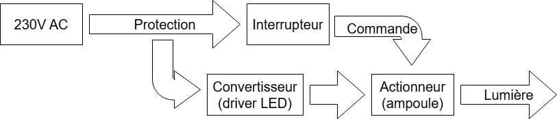
- Si l’ampoule est à filament, on n’a pas de convertisseur : 230 V → ampoule → lumière
- Si c’est une LED, le driver convertit 230 V AC en courant continu adapté à la LED
-
Vue d’ensemble (chaînes)
- Chaîne d’énergie : Réseau 230 V → (protection) → convertisseur (si LED : driver / si ampoule à filament : rien) → actionneur (ampoule) → lumière
- Chaîne d’information : Utilisateur → interface (interrupteur) → commande (O/I) → actionneur (allume/éteint)
-
Étapes (simples et concrètes)
- Source d’énergie : le réseau 230 V arrive par la prise.
- Protection (souvent intégrée) : fusible/isolement, évite les dangers.
- Interface utilisateur : l’interrupteur (O/I) envoie l’ordre.
- Commande : l’ordre ouvre/ferme le circuit d’énergie.
- Conversion (si LED) : le driver transforme l’AC en DC stable.
- Actionneur : l’ampoule convertit l’énergie électrique en lumière.
- Sortie : la lumière éclaire le milieu.
| Fonction | Élément réel |
| Source d’énergie | Prise secteur 230 V |
| Protection | Corps isolant, fusible (parfois) |
| Interface | Interrupteur à bascule ou à cordelette |
| Commande | Fermeture/ouverture de circuit |
| Convertisseur | Driver LED (si ampoule LED) |
| Actionneur | Ampoule (LED, filament, fluocompacte) |
| Sortie | Lumière émise |
3. Activité sur ordinateur
-
Créez un document numérique (LibreOffice Writer) nommé : 5e_S12_G1.odt (pour le groupe 1, par exemple)
- Copiez l'image du schéma fonctionnel sur votre ordinateur
- Trouvez des images pour chaque élément de la lampe de bureau
- Editez le schéma avec paint pour mettre l'image de chaque élément sur votre schéma fonctionnel
- Enregistrez votre schéma sur l'ordianteur
- Dans votre document LibreOffice Writer, coller le schéma que vous venez d'éditer
- Ecrivez 4 / 5 lignes d'explication
- Enregistrez et déposez votre document, correctement nommé, dans l’espace d’échange.
Séance 13 – La chaîne d’énergie d’une lampe connectée
Thème : Structure, fonctionnement, comportement d’un objet technique
Compétence visée : Identifier les transformations d’énergie et les éléments de la chaîne d’énergie
Objectifs d’apprentissage-
Ce que les élèves vont apprendre (connaissances) :
- repérer les étapes de la chaîne d’énergie dans une lampe
- reconnaître les éléments : source, transformation, distribution, action
- comprendre le rôle de chaque élément
-
Ce qu’ils vont apprendre à faire (capacités) :
- une recherche en ligne sur la lampe connectée
- compléter un schéma numérique de la chaîne d’énergie
- créer un document clair à rendre à la fin du cours
1. Introduction
Pour qu’un objet fonctionne, il doit recevoir de l’énergie, la transformer, puis l'utiliser pour agir.
Une lampe connectée, par exemple, transforme l’énergie électrique en lumière.
Comprendre cette chaîne d’énergie aide les élèves à voir comment circule l’énergie dans tout objet technique.
2. Recherche sur internet
-
Créez un document numérique (LibreOffice Writer) nommé : 5e_S13_G1.odt (pour le groupe 1, par exemple)
- Trouvez une image claire d'une lampe connectée et observez ses composants
- Insérez l'image que vous avez trouvé, dans le document Writer
3. Qu’est-ce que la chaîne d’énergie ?
La chaîne d’énergie décrit le chemin que suit l’énergie à l’intérieur d’un objet technique, depuis sa source jusqu’à l’action finale.
Elle sert à comprendre comment un objet fonctionne grâce à l’énergie qu’il reçoit.
-
On y trouve quatre grandes étapes (toujours dans le même ordre) :
- Source d’énergie → d’où vient l’énergie (pile, batterie, prise, vent, soleil…)
- Transformation → l’énergie change de forme (ex. électrique → lumineuse)
- Distribution → l’énergie circule vers les bonnes parties (fils, interrupteurs, circuits)
- Action → l’objet agit (éclaire, chauffe, bouge…)
En résumé :
La chaîne d’énergie montre comment l’énergie entre, circule, se transforme et sort d’un objet pour lui permettre de fonctionner.
4. Compléter le tableau
Reprenez votre document Writer, copiez et complétez le tableau suivant en vous aidant de l’image de la lampe connectée que vous avez trouvée.
| Étape de la chaîne d’énergie | Nom de la partie du système | Type d’énergie (électrique/lumineuse) | Rôle |
| Source d’énergie | Prise électrique ou batterie rechargeable | ||
| Transformation | Carte électronique + LED | ||
| Distribution | Câbles, interrupteur, circuit de commande | ||
| Action | Ampoule / LED |
-
Toujours dans votre document Writer :
- Décrire, en quelques mots, le fonctionnement global de la lampe connectée (entrée -> transformation -> sortie).
- Enregistrez et déposez votre document, correctement nommé, dans l’espace d’échange.
Séance 14 : Chaîne d’information : capteurs et commande
Thème : Structure, fonctionnement et comportement d’un objet technique
Compétence visée : Identifier les capteurs, les informations qu’ils recueillent et comprendre comment une commande agit sur un système
Objectifs d’apprentissage-
Ce que les élèves vont apprendre (connaissances) :
- comprendre le rôle d’un capteur et d’un actionneur dans un objet
- identifier les étapes de la chaîne d’information (acquérir → traiter → communiquer)
- faire un test simple sur micro:bit pour observer une information et une réaction
-
Ce qu’ils vont apprendre à faire (capacités) :
- utiliser le capteur de lumière intégré au micro:bit
- programmer une réaction automatique (LED qui s’allume quand il fait sombre)
- créer un petit document illustré avec le schéma de la chaîne d’information et une capture de code
1. Introduction
Pour qu’un objet “intelligent” fonctionne (comme une lampe qui s’allume automatiquement quand il fait sombre ou quand on bouge), il faut qu’il perçoive une information grâce à un capteur, qu’il traite cette information, puis qu’il agisse via une commande.
Cette séance te fera découvrir comment une lampe connectée “comprend” son environnement à l’aide de capteurs simples.
2. Qu’est-ce qu’une chaîne d’information ?
Une chaîne d’information décrit comment un objet technique “intelligent” reçoit, traite et transmet des informations pour fonctionner.
C’est un ensemble d’étapes logiques qui permettent à l’objet de réagir à ce qu’il perçoit.
-
En version simple ça donne :
- Le capteur perçoit
- le programme décide
- l’actionneur agit
| Étape | Rôle | Exemple dans la lampe connectée |
| 1. Acquérir l’information | Le capteur mesure une donnée (lumière, température, mouvement, etc.). | Le capteur de lumière détecte s’il fait sombre. |
| 2. Traiter l’information | Le programme (microcontrôleur) analyse la donnée et prend une décision. | Le micro:bit compare la valeur mesurée avec un seuil (ex. < 100). |
| 3. Communiquer / agir | L’objet envoie un ordre ou déclenche une action. | Il allume la LED si la pièce est sombre. |
-
Dans un robinet automatique :
- Capteur → détecte les mains
- Programme → décide d’ouvrir
- Actionneur → ouvre l’électrovanne pour laisser passer l’eau
-
Dans un ascenseur :
- Capteur → bouton d’appel
- Programme → décide d’arrêter l’ascenseur à ton étage
- Actionneur → moteur et porte s’activent
La chaîne d’information sert à faire le lien entre le monde réel et le fonctionnement automatique d’un objet technique.
Elle fonctionne toujours en trois étapes : acquérir → traiter → communiquer/agir.
3. Découverte sur ordinateur
- Ouvrir makecode.microbit.org
- créez un nouveau projet “Lampe automatique” Nous allons créer un programme qui allume une LED quand il fait sombre
- Enlevez le bloc "au démarrage" et gardez "toujours"
- Dans "logique", sélectionnez le bloc "si ... alors sinon"
- Glissez le dans le bloc "toujours"
- Toujours dans "logique", sélectionnez dans l'onglet comparaison, le signe "<"
- Remplacer le "Vrai" de votre "Si ... Alors Sinon" par le bloc de comparaison "<" La carte Micro:Bit utilise les led comme capteur de lumière
- Dans "entrée", sélectionnez "niveau d'intensité lumineuse"
- Glissez "niveau d'intensité lumineuse" dans la partie gauche du signe "<"
- Modifier la partie droite avec la valeur 100
- Dans l'onglet "base", sélectionnez "montrer LEDs" et glissez le dans la partie "SI" de votre "Si ... Alors Sinon"
- Mettez toutes les cases de "montrer LEDs" en blanc (cas ou les LEDs sont allumées)
- Dans l'onglet "base", sélectionnez "montrer LEDs" et glissez le dans la partie "SINON" de votre "Si ... Alors Sinon"
- Ne mettez pas les cases en blanc (cas ou les LEDs sont éteintes)
- Branchez votre carte Micro:Bit à l'ordinateur via le cable USB
- En bas a gauche de votre écran, cliquez sur "Télécharger" pour envoyer le programme à la carte Micro:Bit
- Attendez la fin du transfert
- Cachez les LEDs de votre carte Micro:Bit et observez le résultat
- Si les LEDs sont allumées en permanence, prenez le flash de votre téléphone et allumez le en direction des LEDs
4. Activité guidée
-
Créez un document numérique (LibreOffice Writer) nommé : 5e_S14_G1.odt (pour le groupe 1, par exemple)
- Prenez un screen de votre code et insérez le dans votre document Writer
- Copiez le tableau suivant dans votre document
- Remplir le tableau avec les éléments suivant :
- programme
- LEDs
- capteur de lumière
| Capteur | Traitement | Actionneur |
- Enregistrez et déposez votre document, correctement nommé, dans l’espace d’échange.
Séance 15 : Programmer une lampe automatique (détection de mouvement)
Thème : Structure, fonctionnement et comportement d’un objet technique
Compétence visée : Programmer le comportement d’un objet technique
Objectifs d’apprentissage-
Ce que les élèves vont apprendre (connaissances) :
- Le rôle du capteur (détecter un événement)
- Le rôle du microcontrôleur (traiter une information)
- Le rôle de l’actionneur (réaliser une action)
-
Ce qu’ils vont apprendre à faire (capacités) :
- Connecter un capteur de mouvement et une LED au micro:bit
- Créer un programme simple : si mouvement → allumer lampe
- Tester et corriger un programme
1. Introduction
Nous avons vu comment une lampe fonctionne, ses composants, sa chaîne d’énergie, sa chaine d'information.
Aujourd’hui, on va donner un comportement intelligent à une lampe : elle s’allumera toute seule quand elle détecte un mouvement.
Ce type de lampe existe déjà dans les maisons, les écoles, les parkings : c’est une économie d’énergie et un confort d’usage.
Les élèves vont donc approfondir le lien entre capteur, programme et actionneur — les trois éléments d’une chaîne d’information.
2. Observation guidée
Lampe automatique- Comment sait-elle qu’il y a quelqu’un ?
- Quel composant permet de détecter le mouvement ?
- Que fait la lampe quand elle détecte un mouvement ?
3. Activité pratique
- Vous allez reprendre le code de la dernière séance
- Avant de modifier le code, posez-vous les bonnes question :
- Comment ça fonctionne ?
- Pourquoi la lumière s'allume ?
- Pourquoi la lumière ne s'allume pas ?
- etc...
- Modifiez le code pour simuler une lampe automatique
- Créez un document Writer nommé : 5e_S15_G1.odt (pour le groupe 1, par exemple)
- Faites un screen de votre code et insérez le dans le document Writer
- Expliquez chaque ligne, chaque bloc de votre code (par exemple : "montrer LEDs" avec toutes les LEDs en blanc allume les LEDs de la carte Micro:Bit)
- Modifier à nouveau votre code, afin d'afficher ce que vous voulez, au lieu d'allumer toutes les LEDs.
- Faites un nouveau screen de votre code
- Insérez le dans votre document Writer
- Enregistrez et déposez votre document, correctement nommé, dans l’espace d’échange.
Séance 16 : Les objets connectés autour de nous
Thème : Structure, fonctionnement et comportement d’un objet technique
Compétence visée : Identifier les échanges d’énergie et d’informations dans un objet connecté
Objectifs d’apprentissage-
Ce que les élèves vont apprendre (connaissances) :
- reconnaître ce qu’est un objet connecté
- identifier ce qu’il fait et comment il communique
- comparer plusieurs objets connectés selon leur utilité
-
Ce qu’ils vont apprendre à faire (capacités) :
- chercher des informations fiables sur Internet
- construire un mini-diaporama clair (3 diapositives)
- présenter un exemple d’objet connecté de manière simple
1. Introduction
Cette séance permet de souffler un peu tout en ouvrant les horizons : on va explorer les objets connectés du quotidien, comprendre comment ils communiquent et à quoi ils servent.
L’activité repose sur la recherche, la découverte et la présentation, sans programmation ni câblage.
Quels objets connectés connaissez-vous ?
2. Choix de l’objet
Chaque binôme choisit un objet.
3. Recherche et création du diaporama
- Créez un document Présentation nommé : 5e_S16_G1.odp (pour le groupe 1, par exemple)
- Recherche des images libres de votre objet
- Diapo 1 : Nom de l’objet + photo + usage principal
- Diapo 2 : Quels sont ses capteurs et actionneurs ?
- Diapo 3 : Comment l’objet communique (Bluetooth, Wi-Fi…) et quel est son intérêt ? (Tu peux t’aider du site du fabricant, ou d’articles courts.)
- Faire une mise en forme claire
- Enregistrez et déposez votre document, correctement nommé, dans l’espace d’échange.
Séance 17 : Dépanner une lampe : diagnostic d’un dysfonctionnement
Thème : Structure, fonctionnement et comportement d’un objet technique
Compétence visée : Identifier un dysfonctionnement et en rechercher la cause
Objectifs d’apprentissage-
Ce que les élèves vont apprendre (connaissances) :
- Identifier un dysfonctionnement dans un objet technique
- Chercher les causes possibles d’une panne
- Proposer une solution simple ou un constat logique
-
Ce qu’ils vont apprendre à faire (capacités) :
- Observer et décrire le comportement d’un objet en panne
- Suivre une démarche de diagnostic (observer → vérifier → conclure)
- Compléter une fiche de diagnostic numérique à rendre
1. Introduction
Dans la vie courante, un objet peut tomber en panne : il ne fonctionne plus, ou pas comme prévu.
Avant de le réparer ou de le remplacer, il faut comprendre pourquoi il ne marche plus.
Cette séance apprend aux élèves à observer, raisonner et diagnostiquer une panne simple, comme celle d’une lampe.
2. Observation
Vidéo Youtube : Comment réparer une lampe de chevet ?Vidéo de la chaine Electrotoile
Décrire le comportement de la lampe en panne.
3. Activité guidée sur ordinateur
-
Créez un document (LibreOffice Writer) nommé : 5e_S17_G1.odt (pour le groupe 1, par exemple)
- Décrire le problème observé dans la vidéo
- Lister les causes possibles du dysfonctionnement via le tableau suivant en le recopiant sur votre document
- Proposer des vérifications ou tests pour chaque cause
- Conclure sur la cause la plus probable et une solution simple
- Enregistrez et déposez votre document, correctement nommé, dans l’espace d’échange.
| Élément à vérifier | Hypothèse | Résultat de la vérification | Conclusion partielle |
| Source d’énergie (prise, pile) | |||
| Câble et interrupteur | |||
| Ampoule / LED |
Séance 18 : Mini-Projet : créer une mini-lampe de bureau commandée
Thème : Structure, fonctionnement et comportement d’un objet technique
Compétence visée : Concevoir et réaliser une solution technique simple répondant à un besoin
Objectifs d’apprentissage-
Ce que les élèves vont apprendre (connaissances) :
- comprendre le rôle d’un capteur (entrée) et d’un actionneur (sortie)
- programmer une commande de lampe (bouton ou détection de lumière)
- organiser une chaîne d’information simple
-
Ce qu’ils vont apprendre à faire (capacités) :
- un petit programme micro:bit
- réaliser un circuit simple de commande de LED
- enregistrer et présenter ma solution technique sous forme de fiche
1. Introduction
Les élèves ont déjà compris comment fonctionne une lampe et comment l’énergie circule.
Aujourd’hui, ils vont passer à l’action : concevoir et programmer une mini-lampe de bureau contrôlée par un bouton ou un capteur.
Ce projet simple leur permet de relier concrètement l’énergie, l’information et le fonctionnement d’un objet technique — tout en découvrant la logique de commande automatique.
Rappel : qu’est-ce qu’un capteur ? un actionneur ?
Présentation du défi : “Créer une lampe qui s’allume quand on appuie sur un bouton.”
2. Mise en situation / Schéma
-
Allez sur le site suivant :
- Diagrams.net
- Faites un mini schéma avec : entrée (bouton) -> traitement (micro:bit) -> sortie (LEDs)
- Enregistrez votre schéma au format PNG
- Créez un document Writer nommé : 5e_S18_G1.odt (pour le groupe 1, par exemple)
- Insérez votre schéma dans le document Writer
3. Programmation sur MakeCode
-
Allez sur le site suivant :
- makecode.microbit.org
- Créez un nouveau projet “Mini-lampe de bureau”
- Programmez la carte micro:bit pour allumer les LEDs quand on appuie sur le bouton A
- Programmez la carte micro:bit pour éteindre les LEDs quand on appuie sur le bouton B
- Prenez un screen du code
- Insérez le screen dans le document Writer
- Enregistrez et déposez votre document, correctement nommé, dans l’espace d’échange.
4. Réalisation physique (si possible)
- Par groupe de 6 / 8 personnes (moins pour ceux qui ont finis en avance), prenez un kit
- Recherchez dans la documentation, le branchement d'une LED et son allumage via micro:bit
- Réalisez le montage sur la breadboard
- Testez votre programme sur la carte micro:bit
- Branchez la carte micro:bit dans la breadboard
- Testez le montage
Séance 19 : Mini-projet : créer un objet connecté avec micro:bit
Thème : Structure, fonctionnement et comportement d’un objet technique
Compétence visée : Concevoir et réaliser une solution technique répondant à un besoin
Objectifs d’apprentissage-
Ce que les élèves vont apprendre (connaissances) :
- à relier capteur, traitement, actionneur dans un montage simple
- à programmer un comportement utile avec micro:bit
- à tester et valider un prototype fonctionnel
-
Ce qu’ils vont apprendre à faire (capacités) :
- un montage simple avec les composants du kit
- un programme MakeCode répondant à un besoin concret (ex. s’allumer, mesurer, avertir, etc.)
- à tester et corriger mon programme
1. Introduction
Tout au long du thème 2, les élèves ont vu comment une lampe connectée reçoit une information (capteur), la traite (programme), et agit sur un actionneur (LED).
Cette séance leur permet de réaliser eux-mêmes un petit objet utile sur le même principe, en utilisant la carte micro:bit.
Ils deviennent donc les “concepteurs” d’un objet technique.
2. Choix du projet + explication du montage
-
Chaque binôme choisit un mini-projet à réaliser parmi les propositions suivantes :
- Lampe automatique -> la lampe s'alume quand une autre carte micro:bit lui commande de s'allumer
- Thermomètre d'ambiance -> affiche une icone chaud / froid selon la température ambiante
- Alarme de mouvement -> affiche un message si on le bouge
- Message secret -> affiche un message quand on appuie sur A ou B
- Dé -> affiche un nombre aléatoire entre 1 et 6 quand on le secoue
- Dé graphique -> affiche une face de dé lorsqu'on le secoue
- Boule magique (8-ball) -> vous posez une question, vous secouez le micro:bit, la carte doit afficher un ✅ si la réponse est oui ou un ❌ si la réponse est non
- Boussole -> transformer votre micro:bit en boussole
- Niveau -> la carte affiche ✅ si elle est posé à plat, ❌ sinon
- Sonomètre -> affiche le niveau sonore d'ambiance
- Minuteur -> appuyez sur le bouton A pour ajouter 1 minutes, B pour enlever 1 minute, touchez le logo pour lancer le minuteur, à la fin du compte a rebours, joue un son pendant 2 secondes
- Chronomètre -> appuyez sur le bouton A pour lancer le chronomètre, B pour l'arrêter, le logo pour remettre à 0
-
Une fois que vous avez choisi votre projet :
- Créez un document (LibreOffice Writer) nommé : 5e_S19_G1.odt (pour le groupe 1, par exemple) Sur le site : Diagrams.net
- Réalisez le schéma fonctionnel
- Faites un screen et insérez le dans votre document Writer avec le titre "Schéma fonctionnel"
- Réalisez le schéma de la chaine d'énergie
- Faites un screen et insérez le dans votre document Writer avec le titre "Schéma chaine d'énergie"
- Réalisez le schéma de la chaine d'information
- Faites un screen et insérez le dans votre document Writer avec le titre "Schéma chaine d'information"
3. Réalisation pratique
-
Depuis le site : Makecode
- Codez votre projet
- Effectuez tous les tests qu'il faudra jusqu'à ce que votre projet fonctionne correctement
- Prenez un screen du code
- Insérez le screen dans le document Writer avec le titre "Code Makecode"
- Vous pouvez prendre des screens du simulateur pour prouver le bon fonctionnement de votre code
- Enregistrez et déposez votre document, correctement nommé, dans l’espace d’échange.
Séance 22 : Introduction à la démarche de projet (porte-clé connecté)
Thème : Création, conception, réalisation, innovations
Compétence visée : Comprendre et appliquer une démarche de projet technique / Identifier un besoin, une fonction, des contraintes
Objectifs d’apprentissage-
Ce que les élèves vont apprendre (connaissances) :
- Ce qu’est une démarche de projet technique
- Les grandes étapes d’un projet (du besoin à la réalisation)
- Le rôle du cahier des charges
-
Ce qu’ils vont apprendre à faire (capacités) :
- Lire et comprendre une démarche de projet
- Associer chaque étape à son objectif
- Présenter ces étapes dans un document numérique structuré
Pourquoi ce cours
Jusqu’à présent, les élèves ont surtout analysé des objets existants.À partir de maintenant, ils vont concevoir et réaliser leur propre objet technique.
Avant de fabriquer ou programmer quoi que ce soit, il est indispensable de :
- comprendre ce qu’est une démarche de projet,
- savoir dans quel ordre on travaille,
- et pourquoi on ne commence jamais par la fabrication.
Mise en situation (5 min)
Si je vous demande de fabriquer un porte-clé connecté maintenant, que faites-vous en premier ?
Découverte de la démarche de projet (10 min)
-
Les étapes classiques :
- Identifier le besoin
- Définir les fonctions
- Rédiger le cahier des charges
- Imaginer des solutions
- Concevoir (dessin / 3D)
- Réaliser et programmer
- Tester et améliorer
| Étape | Définition |
| Identifier le besoin |
C’est la première étape du projet.
On cherche à comprendre à quoi va servir l’objet et pourquoi il est utile. Exemple : avoir un porte-clé qui donne une information à son utilisateur. |
| Définir les fonctions |
On précise ce que l’objet doit faire pour répondre au besoin.
Ces actions sont appelées fonctions. Exemple : s’allumer, afficher un message, émettre un signal. |
| Rédiger le cahier des charges |
On écrit les règles à respecter pour fabriquer l’objet.
On y trouve les fonctions attendues et les contraintes (taille, solidité, coût, sécurité…). Le cahier des charges sert de guide tout au long du projet. |
| Imaginer des solutions |
On réfléchit à plusieurs idées possibles pour répondre au cahier des charges.
On peut faire des croquis, des schémas ou discuter des différentes solutions. On ne fabrique pas encore. |
| Concevoir la solution |
On choisit la meilleure solution et on la représente précisément.
Cela peut être un dessin, un schéma ou une modélisation 3D sur ordinateur. L’objet commence à prendre forme, mais il n’est pas encore fabriqué. |
| Réaliser et programmer |
On fabrique l’objet et on programme son fonctionnement si nécessaire.
Exemple : impression 3D du porte-clé et programmation du micro:bit. |
| Tester et améliorer |
On vérifie si l’objet fonctionne comme prévu.
Si ce n’est pas le cas, on corrige et améliore la solution. Un projet n’est jamais parfait du premier coup. |
Pour résumer : La démarche de projet est une suite d’étapes qui permet de concevoir et réaliser un objet technique de façon organisée, en partant d’un besoin jusqu’aux tests du produit final.
Création du document (20 min)
- Créer un document LibreOffice Writer.
- Nommez le "5e_S22_nom1_nom2" (pas de prénom)
-
Ouvrez le document et y mettre OBLIGATOIREMENT les informations suivantes:
- Séance 22 : Introduction à la démarche de projet (porte-clé connecté)
- Nom et prénom des membres du groupe
- Seulement après avoir fait cela, vous pouvez continuer.
- Explique avec tes mots ce qu’est une démarche de projet technique (3 à 4 lignes maximum)
- Copier et remplir le tableau suivant:
| Étape | Ce que l’on fait |
| Besoin | |
| Cahier des charges | |
| Conception | |
| Réalisation | |
| Tests |
Application au porte-clé connecté (10 min)
-
Nouvelle partie dans le document :
- Titre : Application au porte-clé connecté
-
Questions à compléter :
- Quel besoin pourrait satisfaire un porte-clé connecté ?
- Cite une fonction possible (ex : informer, signaler, alerter).
- Cite deux contraintes possibles (ex : taille, solidité, autonomie).
- Enregistrer votre document dans l'espace d'échange
Séance 23 : Cahier des charges : besoins et contraintes
Thème : Création, conception, réalisation, innovations
Compétence visée : Définir un besoin et formaliser des contraintes
Objectifs d’apprentissage-
Ce que les élèves vont apprendre (connaissances) :
- Ce qu’est un cahier des charges.
- La différence entre un besoin et une contrainte.
-
Les principaux types de contraintes :
- dimensionnelles
- techniques
- esthétiques
- d’usage
- de sécurité
-
Ce qu’ils vont apprendre à faire (capacités) :
- Analyser un besoin lié à un objet technique.
- Lister des contraintes réalistes.
- Rédiger un cahier des charges simple sous forme de tableau.
- Produire un document numérique structuré à rendre.
Pourquoi ce cours
Avant de concevoir ou fabriquer un objet technique, il est indispensable de savoir précisément ce que l’on veut réaliser.Le cahier des charges sert à définir :
- le besoin auquel l’objet doit répondre ;
- les contraintes que l’objet doit respecter (taille, solidité, sécurité, coût, esthétique…).
Introduction et vocabulaire (10 min)
- Besoin :
- Contrainte :
Présentation du projet support (5 min)
Nous allons concevoir un porte-clé connecté qui intègre un micro:bit et qui sera fabriqué plus tard.
Aujourd’hui, nous allons définir ce qu’il doit faire et ce qu’il doit respecter.
Création du document numérique (5 min)
- Créer un document LibreOffice Writer.
- Nommez le "5e_S23_nom1_nom2" (pas de prénom)
-
Ouvrez le document et y mettre OBLIGATOIREMENT les informations suivantes:
- Séance 23 : Cahier des charges : besoins et contraintes
- Nom et prénom des membres du groupe
- Seulement après avoir fait cela, vous pouvez continuer.
Rédaction du besoin (10 min)
Écrire un court paragraphe répondant à la question : À quoi doit servir le porte-clé connecté ?
-
Pour vous aider:
- À qui est destiné l’objet ?
- Que doit-il permettre de faire ?
- Dans quelle situation sera-t-il utilisé ? 3 à 4 phrases maximum, simples et compréhensibles.
Tableau des contraintes (15 min)
Copier et compléter le tableau suivant:| Type de contrainte | Description |
| Dimensionnelle | |
| Technique | |
| Sécurité | |
| Esthétique | |
| Usage |
Séance 24 : Prise en main de Tinkercad
Thème : Création, conception, réalisation, innovations
Compétence visée : Concevoir une solution technique (modélisation numérique)
Objectifs d’apprentissage-
Ce que les élèves vont apprendre (connaissances) :
- À quoi sert la modélisation 3D dans un projet technique.
- Les zones principales de Tinkercad : plan de travail, formes, vue, outils.
- Les actions indispensables : déplacer / tourner / redimensionner, aligner, group(=grouper), hole (= trou).
-
Ce qu’ils vont apprendre à faire (capacités) :
- Se connecter à Tinkercad et créer un projet.
- Réaliser une pièce 3D simple et propre (une “plaque porte-clé”).
- Exporter une capture d’écran et déposer un document de rendu sur l'espace d'échange.
Pourquoi ce cours
Pour pouvoir concevoir l’objet du projet (une coque/support pour micro:bit), les élèves doivent d’abord savoir se repérer dans Tinkercad et maîtriser les actions de base : placer, dimensionner, aligner, regrouper.Création du document numérique (5 min)
- Créer un document LibreOffice Writer.
- Nommez le "5e_S24_nom1_nom2" (pas de prénom)
-
Ouvrez le document et y mettre OBLIGATOIREMENT les informations suivantes:
- Séance 24 : Prise en main de Tinkercad
- Nom et prénom des membres du groupe
- Seulement après avoir fait cela, vous pouvez continuer.
- Pour ceux qui sont par 2, faire un exercice chacun votre tour, en expliquant ce que vous faites et comment vous le faites.
- A la fin de chaque exercice, faire un screen et le coller dans le document, avec le titre du tuto fait.
Tinkercad
Allez ici: Tinkercad
Vous allez avoir un code pour pouvoir entrer dans la classe.
Faire les tutos listés en mettant un screen de chaque tuto finis, dans le document du cours
Séance 25 : Créer la base du porte-clé en 3D
Thème : Création, conception, réalisation, innovations
Compétence visée : Imaginer, concevoir et réaliser un objet technique simple et Utiliser un outil numérique de conception (modélisation 3D)
Objectifs d’apprentissage-
Ce que les élèves vont apprendre (connaissances) :
- Ce qu’est une base d’objet en modélisation 3D
- Notions simples de dimensions (longueur, largeur, épaisseur)
- Notion de forme adaptée à un usage (porte-clé)
-
Ce qu’ils vont apprendre à faire (capacités) :
- Utiliser les formes de base d’un logiciel de modélisation 3D
- Modifier les dimensions d’un objet
- Créer un premier modèle 3D simple et propre
- Enregistrer et rendre un fichier numérique
Pourquoi ce cours
Avant de fabriquer ou d’imprimer un objet, il faut d’abord le concevoir numériquement.
Ce cours permet aux élèves de passer de l’idée à une forme concrète en 3D, en créant la base du porte-clé qui servira de support à l’objet final.
C’est une étape essentielle de la démarche de projet.
Rappel et mise en contexte
Nous allons créer la base du porte-clé connecté en 3D, en utilisant Tinkercad.
Cette base doit être adaptée pour accueillir un micro:bit et permettre d’accrocher des clés.
Nous allons utiliser les compétences apprises lors de la séance précédente pour réaliser cette pièce.
Création du document numérique
- Créer un document LibreOffice Writer.
- Nommez le "5e_S25_nom1_nom2" (pas de prénom)
-
Ouvrez le document et y mettre OBLIGATOIREMENT les informations suivantes:
- Séance 25 : Créer la base du porte-clé en 3D
- Nom et prénom des membres du groupe
- Seulement après avoir fait cela, vous pouvez continuer.
Création de la forme de base
-
Étapes à suivre dans l’ordre :
- Glisser une forme pleine (carré, rectangle, cylindre, ou n'importe quel forme que vous souhaitez, aplati) sur le plan de travail
- Modifier les dimensions : régler longueur, largeur et hauteur
- Vérifier que l’objet est : bien posé sur le plan, ni trop fin, ni trop épais
- Ajuster la forme si nécessaire (coins, proportions)
- A la fin de votre conception, faites un screen de votre modélisation
- Mettre le screen dans le document Writer et le sauvegarder dans le répertoire
- Sauvegardez votre modélisation (même nom que le document Writer) sous format .OBJ dans le même répertoire
Séance 26 : Ajouter un logement pour composant électronique
Thème : Création, conception, réalisation, innovations
Compétence visée : Adapter une conception à une contrainte technique (intégrer un composant)
Objectifs d’apprentissage-
Ce que les élèves vont apprendre (connaissances) :
- Un objet technique se conçoit avec des contraintes (dimensions, épaisseur, accessibilité).
- Notion de logement : une cavité prévue pour placer une pièce.
- Notion de jeu : on prévoit un petit espace en plus pour que ça rentre (ex. +0,5 mm à +1 mm).
-
Ce qu’ils vont apprendre à faire (capacités) :
- Lire une dimension (largeur, longueur, épaisseur) d’un composant (donnée ou fiche).
- Ajouter un logement dans une pièce 3D (cavité, épaisseur de paroi).
- Vérifier que la pièce reste solide (épaisseur minimale).
- Produire un fichier 3D propre + captures d’écran dans un document.
Pourquoi ce cours
Jusqu’ici, les élèves savent modéliser une forme “jolie”. Maintenant, on passe au vrai geste techno : concevoir pour intégrer une fonction.
Un objet technique doit accueillir des éléments réels (carte, pile, bouton, trou de passage…). Donc on apprend à ajouter un logement adapté à un composant électronique, avec des dimensions et des contraintes.
Lancement
Aujourd’hui on ne fait pas ‘joli’, on fait ‘utile’ : on doit prévoir la place du composant.
Objectif : logement + parois solides + accès.
Création du document numérique
- Créer un document LibreOffice Writer.
- Nommez le "5e_S26_nom1_nom2" (pas de prénom)
-
Ouvrez le document et y mettre OBLIGATOIREMENT les informations suivantes:
- Séance 26 : Ajouter un logement pour composant électronique
- Nom et prénom des membres du groupe
- Seulement après avoir fait cela, vous pouvez continuer.
Ouvrir le modèle existant
- ouvrir le porte-clé (base déjà faite) dans Tinkercad
- vérifier qu’il est bien à l’échelle (mm)
Récupérer les dimensions
- Sur votre document Writer, noter les dimensions de la carte micro:bit
- Ajouter un jeu conseillé d'1 mm (0.5 mm si vous êtes vraiment très à l'aise)
-
Exemple CR2032 (pile ronde que l'on trouve souvent dans les objets connectés) :
- diamètre = 20 mm → logement diamètre = 21 mm
- épaisseur = 3,2 mm → profondeur = 3,5 à 4 mm (au choix)
Créer la “forme trou” du logement
-
Étape A — ajouter une forme qui servira à creuser
- ajouter une forme carrée
- passer en mode trou
- essayez de faire des bords arrondis (plus esthétique) Étape B — régler ses dimensions
- mettre les bonnes valeurs pour le carrée (longeur et largeur)
- règler la hauteur Étape C — positionner
- placer la forme sur le porte-clé pour percer le trou
- utiliser "Aligner" pour mettre votre perçage au bon endroit
- utiliser "Fusionner" pour fusionner la forme avec le porte-clé Étape D — noter les modifications
- faire un screen de votre modélisation
- mettre le screen dans le document Writer et le sauvegarder dans le répertoire
- ajouter les différentes modifications effectuées sur la pièce (noter les différentes dimensions)
-
ajouter les 3 phrases suivantes à la fin du document :
- J'ai ajouté un logement pour la carte micro:bit avec les dimensions suivantes : ...
- J'ai prévu une épaisseur de paroi minimale de ... mm pour que le porte-clé soit solide.
- J'ai vérifié que le logement permettait un bon accès au composant.
- sauvegarder votre document
- sauvegarder votre modèle 3D en .OBJ au même endroit que votre document Writer, avec le nom du document
Séance 27 : Cotation simple et contraintes de fabrication
Thème : Création, conception, réalisation, innovations
Compétence visée : Prendre en compte des contraintes lors de la conception d’un objet technique
Objectifs d’apprentissage-
Ce que les élèves vont apprendre (connaissances) :
- Ce qu’est la cotation d’un objet technique.
- Ce qu’est une contrainte de fabrication.
- Pourquoi un objet doit avoir des dimensions précises pour être fabriqué.
-
Ce qu’ils vont apprendre à faire (capacités) :
- Mesurer et indiquer des dimensions simples sur un objet.
- Vérifier qu’un objet est compatible avec une fabrication (impression 3D).
- Modifier un modèle 3D pour respecter des contraintes réelles.
- Produire un document numérique clair expliquant leurs choix.
Pourquoi ce cours
Jusqu’ici, les élèves ont dessiné et modélisé un porte-clé en 3D.
Mais dessiner un objet ne suffit pas : pour pouvoir le fabriquer réellement, il faut indiquer ses dimensions et respecter des contraintes techniques (taille, épaisseur, solidité, compatibilité avec le micro:bit, impression 3D).
Cette séance sert donc à comprendre que la fabrication impose des règles, et que la conception doit s’y adapter.
Introduction guidée
Aujourd’hui, on ne va pas créer un nouvel objet.
On va vérifier si l’objet que vous avez conçu peut être fabriqué pour de vrai.
- Peut-on fabriquer un objet sans dimensions ?
- Peut-on imprimer un objet trop fin ou trop grand ?
Qu’est-ce que la cotation ?
- La cotation correspond aux dimensions d’un objet.
- Elle permet à quelqu’un d’autre de fabriquer exactement le même objet.
- Donnez des exemples de cotations venant de vos documents.
Création du document numérique
- Créer un document LibreOffice Writer.
- Nommez le "5e_S27_nom1_nom2" (pas de prénom)
-
Ouvrez le document et y mettre OBLIGATOIREMENT les informations suivantes:
- Séance 27 : Cotation simple et contraintes de fabrication
- Nom et prénom des membres du groupe
- Seulement après avoir fait cela, vous pouvez continuer.
Identifier les contraintes de fabrication
Complétez le tableau suivant:
| Contrainte | Pourquoi c’est important |
| Épaisseur minimale | |
| Taille maximale | |
| Trou du porte-clé | |
| Logement du micro:bit |
-
Puis répondre sur son document aux questions suivantes:
- Qu’est-ce que j’ai dû modifier sur mon objet ?
- Pourquoi ?
- Mettre un screen de votre objet avec les cotations dans votre document
- Sauvegarder votre document dans l'espace d'échange
- Sauvegarder votre objet en .OBJ dans l'espace d'échange avec le même nom que votre document Writer
Séance 29 : Modélisation du porte-clé en 3D : prise des mesures
Thème : Création, conception, réalisation, innovations technologiques
Compétence visée : Concevoir et représenter une solution technique (modélisation 3D)
Objectifs d’apprentissage-
Ce que les élèves vont apprendre (connaissances) :
- Une pièce 3D se construit à partir de formes simples (solides) qu’on dimensionne, positionne et assemble.
- En modélisation, on doit respecter des contraintes : dimensions, épaisseur, emboîtement, passage des câbles, stabilité.
- Un objet fabriqué (impression 3D) a besoin de règles simples : épaisseur minimale, trous, ajustements.
-
Ce qu’ils vont apprendre à faire (capacités) :
- Prendre des mesures précises pour modéliser un objet 3D.
- Noter les dimensions dans un document pour les retrouver facilement.
- Utiliser Tinkercad pour créer une pièce avec des cotes précises.
- Réaliser un assemblage simple (ajout / alignement / groupement).
Pourquoi ce cours
Vous avez apris à modéliser une forme en 3D, mais pour que votre objet puisse être fabriqué, il doit respecter des dimensions précises.
Aujourd’hui, vous allez prendre les mesures nécessaires pour modéliser la carte micro:bit et sa batterie, et vous allez les noter dans votre document pour pouvoir les utiliser lors de la modélisation. Puis vous commencerez la modélistation de la base de votre porte-clé en intégrant les dimensions de la carte et de la batterie.
Let's GO !!!!!
- Créer un document LibreOffice Writer.
- Nommez le "5e_S29_nom1_nom2" (pas de prénom)
-
Ouvrez le document et y mettre OBLIGATOIREMENT les informations suivantes:
- Séance 29 : Modélisation du porte-clé en 3D : prise des mesures
- Nom et prénom des membres du groupe
- Seulement après avoir fait cela, vous pouvez continuer.
- Prenez un pied à coulisse
- Mesurez les dimensions de la carte micro:bit (longueur, largeur, épaisseur) et de sa batterie (longueur, largeur, épaisseur), n'hésitez pas à mesurer plusieurs fois pour vérifier vos mesures, et n'hésitez pas à arrondir à la mesure supérieure la plus proche (ex: 26.7mm -> 27mm)
- Notez les dimensions dans un tableau, dans votre document
- Vous allez ensuite commencer par modéliser la batterie, en fonction des mesures que vous venez de prendre
- N'hésitez pas à vous rapprochez le plus possible du design réel de votre batterie (coin arrondis...), pas besoin de modéliser les fils et le connecteur.
- Allez sur Tinkercad
- Créez une nouvelle conception 3D
- Modélisez la batterie
- Prendre un screen de votre travail et le mettre dans votre document avec comme légende: "Micro:bit : batterie"
- Pour la carte, vous pouvez la retrouver en cliquant sur "Formes simples"
- Puis dans le menu "Électronique"
- Finalement, cliquez une fois sur le bouton "Plus de formes", vous retrouverez la carte micro:bit
- Ajoutez votre carte micro:bit dans votre projet Tinkercad
- N'hésitez pas à regrouper votre carte avec votre batterie en appuyant sur le bouton "Regroupe en lot", ou en utilisant le raccourci Ctrl+B (une fois que vos 2 objets sont sélectionnés)
- Prendre un screen de votre travail et le mettre dans votre document avec comme légende: "Carte Micro:bit"
- Déposer votre document dans le dossier partagé de votre classe (CDC/Ma Classe/Espace d'échange/Techno)
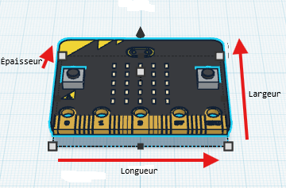
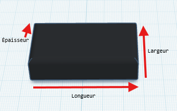
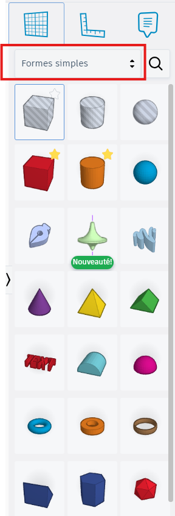


Exemple de modélisation de la batterie (vous n’êtes pas obligé de faire exactement la même chose, faites en fonction de vos connaissances et de votre créativité, l’essentiel est que les dimensions soient respectées) :
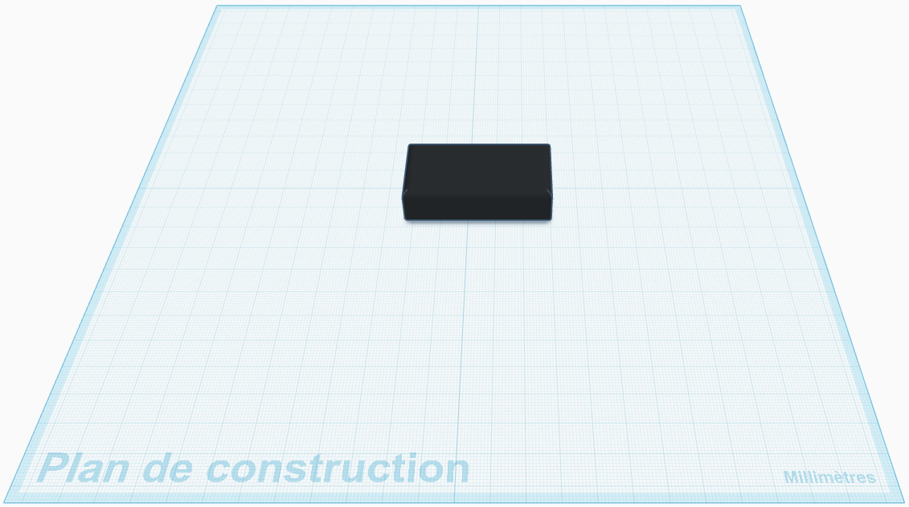
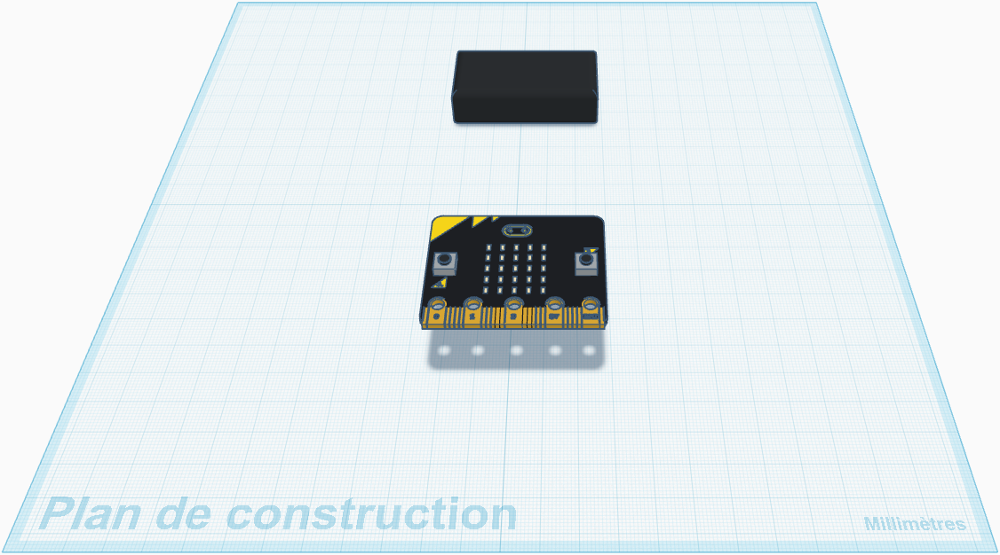
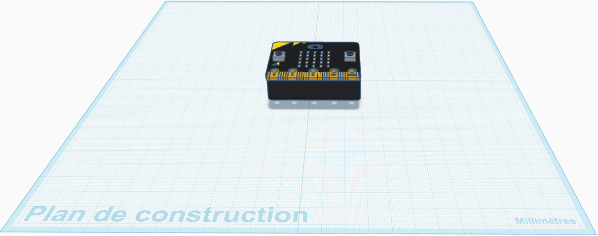
Séance 30 : Modélisation du porte-clé en 3D : la base 1/2
Thème : Création, conception, réalisation, innovations technologiques
Compétence visée : Concevoir et représenter une solution technique (modélisation 3D)
Objectifs d’apprentissage-
Ce que les élèves vont apprendre (connaissances) :
- Une pièce 3D se construit à partir de formes simples (solides) qu’on dimensionne, positionne et assemble.
- En modélisation, on doit respecter des contraintes : dimensions, épaisseur, emboîtement, passage des câbles, stabilité.
- Un objet fabriqué (impression 3D) a besoin de règles simples : épaisseur minimale, trous, ajustements.
-
Ce qu’ils vont apprendre à faire (capacités) :
- Prendre des mesures précises pour modéliser un objet 3D.
- Noter les dimensions dans un document pour les retrouver facilement.
- Utiliser Tinkercad pour créer une pièce avec des cotes précises.
- Réaliser un assemblage simple (ajout / alignement / groupement).
Pourquoi ce cours
Vous avez apris à modéliser une forme en 3D, mais pour que votre objet puisse être fabriqué, il doit respecter des dimensions précises.
Aujourd’hui, vous allez commencer (ou reprendre) la modélisation de la base de votre porte-clé en intégrant les dimensions de la carte et de la batterie que vous avez prises lors de la séance précédente.
Let's GO !!!!!
- Créer un document LibreOffice Writer.
- Nommez le "5e_S30_nom1_nom2" (pas de prénom)
-
Ouvrez le document et y mettre OBLIGATOIREMENT les informations suivantes:
- Séance 30 : Modélisation du porte-clé en 3D : la base
- Nom et prénom des membres du groupe
- Seulement après avoir fait cela, vous pouvez continuer.
- Allez sur Tinkercad
- Créez une nouvelle conception 3D
- Choisissez un modèle qui vous plait, ou modélisez un nouveau modèle, en respectant les dimensions de la carte et de la batterie.
- Pour cette première séance, concentrez-vous sur la forme de base et le respect des dimensions, les ajustements se feront lors des séances suivantes.
- Faites en sorte que votre carte micro:bit ainsi que la batterie, rentres bien dans votre porte-clé.
- N'hésitez pas à zoomer de très prés afin de vérifier que votre carte et votre batterie rentrent bien dans votre porte-clé (si votre carte ou votre batterie sont dans la matière qui fait votre porte-clé, il faut faire des ajustements).
- Prendre un screen de votre travail et le mettre dans votre document avec comme légende: "Porte-clé 3D: Base 1/2"
- Déposer votre document dans le dossier partagé de votre classe (CDC/Ma Classe/Espace d'échange/Techno)
Exemple de modélisation de mon porte-clé (vous n’êtes pas obligé de faire exactement la même chose, faites en fonction de vos connaissances et de votre créativité, l’essentiel est que les dimensions soient respectées) :
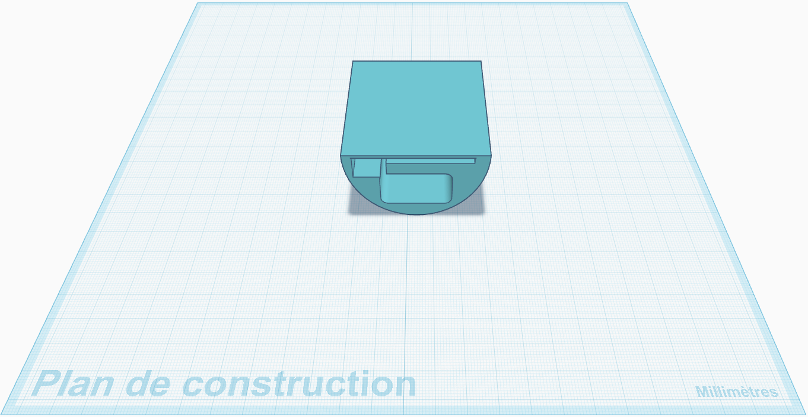
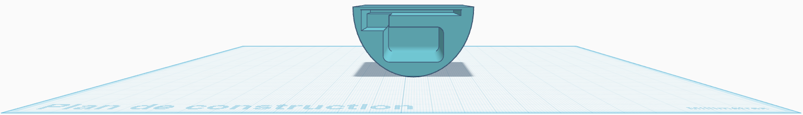
Séance 31 : Modélisation du porte-clé en 3D : la base 2/2
Thème : Création, conception, réalisation, innovations technologiques
Compétence visée : Concevoir et représenter une solution technique (modélisation 3D)
Objectifs d’apprentissage-
Ce que les élèves vont apprendre (connaissances) :
- Une pièce 3D se construit à partir de formes simples (solides) qu’on dimensionne, positionne et assemble.
- En modélisation, on doit respecter des contraintes : dimensions, épaisseur, emboîtement, passage des câbles, stabilité.
- Un objet fabriqué (impression 3D) a besoin de règles simples : épaisseur minimale, trous, ajustements.
-
Ce qu’ils vont apprendre à faire (capacités) :
- Prendre des mesures précises pour modéliser un objet 3D.
- Noter les dimensions dans un document pour les retrouver facilement.
- Utiliser Tinkercad pour créer une pièce avec des cotes précises.
- Réaliser un assemblage simple (ajout / alignement / groupement).
Pourquoi ce cours
Vous avez apris à modéliser une forme en 3D, mais pour que votre objet puisse être fabriqué, il doit respecter des dimensions précises.
Aujourd’hui, vous allez continuer la modélisation de la base de votre porte-clé en intégrant les dimensions de la carte et de la batterie que vous avez prises lors de la séance précédente, en ajoutant des détails et en ajustant a la forme pour de votre carte (boutons et affichage LED).
Let's GO !!!!!
- Créer un document LibreOffice Writer.
- Nommez le "5e_S31_nom1_nom2" (pas de prénom)
-
Ouvrez le document et y mettre OBLIGATOIREMENT les informations suivantes:
- Séance 31 : Modélisation du porte-clé en 3D : la base 2/2
- Nom et prénom des membres du groupe
- Seulement après avoir fait cela, vous pouvez continuer.
- Il va falloir penser aux ajustements afin de rendre la carte utilisable dans votre porte-clé (boutons et affichage LED).
- Pour les boutons, vous pouvez faire des trous ou des encoches pour pouvoir appuyer dessus, ou faire en sorte que les boutons soient à l’extérieur du porte-clé, à vous de voir.
- Pour l’affichage LED, vous pouvez faire une découpe pour que les LEDs soient visibles, ou faire en sorte que les LEDs soient à l’extérieur du porte-clé, à vous de voir.
- Prendre un screen de votre travail et le mettre dans votre document avec comme légende: "Porte-clé 3D: Base 2/2"
- Déposer votre document dans le dossier partagé de votre classe (CDC/Ma Classe/Espace d'échange/Techno)
Exemple de modélisation de mon porte-clé (vous n’êtes pas obligé de faire exactement la même chose, faites en fonction de vos connaissances et de votre créativité, l’essentiel est que les dimensions soient respectées) :
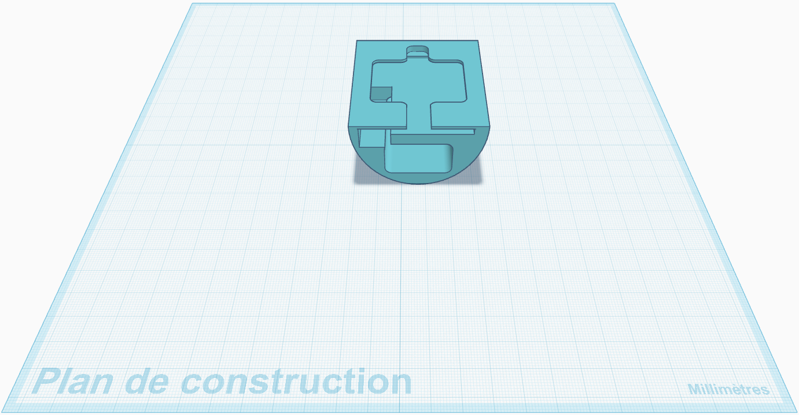
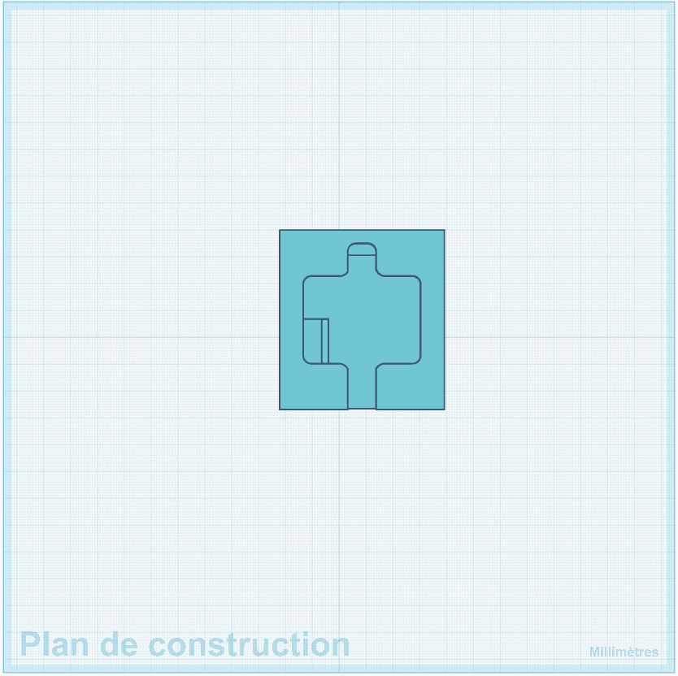
Séance 32 : Modélisation du porte-clé en 3D : la base, derniers ajustements et détails
Thème : Création, conception, réalisation, innovations technologiques
Compétence visée : Concevoir et représenter une solution technique (modélisation 3D)
Objectifs d’apprentissage-
Ce que les élèves vont apprendre (connaissances) :
- Une pièce 3D se construit à partir de formes simples (solides) qu’on dimensionne, positionne et assemble.
- En modélisation, on doit respecter des contraintes : dimensions, épaisseur, emboîtement, passage des câbles, stabilité.
- Un objet fabriqué (impression 3D) a besoin de règles simples : épaisseur minimale, trous, ajustements.
-
Ce qu’ils vont apprendre à faire (capacités) :
- Prendre des mesures précises pour modéliser un objet 3D.
- Noter les dimensions dans un document pour les retrouver facilement.
- Utiliser Tinkercad pour créer une pièce avec des cotes précises.
- Réaliser un assemblage simple (ajout / alignement / groupement).
Pourquoi ce cours
Vous avez apris à modéliser une forme en 3D, mais pour que votre objet puisse être fabriqué, il doit respecter des dimensions précises.
Aujourd’hui, vous allez continuer la modélisation de la base de votre porte-clé en intégrant directement votre carte micro:bit et votre batterie. Il faut que les boutons soient bien accessible, que les LEDs soient visibles, que les câbles puissent passer, et que votre porte-clé soit solide.
Let's GO !!!!!
- Créer un document LibreOffice Writer.
- Nommez le "5e_S32_nom1_nom2" (pas de prénom)
-
Ouvrez le document et y mettre OBLIGATOIREMENT les informations suivantes:
- Séance 32 : Modélisation du porte-clé en 3D : la base, derniers ajustements et détails
- Nom et prénom des membres du groupe
- Seulement après avoir fait cela, vous pouvez continuer.
- Allez sur Tinkercad
- Créez une nouvelle conception 3D
- Copiez / collez votre base 3D de la séance précédente, dans la conception d'aujourd'hui.
- Copiez / collez votre carte micro:bit et votre batterie dans la conception d'aujourd'hui.
-
Assemblez tout et vérifiez:
- Que votre batterie ne dépasse pas les limites de la base, ne touche pas (ou très peu) les bords de la base.
- Qu'il y a suffisament de place sur le connecteur de la carte, pour y brancher la batterie.
- Que votre carte ne dépasse pas les limites de la base, ne touche pas (ou très peu) les bords de la base.
- Que les boutons de la carte micro:bit sont accessibles, utilisable.
- Que les LEDs sont visibles
- Si votre design le permet, que le port USB est accessible et que l'on peut y brancher le câble.
- Prendre un screen de votre travail et le mettre dans votre document avec comme légende: "Porte-clé 3D: assemblage"
- Déposer votre document dans le dossier partagé de votre classe (CDC/Ma Classe/Espace d'échange/Techno)
Exemple de modélisation de mon porte-clé (vous n’êtes pas obligé de faire exactement la même chose, faites en fonction de vos connaissances et de votre créativité, l’essentiel est que les dimensions soient respectées) :
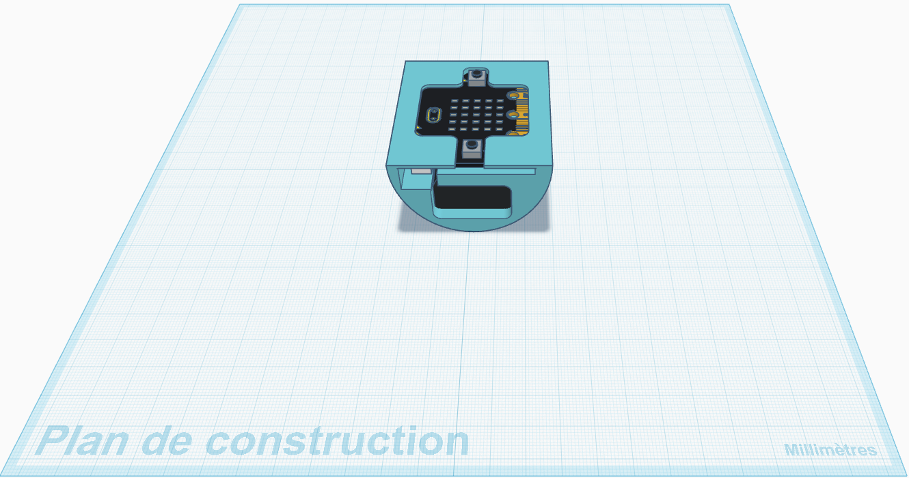
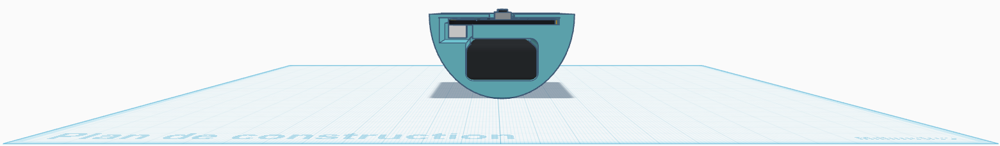
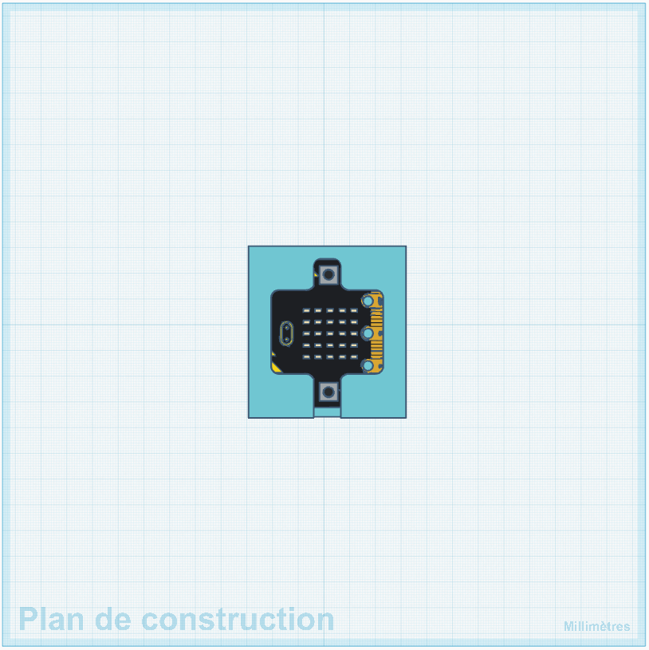
Séance 33 : Les différents types de liaisons mécaniques
Thème : Création, conception, réalisation, innovations technologiques
Compétence visée : Identifier et caractériser des solutions techniques (liaisons mécaniques)
Objectifs d’apprentissage-
Ce que les élèves vont apprendre (connaissances) :
- Ce qu’est une liaison mécanique.
-
La différence entre :
- liaison fixe (aucun mouvement),
- liaison pivot (rotation),
- liaison glissière (translation),
- liaison pivot glissant (rotation + translation).
- Que les liaisons déterminent les mouvements autorisés entre deux pièces.
-
Ce qu’ils vont apprendre à faire (capacités) :
- Identifier une liaison mécanique dans un objet réel.
- Associer un type de liaison à un mouvement.
- Réaliser un tableau comparatif clair.
- Produire un document structuré avec images annotées.
Pourquoi ce cours
Pour concevoir un objet solide et fonctionnel, il faut comprendre comment les pièces sont assemblées entre elles.
Les liaisons mécaniques permettent de relier des pièces et déterminent leurs mouvements possibles.
-
Sans liaisons mécaniques:
- un vélo ne tiendrait pas debout
- une porte ne pourrait pas pivoter
- un rail ne pourrait pas coulisser
- ...
Introduction et explication
Une liaison mécanique est un système qui relie deux pièces ensemble.
Elle peut être de différents types, selon les mouvements qu’elle autorise entre les pièces :
- Une liaison fixe ne permet aucun mouvement entre les pièces (ex: collage, soudure).
- Une liaison pivot permet une rotation autour d’un axe (ex: charnière d’une porte).
- Une liaison glissière permet une translation le long d’un axe (ex: tiroir).
- Une liaison pivot glissant permet à la fois une rotation et une translation (ex: une tige de selle de vélo).
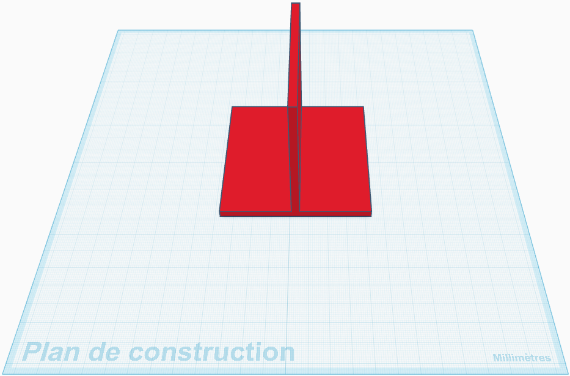
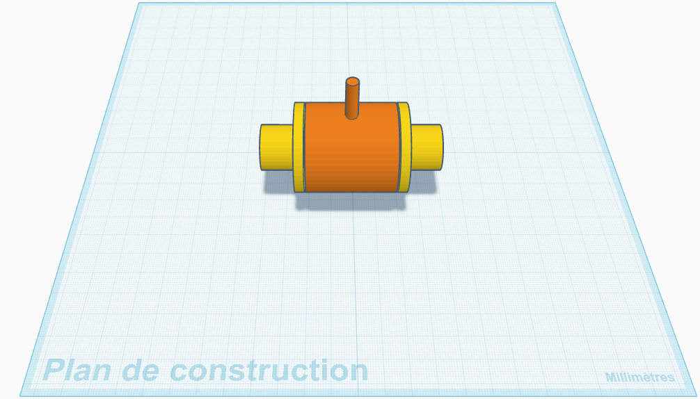
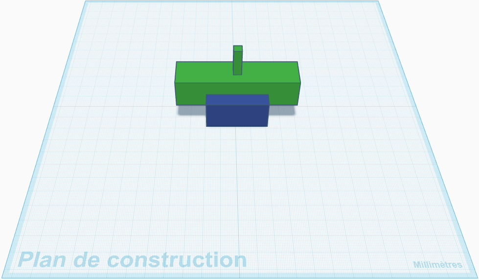
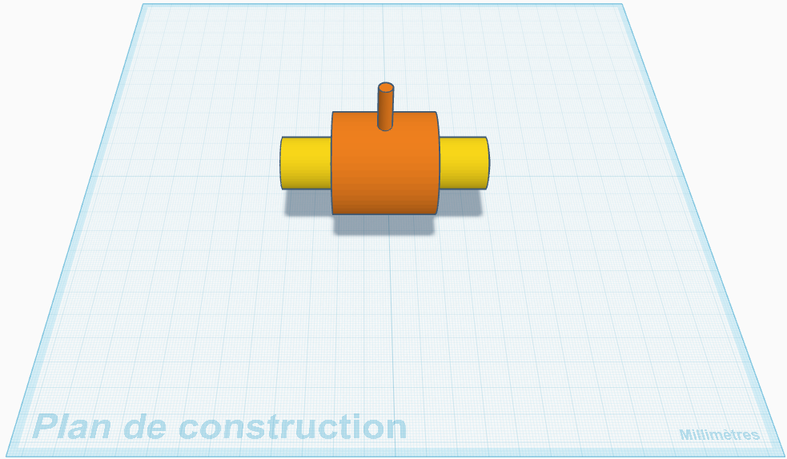
| Type de liaison | Mouvement autorisé | Exemple concret |
| Fixe | Aucun mouvement | Cadre d’un vélo |
| Pivot | Rotation | Porte / roue |
| Glissière | Translation | Tiroir |
| Pivot glissant | Rotation + translation | Tige de selle de vélo |
Création du document
- Créer un document LibreOffice Writer.
- Nommez le "5e_S33_nom1_nom2" (pas de prénom)
-
Ouvrez le document et y mettre OBLIGATOIREMENT les informations suivantes:
- Séance 33 : Les différents types de liaisons mécaniques
- Nom et prénom des membres du groupe
- Seulement après avoir fait cela, vous pouvez continuer.
Recherche sur ordinateur
Trouvez des exemples d’objets du quotidien qui utilisent ces différents types de liaisons mécaniques, et collez une image, puis annotez la pour chaque exemple.
Par exemple, pour la liaison pivot, vous pouvez trouver une porte, et annoter l’image en indiquant où se trouve la charnière (liaison pivot) et comment elle permet à la porte de pivoter.
Création du tableau comparatif
Copier / Coller le tableau suivant dans votre document, puis remplissez le:
| Type de liaison | Mouvement possible | Exemple réel | Schéma simple (facultatif) |
Séance 34 : Modélisation des différents types de liaisons mécaniques
Thème : Création, conception, réalisation, innovations technologiques
Compétence visée : Identifier et caractériser des solutions techniques (liaisons mécaniques)
Objectifs d’apprentissage-
Ce que les élèves vont apprendre (connaissances) :
- Ce qu’est une liaison mécanique.
-
La différence entre :
- liaison fixe (aucun mouvement),
- liaison pivot (rotation),
- liaison glissière (translation),
- liaison pivot glissant (rotation + translation).
- Que les liaisons déterminent les mouvements autorisés entre deux pièces.
-
Ce qu’ils vont apprendre à faire (capacités) :
- Identifier une liaison mécanique dans un objet réel.
- Associer un type de liaison à un mouvement.
- Réaliser un tableau comparatif clair.
- Produire un document structuré avec images annotées.
Pourquoi ce cours
Pour concevoir un objet solide et fonctionnel, il faut comprendre comment les pièces sont assemblées entre elles.
Aujourd’hui, vous allez modéliser les différents types de liaisons mécaniques que vous avez vu lors de la séance précédente, en utilisant Tinkercad. Vous allez créer une nouvelle conception 3D pour chaque type de liaison, et modéliser un exemple simple de chaque type de liaison.
Let's GO !!!!!
- Créer un document LibreOffice Writer.
- Nommez le "5e_S34_nom1_nom2" (pas de prénom)
-
Ouvrez le document et y mettre OBLIGATOIREMENT les informations suivantes:
- Séance 34 : Modélisation des différents types de liaisons mécaniques
- Nom et prénom des membres du groupe
- Seulement après avoir fait cela, vous pouvez continuer.
- Allez sur Tinkercad
- Créez une nouvelle conception pour chaque type de liaison mécanique (fixe, pivot, glissière, pivot glissant)
- Prendre un screen de votre travail a la fin de chaque conception et le mettre dans votre document avec comme légende: "liaison [type de liaison]"
- Déposer votre document dans le dossier partagé de votre classe (CDC/Ma Classe/Espace d'échange/Techno)
Séance 35 : Modélisation du porte-clé en 3D : créer un moyen de fermer le porte-clé
Thème : Création, conception, réalisation, innovations technologiques
Compétence visée : Concevoir et représenter une solution technique (modélisation 3D)
Objectifs d’apprentissage-
Ce que les élèves vont apprendre (connaissances) :
- Une pièce 3D se construit à partir de formes simples (solides) qu’on dimensionne, positionne et assemble.
- En modélisation, on doit respecter des contraintes : dimensions, épaisseur, emboîtement, passage des câbles, stabilité.
- Un objet fabriqué (impression 3D) a besoin de règles simples : épaisseur minimale, trous, ajustements.
-
Ce qu’ils vont apprendre à faire (capacités) :
- Prendre des mesures précises pour modéliser un objet 3D.
- Noter les dimensions dans un document pour les retrouver facilement.
- Utiliser Tinkercad pour créer une pièce avec des cotes précises.
- Réaliser un assemblage simple (ajout / alignement / groupement).
Pourquoi ce cours
Vous avez apris à modéliser une forme en 3D, mais pour que votre objet puisse être fabriqué, il doit respecter des dimensions précises.
Aujourd’hui, vous allez trouver un moyen de fermer votre porte-clé pour que votre carte micro:bit et votre batterie soient bien maintenues à l’intérieur de votre porte-clé, tout en respectant les contraintes de dimensions, d’accès aux boutons et aux LEDs, et de solidité. Vous allez ensuite le créer en 3D et l’ajouter à votre porte-clé. Vous pouvez faire un système de fermeture simple (ex: un couvercle qui se clipse, ou un système de vis), ou un système plus complexe (ex: un système de charnière, ou un système de glissière), à vous de voir.
Let's GO !!!!!
- Créer un document LibreOffice Writer.
- Nommez le "5e_S35_nom1_nom2" (pas de prénom)
-
Ouvrez le document et y mettre OBLIGATOIREMENT les informations suivantes:
- Séance 35 : Modélisation du porte-clé en 3D : créer un moyen de fermer le porte-clé
- Nom et prénom des membres du groupe
- Seulement après avoir fait cela, vous pouvez continuer.
- Allez sur Tinkercad
- Dupliquez votre conception 3D de l'avant dernière séance (avant l'assemblage)
- Il va falloir trouver un moyen de fermer le porte clé.
-
Plusieurs choix s'offrent à vous :
- un couvercle qui se clipse
- un couvercle qui se glisse dans une fente
- un système de vis
- un système avec un loquet
- un cache qui pivote
- Prendre un screen de votre travail et le mettre dans votre document avec comme légende: "Porte-clé 3D: assemblage"
- Déposer votre document dans le dossier partagé de votre classe (CDC/Ma Classe/Espace d'échange/Techno)
Exemple de modélisation de mon porte-clé (vous n’êtes pas obligé de faire exactement la même chose, faites en fonction de vos connaissances et de votre créativité, l’essentiel est que les dimensions soient respectées) :
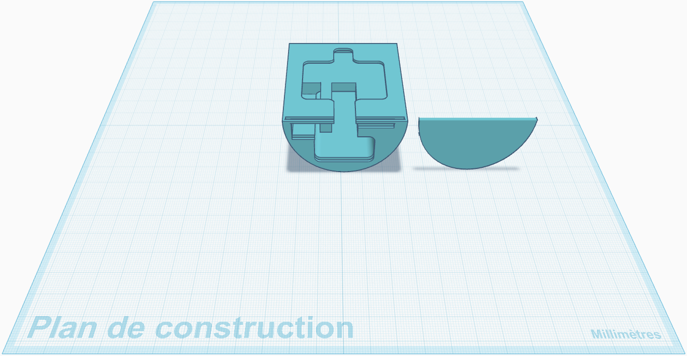
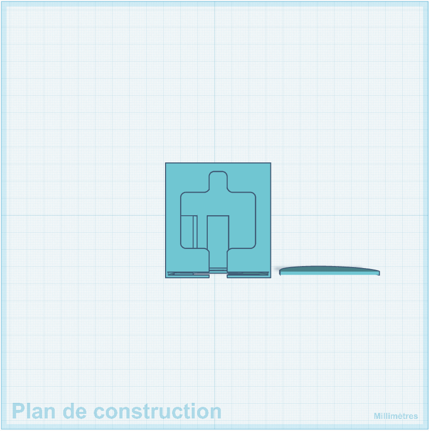
Séance 36 : Modélisation du porte-clé en 3D : dernières corrections et préparation à l’impression
Thème : Création, conception, réalisation, innovations technologiques
Compétence visée : Concevoir et représenter une solution technique (modélisation 3D)
Objectifs d’apprentissage-
Ce que les élèves vont apprendre (connaissances) :
- Une pièce 3D se construit à partir de formes simples (solides) qu’on dimensionne, positionne et assemble.
- En modélisation, on doit respecter des contraintes : dimensions, épaisseur, emboîtement, passage des câbles, stabilité.
- Un objet fabriqué (impression 3D) a besoin de règles simples : épaisseur minimale, trous, ajustements.
-
Ce qu’ils vont apprendre à faire (capacités) :
- Prendre des mesures précises pour modéliser un objet 3D.
- Noter les dimensions dans un document pour les retrouver facilement.
- Utiliser Tinkercad pour créer une pièce avec des cotes précises.
- Réaliser un assemblage simple (ajout / alignement / groupement).
Pourquoi ce cours
Vous avez apris à modéliser une forme en 3D, mais pour que votre objet puisse être fabriqué, il doit respecter des dimensions précises.
Aujourd’hui, vous allez finaliser et préparer votre porte-clé pour l’impression 3D. Vous allez vérifier que votre porte-clé respecte les contraintes de fabrication (dimensions, épaisseur, trous, ajustements), et vous allez faire les derniers ajustements pour que votre porte-clé soit prêt à être imprimé en 3D.
Let's GO !!!!!
- Créer un document LibreOffice Writer.
- Nommez le "5e_S36_nom1_nom2" (pas de prénom)
-
Ouvrez le document et y mettre OBLIGATOIREMENT les informations suivantes:
- Séance 36 : Modélisation du porte-clé en 3D : dernières corrections et préparation à l’impression
- Nom et prénom des membres du groupe
- Seulement après avoir fait cela, vous pouvez continuer.
- Allez sur Tinkercad
- Reprenez votre porte-clé 3D de la séance précédente
- Vérifiez que tout respecte les contraintes de fabrication (dimensions, épaisseur, trous, ajustements)
- Finissez chaques détails, chaque éléments, ajoutez les derniers ajustements nécessaires
- Prendre un screen de votre travail et le mettre dans votre document avec comme légende: "Porte-clé 3D: rendu final"
- Vous allez exporter votre porte-clé 3D au format STL
- Dans le menu tout en haut à droite, cliquez sur "Exporter" puis choississez ".STL"
- Enregistrer le fichier avec le nom "5e_S35_nom1_nom2_porte-cle_3D.stl"
- Déposer vos 2 documents dans le dossier partagé de votre classe (CDC/Ma Classe/Espace d'échange/Techno)
Séance 38 : Comparer et choisir un objet technique
Thème 1 : Les objets et systèmes techniques : leurs usages et leurs interactions
Compétence visée : Caractériser et choisir un objet technique selon différents critères
Objectifs d’apprentissage-
Ce que les élèves vont apprendre (connaissances) :
- Un objet technique peut être comparé selon plusieurs critères : usage, performance, coût, impact environnemental, confort.
- Il n’existe pas de “meilleur objet” universel : le choix dépend du besoin.
- Comparer plusieurs objets permet de faire un choix raisonné.
-
Ce qu’ils vont apprendre à faire (capacités) :
- Rechercher des informations fiables sur plusieurs objets techniques.
- Construire un tableau comparatif clair et structuré.
- Justifier un choix à l’écrit en utilisant des critères précis.
- Produire un document numérique propre et organisé.
Pourquoi ce cours
Dans la vie quotidienne, nous devons souvent choisir entre plusieurs objets techniques (vélo, téléphone, ordinateur…). Ce choix ne se fait pas au hasard : il dépend de critères comme le prix, l’usage ou l’efficacité. Aujourd’hui, nous allons apprendre à comparer plusieurs solutions pour faire un choix réfléchi. Cette compétence est essentielle pour devenir un utilisateur autonome et responsable.
1) Lancement + consigne de rendu
Objectif du jour : comparer plusieurs vélos et justifier un choix.
Livrable à rendre : 1 PDF contenant :
- Un tableau comparatif complété
- Une conclusion argumentée
- Le titre de la séance
- Nom et prénom
- Enregistrez sous :
5e_S38_NOM1_NOM2_Comparatif_Velo_V1.pdf
-
Avant de commencer:
- Créer un document LibreOffice Writer
- Nommez-le :
5e_S38_NOM1_NOM2_Comparatif_Velo_V1.odt - Mettre à l'intérieur:
- Le titre de la séance
- Vos nom et prénom
- Puis seulement après ça, vous pourrez commencer
2) Recherche des informations
Sur ordinateur, rechercher des informations sur les 3 types de vélos suivants :
- Vélo classique
- Vélo électrique
- Vélo pliant
Consignes :
- Identifier leurs caractéristiques principales
- Noter les avantages et les inconvénients
- Faire attention à la fiabilité des sources
3) Tableau comparatif
Copiez puis compléter le tableau suivant dans votre document :
| Critères | Vélo classique | Vélo électrique | Vélo pliant |
|---|---|---|---|
| Usage | … | … | … |
| Performance | … | … | … |
| Coût | … | … | … |
| Impact environnemental | … | … | … |
| Confort | … | … | … |
Conseil : répondre avec des phrases courtes ou mots-clés (ex : “cher”, “rapide”, “léger”…)
4) Conclusion argumentée
Rédiger une réponse de 5 à 6 lignes à la question suivante :
- Quel vélo choisirais-tu et pourquoi ?
Consignes :
- Utiliser au moins 2 critères du tableau
- Justifier clairement ton choix
5) Rendu (fin de séance)
- Votre document doit contenir :
- Le tableau complété
- La conclusion rédigée
- Exporter en PDF
- Nom du fichier :
5e_S38_NOM1_NOM2_Comparatif_Velo_V1.pdf- Déposer dans l’espace d’échange
Séance 39 : Interactions entre un objet technique, l’utilisateur et son environnement
Thème 1 : Les objets et systèmes techniques : leurs usages et leurs interactions
Compétence visée : Décrire les interactions entre un objet technique, son environnement et les utilisateurs
Objectifs d’apprentissage-
Ce que les élèves vont apprendre (connaissances) :
- Un objet technique fonctionne grâce à des échanges avec un utilisateur et avec son environnement.
- Sans interaction (utilisateur, énergie, réseau…), un objet technique ne peut pas fonctionner correctement.
- Un téléphone est un système technique qui échange des informations (messages, données, sons).
-
Ce qu’ils vont apprendre à faire (capacités) :
- Identifier les éléments extérieurs qui interagissent avec un objet technique.
- Classer ces éléments : utilisateur / environnement / système technique.
- Construire un schéma simple d’interaction.
- Produire un document numérique structuré et clair.
Pourquoi ce cours
Un téléphone portable semble fonctionner tout seul… mais en réalité, il dépend de nombreux éléments : l’utilisateur, la batterie, le réseau, les applications. Aujourd’hui, nous allons comprendre que sans ces interactions, le téléphone ne peut pas fonctionner. Cette notion est essentielle pour comprendre comment sont conçus les objets techniques.
1) Lancement + consigne de rendu
Objectif du jour : identifier toutes les interactions autour d’un téléphone.
Livrable à rendre : 1 document contenant :
- Le titre de la séance
- Nom et prénom des membres du groupe
- Une liste d’interactions
- Un tableau complété
- Un schéma d’interaction
- Une conclusion rédigée
- Un document PDF enregistré sous :
5e_S39_Nom1_Nom2_Interactions_Telephone_V1
-
Avant de commencer:
- Créer un document LibreOffice Writer
- Nommez-le :
5e_S39_Nom1_Nom2_Interactions_Telephone_V1.odt - Mettre à l'intérieur:
- Le titre de la séance
- Vos nom et prénom
- Puis seulement après ça, vous pourrez commencer
2) Observation et réflexion
Répondre rapidement à cette question dans votre document :
- Que se passe-t-il si ton téléphone n’a plus de batterie ?
- Que se passe-t-il s’il n’y a pas de réseau ?
- Que se passe-t-il si personne ne l’utilise ?
Conclusion attendue : le téléphone ne fonctionne pas sans interactions.
3) Recherche et identification
Sur ordinateur, identifier tous les éléments qui interagissent avec un téléphone.
Exemples :
- Utilisateur
- Batterie
- Réseau (WiFi / 4G / 5G)
- Applications
- Lumière
- Son
- Autres téléphones
Faire une liste d’au moins 8 éléments.
4) Tableau à compléter
| Élément extérieur | Catégorie | Interaction avec le téléphone | Exemple |
|---|---|---|---|
| Utilisateur | Utilisateur | Utilise l’écran, envoie des messages | Toucher l’écran |
| Batterie | Environnement | Fournit l’énergie | Téléphone s’éteint sans batterie |
| Réseau | Environnement | Permet de communiquer | Envoyer un message |
| … | … | … | … |
| … | … | … | … |
5) Schéma d’interaction
Réaliser un schéma simple :
- Placer Téléphone au centre
- Ajouter autour les éléments identifiés
- Relier avec des flèches
Consigne : le schéma doit être clair et lisible.
6) Conclusion rédigée
Répondre en 4 à 5 lignes :
- Pourquoi un téléphone ne peut-il pas fonctionner seul ?
7) Rendu (fin de séance)
- Votre document doit contenir :
- Les réponses aux questions
- Le tableau complété
- Le schéma
- La conclusion
- Exporter en PDF
5e_S39_Nom1_Nom2_Interactions_Telephone_V1.pdf- Déposer dans l’espace d’échange
Séance 40 : La chaîne d’information d’un objet technique
Thème 2 : Structure, fonctionnement, comportement des objets techniques
Compétence visée : Identifier les éléments d’une chaîne d’information (acquérir, traiter, communiquer)
Objectifs d’apprentissage-
Ce que les élèves vont apprendre (connaissances) :
- Un objet technique reçoit, traite et transmet des informations.
- La chaîne d’information est composée de trois étapes : acquérir (capteur), traiter (programme), communiquer (action).
- Un téléphone utilise des capteurs (écran tactile, micro, capteur de lumière, accéléromètre).
-
Ce qu’ils vont apprendre à faire (capacités) :
- Identifier les différentes étapes d’une chaîne d’information.
- Associer un capteur à une information.
- Construire un schéma simple de chaîne d’information.
- Produire un document numérique structuré.
Pourquoi ce cours
Les objets techniques modernes ne font pas que fonctionner mécaniquement : ils prennent des décisions grâce à des informations. Un téléphone, par exemple, détecte ce que vous faites (toucher, mouvement, lumière) et réagit. Aujourd’hui, nous allons comprendre comment ces informations circulent dans un objet technique.
1) Lancement + consigne de rendu
Objectif du jour : comprendre et représenter la chaîne d’information d’un téléphone.
Livrable à rendre : 1 document contenant :
- Un schéma de chaîne d’information
- Un tableau complété
- Une explication rédigée
- Le titre de la séance
- Nom et prénom
- Enregistrez sous :
5e_S40_Nom1_Nom2_ChaineInformation_V1
2) Observation et compréhension
Répondre dans votre document :
- Que se passe-t-il quand tu touches l’écran de ton téléphone ?
- Que se passe-t-il quand tu reçois un message ?
Idée à comprendre : le téléphone reçoit une information, la traite, puis agit.
3) Tableau à compléter
| Étape | Rôle | Exemple dans le téléphone |
|---|---|---|
| Acquérir | Recevoir une information | Écran tactile / micro / capteur de lumière |
| Traiter | Analyser l’information | Programme du téléphone |
| Communiquer | Donner une réponse | Affichage écran / son / vibration |
4) Schéma de la chaîne d’information
Créer un schéma simple dans votre document :
- Information → Capteur → Traitement → Action
Exemple :
- Doigt → écran tactile → programme → affichage
Consigne : utiliser des flèches et rendre le schéma lisible.
5) Lien avec micro:bit (ouverture)
Le micro:bit fonctionne exactement de la même façon :
- Capteur (bouton, lumière, mouvement)
- Programme
- Action (LED, son)
Question :
- Donner un exemple simple de chaîne d’information avec un micro:bit.
6) Rédaction
Rédiger 4 à 5 lignes pour répondre à la question :
- À quoi sert la chaîne d’information dans un objet technique ?
7) Rendu (fin de séance)
- Votre document doit contenir :
- Le tableau complété
- Le schéma
- La réponse rédigée
- Exporter en PDF
5e_S40_Nom1_Nom2_ChaineInformation_V1.pdf- Déposer dans l’espace d’échange
Séance 41 : Modifier un programme existant (micro:bit)
Thème 2 : Structure, fonctionnement, comportement des objets techniques
Compétence visée : Modifier les paramètres d’un programme existant et observer les effets
Objectifs d’apprentissage-
Ce que les élèves vont apprendre (connaissances) :
- Un objet technique fonctionne grâce à un programme.
- Un programme peut être modifié sans être entièrement recréé.
- Modifier un paramètre change le comportement de l’objet.
-
Ce qu’ils vont apprendre à faire (capacités) :
- Lire un programme simple sur micro:bit (MakeCode).
- Identifier les entrées (boutons, capteurs) et les sorties (LED).
- Modifier des paramètres (temps, condition, affichage).
- Observer et expliquer les effets des modifications.
- Produire un document numérique clair avec résultats.
Pourquoi ce cours
Les objets techniques modernes (téléphones, objets connectés) fonctionnent grâce à des programmes. Mais les ingénieurs ne repartent pas toujours de zéro : ils modifient des programmes existants. Aujourd’hui, vous allez apprendre à comprendre et modifier un programme simple avec un micro:bit.
1) Lancement + consigne de rendu
Objectif du jour : modifier un programme et observer ses effets.
Livrable à rendre : 1 PDF contenant :
- Le titre de la séance
- Nom et prénom
- Des captures d’écran du programme
- Les modifications réalisées
- Un tableau des résultats
- Une conclusion rédigée
- Enregistrez sous :
5e_S41_Nom1_Nom2_ModifProgramme_V1
2) Découverte du programme
Sur ordinateur, créer le programme suivant sur MakeCode.
Programme de base :
- Quand on appuie sur le bouton A → afficher un cœur
- Quand on appuie sur le bouton B → afficher un smiley
Questions :
- Quelle est l’entrée ?
- Quelle est la sortie ?
3) Modifications à réaliser
Modification 1 :
- Changer l’image affichée
Modification 2 :
- Ajouter un délai (pause de 1 seconde)
Modification 3 :
- Faire clignoter l’image (afficher → effacer → afficher)
Modification 4 :
- Utiliser un capteur (secouer le micro:bit → afficher une image)
4) Tableau des résultats
| Modification | Ce qui a été changé | Effet observé |
|---|---|---|
| Image | … | … |
| Délai | … | … |
| Clignotement | … | … |
| Capteur | … | … |
5) Captures d’écran
- Faire au moins 2 captures du programme modifié
- Les insérer dans le document
6) Conclusion
Répondre en 4 à 5 lignes :
- Pourquoi est-il utile de modifier un programme existant ?
7) Rendu (fin de séance)
- Votre document doit contenir :
- Les réponses
- Le tableau
- Les captures d’écran
- La conclusion
- Exporter en PDF
5e_S41_Nom1_Nom2_ModifProgramme_V1.pdf- Déposer dans l’espace d’échange
Séance 42 : Tester un objet technique avec un protocole
Thème 2 : Structure, fonctionnement, comportement des objets techniques
Compétence visée : Valider le comportement d’un objet technique à l’aide d’un protocole de test
Objectifs d’apprentissage-
Ce que les élèves vont apprendre (connaissances) :
- Un objet technique doit être testé pour vérifier qu’il fonctionne comme prévu.
- Un protocole de test est une suite d’étapes précises à suivre dans l’ordre.
- Tester permet de repérer un fonctionnement correct, un dysfonctionnement ou une amélioration possible.
-
Ce qu’ils vont apprendre à faire (capacités) :
- Suivre un protocole de test simple sans oublier d’étape.
- Observer et noter des résultats de manière claire.
- Comparer le résultat attendu et le résultat observé.
- Rédiger une conclusion simple sur le fonctionnement d’un objet technique.
- Produire un document numérique propre et structuré.
Pourquoi ce cours
Concevoir ou programmer un objet technique ne suffit pas : il faut ensuite vérifier qu’il fonctionne vraiment. Aujourd’hui, nous allons tester un micro:bit programmé à l’aide d’un protocole précis. Comme dans un vrai laboratoire ou dans une entreprise, nous allons suivre des étapes, observer les résultats et conclure si l’objet fonctionne correctement ou non.
1) Lancement + consigne de rendu
- Avant de commencer:
- Créer votre document Writer
- Mettre OBLIGATOIREMENT les informations suivantes:
- Le titre de la séance
- Nom et prénom des élèves du groupe
- Enregistrez-le dans l'espace d'échange, dossier techno, dossier S42, avec le nom suivant:
5e_S42_Nom1_Nom2_TestObjet_V1 - Seulement aprés ça, vous pouvez continuer
Livrable à rendre : 1 PDF contenant :
- Le protocole complété
- Un tableau de résultats
- Une ou deux captures d’écran du programme testé
- Une conclusion rédigée
2) Objet testé
Le programme testé aujourd’hui est le suivant :
- Quand on appuie sur le bouton A → le micro:bit affiche un cœur
- Quand on appuie sur le bouton B → le micro:bit affiche un smiley
- Quand on secoue le micro:bit → il affiche un carré
But du test : vérifier si chaque action provoque bien le bon affichage.
3) Protocole de test
Dans votre document, recopier puis compléter le protocole suivant :
| N° | Action à réaliser | Résultat attendu | Résultat observé | Test réussi ? |
|---|---|---|---|---|
| 1 | Appuyer sur le bouton A | Le cœur s’affiche | … | … |
| 2 | Appuyer sur le bouton B | Le smiley s’affiche | … | … |
| 3 | Secouer le micro:bit | Le carré s’affiche | … | … |
| 4 | Appuyer plusieurs fois sur A | Le cœur s’affiche à chaque fois | … | … |
| 5 | Appuyer plusieurs fois sur B | Le smiley s’affiche à chaque fois | … | … |
4) Réalisation des tests
Consigne importante :
- Ne pas écrire seulement “ça marche”
- Préciser exactement ce que vous observez
- Comparer avec le résultat attendu
- Cliquer ici pour télécharger le programme
- Ouvrir le programme sur MakeCode
- Vérifier les blocs présents
- Uploader le programme dans le micro:bit ou utiliser le simulateur
- Réaliser les actions une par une
- Compléter le tableau avec des observations précises
- Faire une capture du programme MakeCode
- Faire une capture du simulateur pour chaque test
- Insérer les captures dans le document avec un petit titre
5) Conclusion rédigée
Répondre en 2 à 3 lignes à la question suivante :
- Pourquoi est-il important de tester un objet technique avec un protocole précis ?
Attendu :
- Expliquer que cela permet de vérifier le fonctionnement
- Dire qu’un protocole évite les oublis et permet de comparer les résultats
- Préciser qu’un test peut révéler un problème à corriger
6) Rendu (fin de séance)
- Votre document doit contenir :
- Le protocole complété
- Le tableau de résultats
- Les captures d’écran
- La conclusion
- Exporter en PDF
5e_S42_Nom1_Nom2_TestObjet_V1.pdf- Déposer dans l’espace d’échange
Séance 43 : Identifier un dysfonctionnement et corriger un programme
Thème 2 : Structure, fonctionnement, comportement des objets techniques
Compétence visée : Identifier un dysfonctionnement d’un objet technique et proposer une correction
Objectifs d’apprentissage-
Ce que les élèves vont apprendre (connaissances) :
- Un objet technique peut ne pas fonctionner correctement à cause d’une erreur.
- Un dysfonctionnement correspond à une différence entre le résultat attendu et le résultat observé.
- Corriger un objet technique nécessite d’identifier précisément l’erreur avant d’agir.
-
Ce qu’ils vont apprendre à faire (capacités) :
- Observer un objet technique et repérer un dysfonctionnement.
- Analyser un programme simple pour identifier une erreur.
- Proposer et tester une correction.
- Comparer le fonctionnement avant et après correction.
- Produire un document numérique structuré et précis.
Pourquoi ce cours
Un objet technique ne fonctionne pas toujours correctement. Dans ce cas, il faut analyser le problème, comprendre son origine, puis corriger. Aujourd’hui, vous allez travailler comme un technicien : identifier une erreur dans un programme micro:bit, puis la corriger pour que l’objet fonctionne correctement.
1) Lancement + consigne de rendu
- Avant de commencer :
- Créer votre document Writer
- Mettre OBLIGATOIREMENT :
- Le titre de la séance
- Nom et prénom des élèves du groupe
- Enregistrer dans : espace d’échange → techno → S43
- Nom du fichier :
5e_S43_Nom1_Nom2_Diagnostic_V1 - Seulement après cela, vous pouvez commencer
Livrable à rendre : 1 PDF contenant :
- Description du problème
- Tableau de diagnostic complété
- Capture du programme avant correction
- Capture du programme corrigé
- Conclusion rédigée
2) Observation du fonctionnement
Cliquer ici pour télécharger le programme.
Ouvrir le programme fourni sur MakeCode.
Fonctionnement attendu :
- Bouton A → cœur
- Bouton B → smiley
- Secouer → carré
Travail demandé :
- Lancer le simulateur ou uploader le code sur une carte micro:bit
- Tester chaque action
- Observer les erreurs
Attention :
- Dans le tableau suivant
- Noter précisément ce qui ne fonctionne pas
- Ne pas juste écrire “ça marche pas”
3) Tableau de diagnostic
| Action testée | Résultat attendu | Résultat observé | Problème identifié | Correction proposée |
|---|---|---|---|---|
| Bouton A | Cœur | … | … | … |
| Bouton B | Smiley | … | … | … |
| Secouer | Carré | … | … | … |
4) Analyse du programme
Observer les blocs de code.
- Vérifier les événements (bouton A, B, secouer)
- Vérifier les images affichées
- Vérifier les blocs manquants ou mal placés
Travail demandé :
- Faire une capture du programme AVANT correction
- Corriger les erreurs
- Faire une capture APRÈS correction
5) Vérification après correction
- Tester à nouveau les 3 actions
- Compléter le tableau si nécessaire
- Vérifier que tout fonctionne correctement
6) Conclusion rédigée
Répondre en 2 à 3 lignes :
- Pourquoi faut-il comprendre un problème avant de le corriger ?
Attendu :
- Dire qu’il faut identifier l’erreur avant d’agir
- Expliquer qu’une mauvaise correction peut créer un autre problème
- Montrer que tester permet de valider la correction
7) Rendu (fin de séance)
- Votre document doit contenir :
- Le tableau complété
- Les captures avant/après
- La conclusion
- Exporter en PDF
5e_S43_Nom1_Nom2_Diagnostic_V1.pdf- Déposer dans l’espace d’échange
Séance 44 : Faire communiquer des objets techniques (micro:bit radio)
Thème 2 : Structure, fonctionnement, comportement des objets techniques
Compétence visée : Interfacer un objet technique avec un autre pour échanger des informations
Objectifs d’apprentissage-
Ce que les élèves vont apprendre (connaissances) :
- Deux objets techniques peuvent communiquer en échangeant des informations.
- La communication se fait par émission et réception de messages.
- Un micro:bit peut envoyer et recevoir des données grâce à la radio.
-
Ce qu’ils vont apprendre à faire (capacités) :
- Comprendre le principe d’émission et de réception d’un message.
- Utiliser la fonction radio du micro:bit.
- Modifier un programme pour envoyer et recevoir une information.
- Tester une communication entre deux micro:bits.
- Produire un document numérique structuré.
Pourquoi ce cours
Aujourd’hui, de nombreux objets techniques communiquent entre eux : téléphone, montre connectée, objets domotiques. Ces échanges permettent de transmettre des informations. Aujourd’hui, vous allez faire communiquer deux micro:bits entre eux, comme deux objets connectés.
1) Lancement + consigne de rendu
- Avant de commencer :
- Créer votre document Writer
- Mettre OBLIGATOIREMENT :
- Le titre de la séance
- Nom et prénom des élèves du groupe
- Enregistrer dans : espace d’échange → techno → S44
- Nom du fichier :
5e_S44_Nom1_Nom2_Communication_V1 - Seulement après cela, vous pouvez commencer
Livrable à rendre : 1 PDF contenant :
- Description du fonctionnement
- Programme émission + réception
- Captures d’écran
- Conclusion
2) Principe de communication
Un objet technique peut :
- Envoyer une information (émetteur)
- Recevoir une information (récepteur)
Exemple :
- Un téléphone envoie un message
- Un autre téléphone le reçoit
3) Programme émission
Sur le premier micro:bit :
- Ajouter le bloc radio
- Définir le groupe radio (ex : groupe 1)
- Quand on appuie sur le bouton A → envoyer le message "1"
- Quand on appuie sur le bouton B → envoyer le message "2"
Travail demandé :
- Faire une capture du programme
4) Programme réception
Sur le deuxième micro:bit :
- Ajouter le bloc radio
- Mettre le même groupe radio
- Quand un message est reçu :
- Si message = "1" → afficher un cœur
- Si message = "2" → afficher un smiley
Travail demandé :
- Faire une capture du programme
5) Test de communication
- Appuyer sur le bouton A du premier micro:bit
- Observer le second micro:bit
- Faire de même avec le bouton B
Consigne importante :
- Tester plusieurs fois
- Vérifier que la communication fonctionne à chaque fois
6) Tableau de validation
| Action | Message envoyé | Résultat attendu | Résultat observé | Fonctionne ? |
|---|---|---|---|---|
| Bouton A | 1 | Cœur | … | … |
| Bouton B | 2 | Smiley | … | … |
7) Conclusion rédigée
Répondre en 2 à 3 lignes :
- Comment deux objets techniques peuvent-ils communiquer ?
- (N'hésitez pas à faire des recherches sur le web pour répondre)
Attendu :
- Par échange d’informations
- Avec un émetteur et un récepteur
- Grâce à un programme
8) Rendu (fin de séance)
- Votre document doit contenir :
- Description
- Programmes
- Captures
- Tableau
- Conclusion
- Exporter en PDF
5e_S44_Nom1_Nom2_Communication_V1.pdf- Déposer dans l’espace d’échange
Séance 45 : Données et cybersécurité (usage responsable)
Thème 2 : Structure, fonctionnement, comportement des objets techniques
Compétence visée : Identifier les données échangées par un objet technique et adopter des pratiques de cybersécurité
Objectifs d’apprentissage-
Ce que les élèves vont apprendre (connaissances) :
- Un objet technique connecté échange des données (messages, informations, mesures…).
- Les données peuvent être personnelles (nom, photo, localisation…).
- Il est important de protéger ses données pour éviter les risques (piratage, vol d’informations, cyberharcèlement).
-
Ce qu’ils vont apprendre à faire (capacités) :
- Identifier les données échangées par un objet technique.
- Reconnaître les données personnelles.
- Adopter des règles simples de cybersécurité.
- Produire un document numérique clair (charte ou tableau).
Pourquoi ce cours
Les objets techniques modernes (téléphones, objets connectés, etc...) échangent des données en permanence. Ces données peuvent être utiles, mais aussi dangereuses si elles sont mal utilisées. Aujourd’hui, nous allons comprendre quelles données sont échangées et comment les protéger.
1) Lancement + consigne de rendu
- Avant de commencer :
- Créer votre document Writer
- Mettre OBLIGATOIREMENT :
- Le titre de la séance
- Nom et prénom des élèves du groupe
- Enregistrer dans : espace d’échange → techno → S45
- Nom du fichier :
5e_S45_Nom1_Nom2_Cybersecurite_V1 - Seulement après cela, vous pouvez commencer
Livrable à rendre : 1 PDF contenant :
- Un tableau des données
- Une liste de règles de cybersécurité
- Une conclusion
2) Observation
Répondre dans votre document :
- Quelles informations ton téléphone peut-il envoyer ou recevoir ?
Exemples attendus :
- Messages
- Photos
- ...
- ...
- ...
3) Tableau des données
| Donnée | Type (personnelle ou non) | Risque possible |
|---|---|---|
| Nom | Personnelle | Vol d’identité |
| … | … | … |
| … | … | … |
4) Règles de cybersécurité
Rédiger une liste de 5 règles simples pour protéger ses données.
5) Situation problème
Répondre à la question suivante :
- Que faire si quelqu’un publie une photo de toi sans ton autorisation ?
6) Conclusion rédigée
Répondre en 2 à 3 lignes :
- Pourquoi est-il important de protéger ses données ?
7) Rendu (fin de séance)
- Votre document doit contenir :
- Le tableau complété
- Les règles
- La réponse à la situation
- La conclusion
- Exporter en PDF
5e_S45_Nom1_Nom2_Cybersecurite_V1.pdf- Déposer dans l’espace d’échange
Séance 46 : Planifier un mini-projet technique
Thème 3 : Création, conception, réalisation, innovations technologiques
Compétence visée : Organiser et planifier les étapes d’un projet technique simple
Objectifs d’apprentissage-
Ce que les élèves vont apprendre (connaissances) :
- Un projet technique ne se réalise pas au hasard : il faut organiser les étapes avant de commencer.
- Planifier permet de savoir quoi faire, dans quel ordre, et avec quel matériel.
- Un projet comporte plusieurs étapes : comprendre le besoin, imaginer une solution, programmer, tester, corriger, présenter.
-
Ce qu’ils vont apprendre à faire (capacités) :
- Identifier les grandes étapes d’un mini-projet technique.
- Classer ces étapes dans l’ordre logique.
- Associer à chaque étape une action précise à réaliser.
- Produire un document numérique structuré contenant un planning simple.
Pourquoi ce cours
Dans les prochaines séances, vous allez réaliser un mini-projet avec un micro:bit. Mais avant de fabriquer ou de programmer, il faut d’abord organiser le travail. Aujourd’hui, nous allons préparer le projet en construisant un planning simple. Cela permettra de savoir ce qu’il faudra faire à chaque séance et d’éviter de travailler dans le désordre.
1) Lancement + consigne de rendu
- Avant de commencer :
- Créer votre document Writer
- Mettre OBLIGATOIREMENT :
- Le titre de la séance
- Nom et prénom des élèves du groupe
- Enregistrer dans : espace d’échange → techno → S46
- Nom du fichier :
5e_S46_Nom1_Nom2_PlanificationProjet_V1 - Seulement après cela, vous pouvez commencer
Livrable à rendre : 1 PDF contenant :
- Le titre du projet
- La liste des étapes du projet
- Un tableau de planification complété
- Une courte conclusion rédigée
2) Présentation du mini-projet
Le mini-projet des prochaines séances sera :
- Créer un objet communicant simple avec micro:bit
Exemple de fonctionnement attendu :
- Un micro:bit envoie un message
- Un autre micro:bit reçoit ce message
- Le deuxième micro:bit réagit en affichant une information
But du projet : comprendre comment un objet technique peut envoyer, recevoir et traiter une information.
3) Identifier les grandes étapes du projet
Dans votre document, recopier puis compléter la liste suivante :
- Étape 1 : Comprendre le besoin → Identifier à quoi doit servir l’objet technique.
- Étape 2 : Définir ce que l’objet devra faire → Décrire précisément le fonctionnement attendu.
- Étape 3 : Écrire ou modifier le programme → Créer ou adapter le programme pour faire fonctionner l’objet.
- Étape 4 : Tester le fonctionnement → Vérifier si l’objet fonctionne comme prévu.
- Étape 5 : Corriger si nécessaire → Modifier le programme pour résoudre les problèmes.
- Étape 6 : Présenter le résultat → Expliquer le fonctionnement et montrer le projet réalisé.
Travail demandé :
- Pour chaque étape, écrire, avec vos mots, en une courte phrase, ce qu’il faudra faire
4) Tableau de planification
Compléter le tableau suivant dans votre document :
| Étape | Ce qu’il faut faire | Matériel / logiciel nécessaire | Séance prévue |
|---|---|---|---|
| Comprendre le besoin | … | Ordinateur / consigne | 47 |
| Imaginer la solution | … | Ordinateur / schéma | 48 |
| Programmer | … | Ordinateur / MakeCode / micro:bit | 49 |
| Tester | … | micro:bit / simulateur | 50 |
| Corriger | … | MakeCode / micro:bit | 51 |
| Présenter | … | Document / captures / oral | 52 |
5) Choisir un titre simple pour le projet
Dans votre document, écrire un titre pour le projet.
Exemples possibles :
- Système d’alerte entre deux micro:bits
- Objet communicant simple
- Micro:bit émetteur / récepteur
Consigne :
- Choisir un titre clair
- Le titre doit expliquer simplement ce que fera l’objet
6) Conclusion rédigée
Répondre en 2 à 3 lignes :
- Pourquoi est-il important de planifier un projet avant de commencer ?
Attendu :
- Dire que cela permet de savoir quoi faire
- Expliquer que cela évite les oublis et le désordre
- Montrer qu’un projet bien préparé est plus facile à réussir
7) Rendu (fin de séance)
- Votre document doit contenir :
- La liste des étapes du projet
- Le tableau de planification complété
- Le titre choisi pour le projet
- La conclusion
- Exporter en PDF
5e_S46_Nom1_Nom2_PlanificationProjet_V1.pdf- Déposer dans l’espace d’échange
Séance 47 : Définir le besoin et le cahier des charges
Thème 3 : Création, conception, réalisation, innovations technologiques
Compétence visée : Identifier un besoin et définir les fonctions attendues d’un objet technique
Objectifs d’apprentissage-
Ce que les élèves vont apprendre (connaissances) :
- Un objet technique est conçu pour répondre à un besoin.
- Le cahier des charges décrit ce que l’objet doit faire et les contraintes à respecter.
- Un besoin doit être clair pour pouvoir concevoir une solution adaptée.
-
Ce qu’ils vont apprendre à faire (capacités) :
- Identifier le besoin d’un objet technique.
- Formuler une fonction principale simple.
- Identifier des contraintes (matériel, sécurité, fonctionnement).
- Compléter un cahier des charges simple.
- Produire un document numérique structuré.
Pourquoi ce cours
Avant de fabriquer ou programmer un objet, il faut savoir à quoi il doit servir. Aujourd’hui, nous allons définir précisément le besoin du mini-projet et écrire un cahier des charges simple. Cela permettra de guider les prochaines séances et de ne pas travailler au hasard.
1) Lancement + consigne de rendu
- Avant de commencer :
- Créer votre document Writer
- Mettre OBLIGATOIREMENT :
- Le titre de la séance
- Nom et prénom des élèves du groupe
- Enregistrer dans : espace d’échange → techno → S47
- Nom du fichier :
5e_S47_Nom1_Nom2_CahierDesCharges_V1 - Seulement après cela, vous pouvez commencer
Livrable à rendre : 1 PDF contenant :
- Le besoin identifié
- La fonction principale
- Un tableau de cahier des charges complété
- Une conclusion
2) Identifier le besoin
Le projet est : ....
mettre le nom de votre projet ci-dessus
Travail demandé :
- Répondre à la question : À quoi va servir cet objet ?
Exemples de réponses possibles :
- Envoyer une information à un autre micro:bit
- Avertir un utilisateur
- Transmettre un signal simple
3) Fonction principale
Compléter la phrase suivante :
- L’objet doit permettre de : …
Exemple :
- L’objet doit permettre d’envoyer un message à un autre micro:bit.
4) Cahier des charges
Compléter le tableau suivant :
| Élément | Exigence |
|---|---|
| Fonction principale | … |
| Entrée | Bouton ou capteur ? ... |
| Sortie | Affichage ou signal ? ... |
| Communication | Radio micro:bit ? ... |
| Matériel | 2 micro:bits ? ... |
| Contrainte | Fonctionner simplement ? ... |
Consigne :
- Compléter les cases manquantes
- Utiliser des phrases simples
5) Schéma simple
Dessiner un schéma simple du fonctionnement :
- micro:bit 1 → envoie message → micro:bit 2 → affiche
6) Conclusion rédigée
Répondre en 2 à 3 lignes :
- Pourquoi faut-il définir un besoin avant de réaliser un objet technique ?
Attendu :
- Dire que cela permet de savoir quoi faire
- Éviter de faire un objet inutile
- Guider la réalisation
7) Rendu (fin de séance)
- Votre document doit contenir :
- Le besoin
- La fonction principale
- Le tableau complété
- La conclusion
- Exporter en PDF
5e_S47_Nom1_Nom2_CahierDesCharges_V1.pdf- Déposer dans l’espace d’échange
Séance 48 : Concevoir la solution technique
Thème 3 : Création, conception, réalisation, innovations technologiques
Compétence visée : Imaginer, représenter et décrire une solution technique répondant à un besoin
Objectifs d’apprentissage-
Ce que les élèves vont apprendre (connaissances) :
- Une solution technique est une réponse concrète à un besoin.
- Avant de programmer ou fabriquer, il faut imaginer comment l’objet va fonctionner.
- Un schéma simple permet de représenter les éléments d’un objet technique et leurs échanges.
-
Ce qu’ils vont apprendre à faire (capacités) :
- Imaginer une solution simple pour répondre au besoin défini.
- Identifier les éléments nécessaires au fonctionnement de l’objet.
- Réaliser un schéma fonctionnel simple.
- Décrire en quelques phrases comment la solution fonctionnera.
- Produire un document numérique structuré et clair.
Pourquoi ce cours
Nous savons maintenant à quoi doit servir notre objet communicant. Avant de programmer, il faut réfléchir à la solution choisie : par exemple, que fera le premier micro:bit, que fera le second, quel message sera envoyé, quel affichage sera produit... Aujourd’hui, nous allons concevoir le fonctionnement de l’objet pour préparer la réalisation.
1) Lancement + consigne de rendu
- Avant de commencer :
- Créer votre document Writer
- Mettre OBLIGATOIREMENT :
- Le titre de la séance
- Nom et prénom des élèves du groupe
- Enregistrer dans : espace d’échange → techno → S48
- Nom du fichier :
5e_S48_Nom1_Nom2_ConceptionSolution_V1 - Seulement après cela, vous pouvez commencer
Livrable à rendre : 1 PDF contenant :
- Le principe de fonctionnement choisi
- Un schéma fonctionnel simple
- Un tableau des éléments nécessaires
- Une courte conclusion rédigée
2) Choisir le fonctionnement du projet
Par exemple: Le projet consiste à faire communiquer deux micro:bits.
Exemple de fonctionnement possible :
- Quand on appuie sur le bouton A du micro:bit 1, il envoie le message "1"
- Le micro:bit 2 reçoit ce message et affiche un cœur
Travail demandé :
- Recopier et compléter, améliorer, approfondir ce fonctionnement si vous gardez cette solution.
- Ou adaptez à votre solution, en restant simple et réalisable
Autres exemples possibles :
- Bouton B → envoi d’un message → affichage d’un smiley
- Secouer → envoi d’un message → affichage d’un carré
3) Tableau des éléments nécessaires
Recopiez et compléter le tableau suivant :
| Élément | Rôle dans le projet |
|---|---|
| Micro:bit 1 | … |
| Micro:bit 2 | … |
| Bouton A ou B | … |
| Radio | … |
| Écran LED | … |
| … | … |
Consigne :
- Expliquer le rôle de chaque élément avec des phrases courtes et simples
4) Réaliser un schéma fonctionnel simple
Dans votre document, réaliser un schéma simple du fonctionnement du projet.
Exemple :
- Utilisateur → bouton A → micro:bit 1 → radio → micro:bit 2 → écran LED
Consignes :
- Mettre les éléments dans l’ordre
- Utiliser des flèches
- Faire un schéma clair et lisible
5) Description du fonctionnement
Rédiger 3 à 4 lignes pour expliquer simplement comment votre solution fonctionnera.
Exemple attendu :
- Quand l’utilisateur appuie sur le bouton A du premier micro:bit, un message est envoyé par radio. Le second micro:bit reçoit ce message et affiche un cœur sur son écran LED.
6) Conclusion rédigée
Répondre en 2 à 3 lignes :
- Pourquoi faut-il concevoir la solution avant de programmer ?
Attendu :
- Dire que cela permet de savoir ce qu’on veut faire
- Éviter les erreurs
- Mieux préparer la réalisation
7) Rendu (fin de séance)
- Votre document doit contenir :
- Le fonctionnement choisi
- Le tableau complété
- Le schéma fonctionnel
- La description
- La conclusion
- Exporter en PDF
5e_S48_Nom1_Nom2_ConceptionSolution_V1.pdf- Déposer dans l’espace d’échange
Séance 49 : Réaliser et programmer la solution technique
Thème 3 : Création, conception, réalisation, innovations technologiques
Compétence visée : Réaliser une solution technique simple en programmant un objet technique
Objectifs d’apprentissage-
Ce que les élèves vont apprendre (connaissances) :
- Une solution technique passe d’une idée à une réalisation concrète grâce à la programmation.
- Un programme permet de faire réagir un objet technique à une action ou à un événement.
- Pour qu’un objet communicant fonctionne, l’émetteur et le récepteur doivent être programmés correctement.
-
Ce qu’ils vont apprendre à faire (capacités) :
- Programmer un micro:bit émetteur et un micro:bit récepteur avec MakeCode.
- Utiliser la radio du micro:bit pour envoyer et recevoir une information simple.
- Réaliser une première version fonctionnelle du projet.
- Faire des captures d’écran du programme et produire un document numérique structuré.
Pourquoi ce cours
Après avoir défini le besoin et imaginé une solution, il faut maintenant la réaliser. Aujourd’hui, vous allez programmer les deux micro:bits pour qu’ils puissent communiquer. Cette étape est importante, car elle permet de transformer une idée sur papier en un objet technique qui fonctionne réellement.
1) Lancement + consigne de rendu
- Avant de commencer :
- Créer votre document Writer
- Mettre OBLIGATOIREMENT :
- Le titre de la séance
- Nom et prénom des élèves du groupe
- Enregistrer dans : espace d’échange → techno → S49
- Nom du fichier :
5e_S49_Nom1_Nom2_RealisationProjet_V1 - Seulement après cela, vous pouvez commencer
Livrable à rendre : 1 PDF contenant :
- Le programme du micro:bit émetteur
- Le programme du micro:bit récepteur
- Des captures d’écran
- Une courte description du fonctionnement
- Une conclusion
2) Programme du micro:bit émetteur
Sur le premier micro:bit, réaliser le programme suivant :
- Ajouter l’extension radio
- Au démarrage, choisir le groupe radio 1 (mettez-vous d'accord, si tous les élèves font la même chose, toutes les cartes auront le même comportement, il faut donc un groupe avec le 1, un autre groupe avec le 2, etc etc...)
- Quand on appuie sur le bouton A, envoyer le nombre 1
- Quand on appuie sur le bouton B, envoyer le nombre 2
Travail demandé :
- Construire le programme sur MakeCode
- Faire une capture d’écran du programme terminé
- Téléverser le programme dans le premier micro:bit si possible
3) Programme du micro:bit récepteur
Sur le deuxième micro:bit, réaliser le programme suivant :
- Ajouter l’extension radio
- Au démarrage, choisir le même groupe radio 1
- Quand un nombre est reçu :
- si le nombre reçu est 1 → afficher un cœur
- si le nombre reçu est 2 → afficher un smiley
Travail demandé :
- Construire le programme sur MakeCode
- Faire une capture d’écran du programme terminé
- Uploader le programme dans le deuxième micro:bit si possible
4) Test rapide du fonctionnement
- Appuyer sur le bouton A du micro:bit émetteur
- Observer le micro:bit récepteur
- Appuyer sur le bouton B du micro:bit émetteur
- Observer le micro:bit récepteur
Dans votre document, écrire :
- Ce qui se passe quand on appuie sur A
- Ce qui se passe quand on appuie sur B
5) Captures d’écran à insérer
- 1 capture du programme émetteur
- 1 capture du programme récepteur
- 1 capture du simulateur en fonctionnement
-
S'il vous reste du temps:
- Programmez un comportement aussi de la carte 2 vers la carte 1
- Par exemple:
- Si la carte 2 envoi quelque chose, la carte 1 affiche aussi quelque chose
- Ajouter les screens du nouveau fonctionnement
6) Description du fonctionnement
Rédiger 3 à 4 lignes pour expliquer simplement comment fonctionne votre projet.
Exemple attendu :
- Quand on appuie sur le bouton A du premier micro:bit, il envoie le nombre 1 par radio. Le deuxième micro:bit reçoit ce nombre et affiche un cœur. Quand on appuie sur le bouton B, il envoie le nombre 2 et le deuxième micro:bit affiche un smiley.
7) Conclusion rédigée
Répondre en 2 à 3 lignes :
- Pourquoi la programmation est-elle nécessaire pour réaliser un objet technique communicant ?
Attendu :
- Dire que le programme commande le fonctionnement de l’objet
- Expliquer que sans programme, il ne peut pas envoyer ou recevoir d’information
- Montrer que le programme permet de réaliser la solution imaginée
8) Rendu (fin de séance)
- Votre document doit contenir :
- Le programme du micro:bit émetteur
- Le programme du micro:bit récepteur
- Les captures d’écran
- La description du fonctionnement
- La conclusion
- Exporter en PDF
5e_S49_Nom1_Nom2_RealisationProjet_V1.pdf- Déposer dans l’espace d’échange
Séance 50 : Tester et améliorer la solution technique
Thème 3 : Création, conception, réalisation, innovations technologiques
Compétence visée : Valider le fonctionnement d’une solution technique et proposer des améliorations
Objectifs d’apprentissage-
Ce que les élèves vont apprendre (connaissances) :
- Une solution technique doit être testée pour vérifier qu’elle fonctionne correctement.
- Tester permet de comparer ce qui était attendu et ce qui est réellement observé.
- Quand un objet technique ne fonctionne pas parfaitement, on peut proposer des améliorations.
-
Ce qu’ils vont apprendre à faire (capacités) :
- Suivre un protocole de test simple sur un objet communicant.
- Observer précisément les résultats obtenus.
- Compléter un tableau de validation.
- Identifier un problème ou une limite de fonctionnement.
- Proposer une amélioration simple du projet.
- Produire un document numérique structuré et clair.
Pourquoi ce cours
Lors de la séance précédente, vous avez programmé deux micro:bits pour qu’ils communiquent. Aujourd’hui, nous allons vérifier si la solution fonctionne comme prévu. Nous allons suivre un protocole de test, observer les résultats et réfléchir à une amélioration possible. Cette étape est indispensable, car un projet technique ne s’arrête pas à la programmation : il faut aussi le valider et l’améliorer.
1) Lancement + consigne de rendu
- Avant de commencer :
- Créer votre document Writer
- Mettre OBLIGATOIREMENT :
- Le titre de la séance
- Nom et prénom des élèves du groupe
- Enregistrer dans : espace d’échange → techno → S50
- Nom du fichier :
5e_S50_Nom1_Nom2_TestAmelioration_V1 - Seulement après cela, vous pouvez commencer
Livrable à rendre : 1 PDF contenant :
- Le protocole de test complété
- Un tableau de validation
- Une ou deux captures d’écran ou photos
- Une amélioration proposée
- Une conclusion rédigée
2) Rappel du fonctionnement attendu
Le projet doit fonctionner de la façon suivante (pour ceux qui ont choisis ce fonctionnement):
- Quand on appuie sur le bouton A du micro:bit émetteur, le micro:bit récepteur affiche un cœur
- Quand on appuie sur le bouton B du micro:bit émetteur, le micro:bit récepteur affiche un smiley
But du test : vérifier que chaque action produit bien le résultat attendu.
3) Protocole de test
Dans votre document, recopier puis compléter le protocole suivant :
| N° | Action à réaliser | Résultat attendu | Résultat observé | Test réussi ? |
|---|---|---|---|---|
| 1 | Appuyer sur le bouton A | Le récepteur affiche un cœur | … | … |
| 2 | Appuyer sur le bouton B | Le récepteur affiche un smiley | … | … |
| 3 | Appuyer plusieurs fois sur A | Le cœur s’affiche à chaque fois | … | … |
| 4 | Appuyer plusieurs fois sur B | Le smiley s’affiche à chaque fois | … | … |
| 5 | Alterner A puis B | Le récepteur affiche d’abord un cœur puis un smiley | … | … |
4) Réalisation des tests
Consigne importante :
- Ne pas écrire seulement “ça marche”
- Décrire exactement ce que vous voyez
- Comparer ce que vous observez avec ce qui était attendu
- Vérifier que les deux micro:bits sont allumés
- Vérifier qu’ils utilisent le même groupe radio
- Réaliser les tests dans l’ordre
- Compléter le tableau au fur et à mesure
- Faire une capture du programme ( plus simulateur) en fonctionnement
5) Tableau d’amélioration
Après les tests, compléter le tableau suivant :
| Point observé | Problème ou limite repéré(e) | Amélioration proposée |
|---|---|---|
| Affichage | … | … |
| Communication | … | … |
| Utilisation | … | … |
Exemples d’améliorations possibles :
- Ajouter un message de départ sur le récepteur
- Faire apparaître l’image plus longtemps
- Ajouter une troisième action avec le secouement
- Afficher un autre symbole plus facile à reconnaître
6) Proposition d’amélioration
Rédiger 3 à 4 lignes pour expliquer une amélioration que vous pourriez apporter au projet.
Attendu :
- Expliquer ce que vous changeriez
- Dire pourquoi cette amélioration serait utile
- Montrer en quoi cela rendrait l’objet plus efficace ou plus simple à utiliser
7) Conclusion rédigée
Répondre en 2 à 3 lignes :
- Pourquoi faut-il tester un projet technique avant de dire qu’il est terminé ?
8) Rendu (fin de séance)
- Votre document doit contenir :
- Le protocole complété
- Le tableau de validation
- Les captures ou photos
- Le tableau d’amélioration
- La proposition d’amélioration
- La conclusion
- Exporter en PDF
5e_S50_Nom1_Nom2_TestAmelioration_V1.pdf- Déposer dans l’espace d’échange
Séance 51 : Corriger et améliorer le programme
Thème 3 : Création, conception, réalisation, innovations technologiques
Compétence visée : Modifier une solution technique pour améliorer son fonctionnement
Objectifs d’apprentissage-
Ce que les élèves vont apprendre (connaissances) :
- Un objet technique peut être amélioré en modifiant son programme.
- Une amélioration permet de corriger un problème ou d’ajouter une fonctionnalité.
- Modifier un programme permet d’adapter un objet technique à un besoin.
-
Ce qu’ils vont apprendre à faire (capacités) :
- Modifier un programme existant sur micro:bit.
- Corriger un dysfonctionnement simple.
- Ajouter une fonctionnalité au projet.
- Tester les modifications réalisées.
- Produire un document numérique structuré avec preuves (captures).
Pourquoi ce cours
Lors de la séance précédente, vous avez testé votre projet et identifié des améliorations possibles. Aujourd’hui, vous allez passer à l’action : modifier le programme pour corriger ou améliorer votre objet communicant. Cette étape est essentielle, car elle permet de rendre un objet technique plus efficace et plus adapté à son utilisation.
1) Lancement + consigne de rendu
- Avant de commencer :
- Créer votre document Writer
- Mettre OBLIGATOIREMENT :
- Le titre de la séance
- Nom et prénom des élèves du groupe
- Enregistrer dans : espace d’échange → techno → S51
- Nom du fichier :
5e_S51_Nom1_Nom2_AmeliorationProgramme_V1 - Seulement après cela, vous pouvez commencer
Livrable à rendre : 1 PDF contenant :
- Le problème ou la limite identifiée
- La modification réalisée
- Une capture avant / après
- Le résultat après modification
- Une conclusion
2) Choisir une amélioration
À partir de la séance précédente, choisir UNE amélioration.
Exemples possibles :
- Ajouter une action avec le secouement
- Afficher une image plus longtemps
- Ajouter un message de départ
- Changer les images pour qu’elles soient plus lisibles
Travail demandé :
- Écrire l’amélioration choisie dans votre document
3) Capture du programme AVANT modification
- Faire une capture du programme actuel (émetteur ou récepteur)
- Insérer la capture dans le document avec le titre : Avant modification
4) Modifier le programme
Sur MakeCode :
- Ajouter ou modifier les blocs nécessaires
- Respecter le fonctionnement du projet
- Ne pas supprimer les fonctions principales
Exemples :
- Ajouter un bloc pause
- Ajouter une condition
- Ajouter une nouvelle action (secouer)
5) Screen du programme APRÈS modification
- Faire un screen du programme modifié
- Insérer le screen avec le titre : Après modification
6) Test du programme modifié
- Tester le fonctionnement avec les micro:bits ou le simulateur
- Vérifier que l’amélioration fonctionne correctement
Dans votre document, écrire :
- Ce qui a changé après modification
- Si l’amélioration fonctionne
7) Conclusion rédigée
Répondre en 2 à 3 lignes :
- Pourquoi est-il utile d’améliorer un programme après les tests ?
Attendu :
- Dire que cela permet de corriger les erreurs
- Améliorer le fonctionnement
- Adapter l’objet au besoin
8) Rendu (fin de séance)
- Votre document doit contenir :
- L’amélioration choisie
- Les captures avant / après
- La description des changements
- La conclusion
- Exporter en PDF
5e_S51_Nom1_Nom2_AmeliorationProgramme_V1.pdf- Déposer dans l’espace d’échange
Séance 52 : Présenter et expliquer un projet technique
Thème 3 : Création, conception, réalisation, innovations technologiques
Compétence visée : Communiquer et présenter une démarche de projet technique
Objectifs d’apprentissage-
Ce que les élèves vont apprendre (connaissances) :
- Un projet technique ne se résume pas à sa réalisation : il faut aussi être capable d’expliquer ce qui a été fait.
- Présenter un projet consiste à montrer le besoin de départ, la solution choisie, le fonctionnement, les tests et les améliorations.
- Une présentation claire permet de faire comprendre le travail réalisé à d’autres personnes.
-
Ce qu’ils vont apprendre à faire (capacités) :
- Organiser les informations importantes d’un projet technique.
- Sélectionner des captures d’écran ou des photos utiles.
- Rédiger une présentation courte, claire et compréhensible.
- Expliquer simplement le fonctionnement d’un objet technique réalisé.
- Produire un document numérique structuré et prêt à être présenté.
Pourquoi ce cours
Un projet technique n’est vraiment terminé que lorsqu’il peut être expliqué. Aujourd’hui, vous allez préparer la présentation finale de votre objet communicant. Il faudra montrer ce que vous avez voulu faire, comment vous l’avez réalisé, comment vous l’avez testé, puis comment vous l’avez amélioré. Cette séance est importante, car elle permet de faire le bilan du travail accompli.
1) Lancement + consigne de rendu
- Avant de commencer :
- Créer votre document Writer
- Mettre OBLIGATOIREMENT :
- Le titre de la séance
- Nom et prénom des élèves du groupe
- Enregistrer dans : espace d’échange → techno → S52
- Nom du fichier :
5e_S52_Nom1_Nom2_PresentationProjet_V1 - Seulement après cela, vous pouvez commencer
Livrable à rendre : 1 PDF contenant :
- Le titre du projet
- Le besoin de départ
- La description du fonctionnement
- Des captures d’écran ou photos
- Les tests réalisés
- L’amélioration apportée
- Une conclusion finale
2) Rappel du projet
Dans votre document, rappeler en une phrase le projet réalisé.
Exemple :
- Nous avons réalisé un objet communicant avec deux micro:bits : l’un envoie une information et l’autre la reçoit puis affiche une image.
3) Les éléments à présenter
Votre document doit obligatoirement contenir les parties suivantes :
- 1. Le besoin : à quoi sert l’objet réalisé ?
- 2. La solution choisie : comment fonctionne-t-il ?
- 3. La réalisation : quel programme avez-vous utilisé ?
- 4. Les tests : comment avez-vous vérifié que cela fonctionne ?
- 5. L’amélioration : qu’avez-vous corrigé ou ajouté ?
4) Tableau récapitulatif du projet
Compléter le tableau suivant :
| Élément du projet | Réponse |
|---|---|
| Nom du projet | … |
| Besoin de départ | … |
| Fonction principale | … |
| Élément qui envoie l’information | … |
| Élément qui reçoit l’information | … |
| Test réalisé | … |
| Amélioration apportée | … |
5) Captures et illustrations
Insérer dans le document :
- Une capture du programme émetteur
- Une capture du programme récepteur
- Un screen du fonctionnement
Consigne :
- Ajouter un petit titre sous chaque image
- Choisir seulement les captures les plus utiles
- Le document doit rester clair et lisible
6) Présentation écrite du fonctionnement
Rédiger 4 à 5 lignes pour expliquer simplement le fonctionnement du projet.
Attendu :
- Décrire ce que fait le micro:bit émetteur
- Décrire ce que fait le micro:bit récepteur
- Expliquer le rôle de la radio
7) Conclusion finale
Répondre en 2 à 3 lignes :
- Qu’avez-vous appris grâce à ce projet ?
Attendu :
- Parler de programmation
- Parler de communication entre objets
- Parler des tests et des améliorations
8) Rendu (fin de séance)
- Votre document doit contenir :
- Le rappel du projet
- Le tableau complété
- Les captures ou photos
- La présentation écrite
- La conclusion finale
- Exporter en PDF
5e_S52_Nom1_Nom2_PresentationProjet_V1.pdf- Déposer dans l’espace d’échange